Manualul Activităților de Asistență Medicală — Ghidul Asistentului Medical este documentul-cadru intern al rețelei Clinicile Dr. Ardeleanu, care reglementează activitatea zilnică a asistenților medicali generaliști în toate cele opt clinici ale rețelei. Documentul codifică, într-o singură referință unitară, fluxul pacientului, protocoalele clinice pentru cele șapte specialități stomatologice, procedurile operaționale de sterilizare, gestiune a deșeurilor, mentenanță și siguranță, precum și standardele de performanță și fișa de post.
Ediția V3.0 (Mai 2026) introduce un capitol nou dedicat onboarding-ului digital al pacientului, integrează protocolul de scanare intraorală și fotografie clinică ca parte a documentației inițiale obligatorii, și extinde testele de control al autoclavului cu testele Helix și biologic. Manualul rămâne ancorat în Excelența la prețuri accesibile — promisiunea pe care rețeaua o face fiecărei familii din România din 2017 încoace.
Despre acest manual cod: ASM-03
Asistența medicală oferită în cadrul Clinicilor Dr. Ardeleanu reprezintă un ansamblu de activități menite să asigure o îngrijire de excelență pacienților, într-un mediu sigur, organizat și empatic. Rolul asistentului medical este esențial: este puntea de legătură între pacient și medic, asigurând atât suport fizic, cât și emoțional, din momentul preluării și până la finalizarea tratamentului.
Acest manual codifică toate activitățile care decurg din acest rol — de la modul de comunicare cu pacientul în recepție, până la trasabilitatea instrumentarului sterilizat înregistrată digital în SPSS. Documentul se aplică tuturor asistenților medicali din cele opt clinici și este obligatoriu pentru desfășurarea activității zilnice.
Noutăți în Ediția 2026 (V3) vs. V2 / 2025
Aceasta este ediția 2026 (V3), iar comparația este făcută cu ediția 2025 (V2). Mai jos, sinteza completă a noutăților introduse în această ediție.
Sinteza modificărilor pe capitole
Capitolul IActivitățile asistenței medicale și fluxul pacientului ASM
Asistența medicală oferită în cadrul Clinicilor Dr. Ardeleanu reprezintă un ansamblu de activități menite să asigure o îngrijire de excelență pacienților, într-un mediu sigur, organizat și empatic. Rolul asistentului medical este esențial — este puntea de legătură între pacient și medic, asigurând atât suport fizic, cât și emoțional, din momentul preluării și până la finalizarea tratamentului.
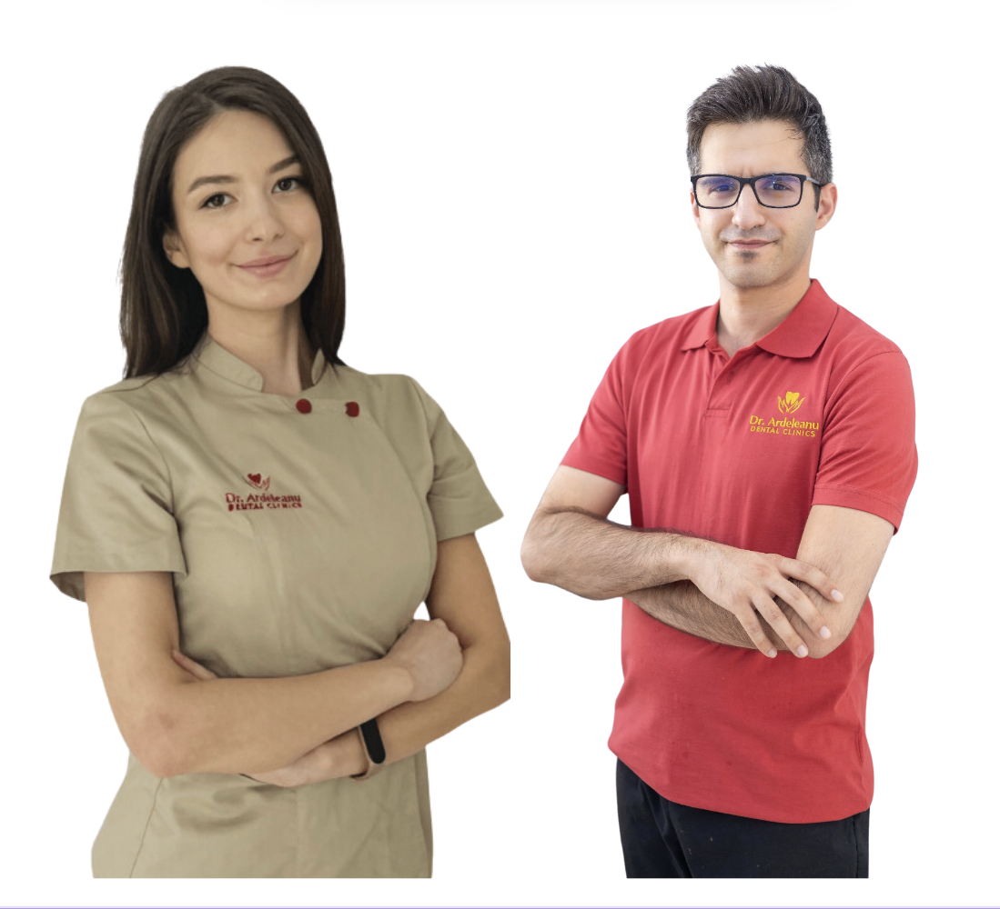
1.Introducere. Rolul Asistentului Medical
Întregul parcurs al pacientului în Clinicile Dr. Ardeleanu începe încă din recepție, unde acesta este întâmpinat cu profesionalism și empatie, iar comunicarea se realizează constant la persoana a treia, menținând un ton respectuos și adecvat. Asistentul medical contribuie în mod activ la desfășurarea acestui prim contact, facilitând o comunicare clară și oferind informațiile necesare pentru ca pacientul să se simtă confortabil și în siguranță. După identificarea programării și verificarea documentației medicale, pacientul este condus către cabinetul stomatologic, unde i se explică succint procesul medical ce urmează.
Odată ajuns în cabinet, asistentul medical se asigură că pacientul este acomodat corespunzător, oferindu-i detalii despre procedurile care vor urma și răspunzând eventualelor întrebări. În același timp, asistentul pregătește riguros scaunul stomatologic, ajustându-l în funcție de necesitățile tratamentului și de preferințele medicului specialist. Instrumentarul este organizat conform standardelor stricte de igienă și siguranță, utilizând tehnici specifice de sterilizare pentru a elimina orice risc de contaminare. Se verifică respectarea protocoalelor de lucru în funcție de specializarea medicală implicată — stomatologie generală, endodonție, chirurgie, ortodonție sau pedodonție — și se pregătesc materialele și echipamentele necesare pentru fiecare intervenție.
Asistentul medical are responsabilitatea de a oferi suport activ medicului pe tot parcursul tratamentului, anticipând nevoile acestuia și răspunzând prompt la solicitările făcute. În timpul intervenției, se ocupă de aspirarea salivei, manevrarea instrumentelor, aplicarea materialelor specifice și monitorizarea confortului pacientului, având grijă să păstreze o atmosferă calmă și încurajatoare. În cazul tratamentelor complexe, asistentul documentează atent intervențiile și se asigură că orice eventuală reintervenție medicală este înregistrată conform procedurilor standardizate.
După finalizarea tratamentului, asistentul medical ajută pacientul să se ridice în siguranță de pe scaun (în cazurile mai dificile), oferindu-i indicațiile post-tratament recomandate de medic și răspunzând la orice întrebări suplimentare. Se asigură că pacientul părăsește cabinetul într-o stare de confort și siguranță, cu toate informațiile necesare pentru îngrijirea ulterioară. Ulterior, curăță și dezinfectează riguros spațiul de lucru, sterilizează instrumentele utilizate și restabilește ordinea în cabinet, pregătindu-l pentru următorul pacient.
Întregul proces se desfășoară cu respectarea strictă a procedurilor și protocoalelor interne, precum și a reglementărilor legale în vigoare privind siguranța și igiena în unitățile medicale. În plus, asistenții medicali sunt încurajați să participe activ la dezvoltarea lor profesională continuă, prin perfecționarea constantă a cunoștințelor și aplicarea celor mai bune practici în domeniu. Prin acest flux structurat și bine organizat, asistența medicală din clinicile noastre asigură un nivel ridicat de calitate și eficiență, contribuind la menținerea unei experiențe medicale optime pentru fiecare pacient.
În calitate de asistent medical în stomatologia generală, rolul Asistentului Medical este de a sprijini activitatea medicului stomatolog și de a asigura pacienților o experiență confortabilă și profesionistă. Protocoalele de asistență medicală detaliază responsabilitățile asistentului și modul corect de desfășurare a activităților zilnice, punând accent pe comunicarea eficientă cu pacientul, respectarea riguroasă a normelor de igienă și siguranță, precum și pe pregătirea corespunzătoare a cabinetului stomatologic. Toate aceste reguli și standarde sunt esențiale pentru menținerea unui mediu medical sigur și eficient.
Setul integral de protocoale & proceduri
2.Comunicarea cu pacientul. Relația asistent medical – pacient
Comunicarea este acțiunea prin care un expeditor transmite o serie de informații perceptibile unui destinatar. Reprezintă cea mai importantă metodă prin care stabilim o legătură cu aproapele nostru.
Domeniul medical are în centru starea de sănătate a pacientului. Relația cadrului medical față de pacient trebuie să aibă la bază înțelegere, confidențialitate, respect și empatie, deoarece pacientul se prezintă cu incertitudine în fața noastră și cu un stres destul de mare, fiind vorba despre starea de sănătate. Pacientul trebuie să fie acceptat indiferent de vârstă, gen, etnie sau situație financiară și văzut ca un întreg, cu toate funcțiile sale. Înțelegerea problemelor pacientului ajută la detensionarea acestuia.
Confidențialitatea joacă un rol important în menținerea unei bune relații cu pacientul. De aceea este interzis să deschidem dialoguri în sala de așteptare, de față cu alte persoane, despre patologiile sale. Respectul și empatia aduse pacientului îl fac pe acesta să se simtă prețuit și îl ajută să observe că înțelegem îngrijorările pe care le are.
Vom clasifica comunicarea în două categorii: comunicare verbală și comunicare non-verbală. Pentru ambele categorii, asistenta va trebui să emită semnale corecte și să fie atentă la semnalele emise de pacient.
Comunicarea verbală
- Adresare la persoana a III-a — „Domnul/Doamna [Nume]"; formule cu „dumneavoastră", „vă rog", „mulțumesc".
- Ton calm, ritm măsurat — explicații succinte ale fiecărui pas înainte de a-l face; evitarea jargonului medical.
- Reformulare și confirmare — după indicațiile medicului, asistenta verifică înțelegerea pacientului prin parafrazare.
- Fără conversații paralele — în prezența pacientului nu se vorbește cu colegii pe alte teme; pacientul este centrul atenției.
Comunicarea non-verbală
- Contactul vizual denotă încredere, atenție, sinceritate și dorință de a comunica.
- Expresia feței este un bun indicator al stării emoționale.
- Atitudinea influențează direct și puternic prima impresie.
- Postura închisă (membre încrucișate) sau deschisă (membre neîncrucișate) afectează direct comunicarea.
3.Reguli generale pentru buna desfășurare a activității
Actul medical în Clinicile Dr. Ardeleanu se desfășoară întotdeauna cu maximă diligență și profesionalism, având ca prioritate siguranța și confortul pacientului. În acest sens, asistentul medical are responsabilitatea de a respecta următoarele șapte categorii de reguli, sistematizate pentru ușurința aplicării zilnice — de la pregătirea cabinetului și echipamentul de protecție, până la conduita profesională și normele de igienă.
3.1 Igiena și pregătirea cabinetului
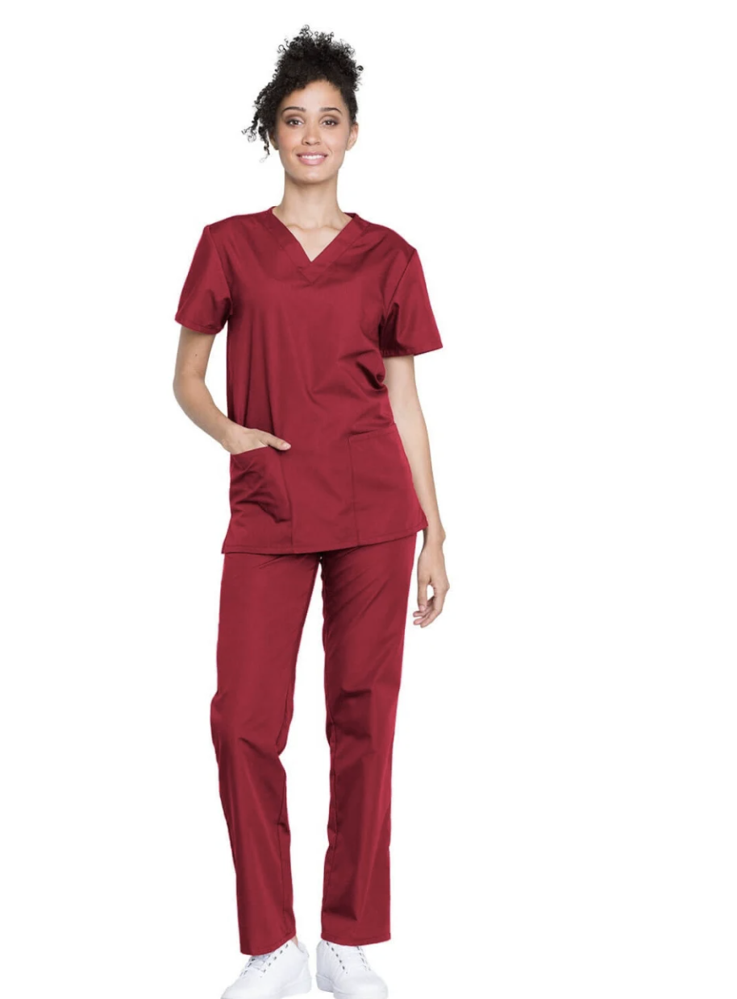
- Cabinetul se pregătește și se igienizează după fiecare pacient, respectând protocoalele de dezinfecție.
- Aplicarea dezinfectantului se face indirect — prin pulverizarea pe un șervețel de unică folosință, urmată de ștergerea suprafețelor, a unitului dentar și a materialelor.
- Toate materialele și instrumentele utilizate vor fi dezinfectate și așezate la locul lor după fiecare manoperă.
- Instrumentele utilizate vor fi depozitate în cuvele de presterilizare (vezi Capitolul XI).
- Schimbarea mănușilor este obligatorie în situații de forță majoră (instrument căzut, mănuși deteriorate, ieșire din cabinet).
- Dacă medicul solicită un material indisponibil, asistentul comunică discret lipsa și propune o alternativă adecvată.
3.2 Echipamentul de protecție personală
- În timpul fiecărei manopere — obligatoriu mănuși, ochelari de protecție și mască.
- Masca trebuie purtată corect, acoperind atât gura, cât și nasul.
- Mănușile se schimbă ori de câte ori situația o impune.
- Nu este permisă ieșirea din cabinet cu mănuși de unică folosință.
3.3 Ținuta și igiena personală
- Uniforma trebuie să fie mereu curată, călcată, iar papucii să fie curați și purtați cu șosete.
- Fetele vor avea părul prins pentru a menține un aspect ordonat și igienic.
- Asistentelor le este interzisă purtarea unghiilor lungi, precum și a bijuteriilor (brățări, inele) — cu excepția verighetei. Unghiile trebuie să fie scurte, curate și îngrijite, într-un aspect natural. Nu este permisă utilizarea lacului de unghii în culori stridente sau aplicarea de modele decorative.
- Asistentul trebuie să acorde atenție igienei personale, evitând mirosurile neplăcute (naturale sau de țigări) și asigurând un aspect îngrijit (unghii, păr și dantură curate).
3.4 Comportamentul profesional
- Asistentul medical respectă întotdeauna medicul, adresându-i-se cu „dumneavoastră".
- Nu se exprimă neîntrebat și nu oferă opinii despre actul medical în prezența pacienților.
- Discursul este politicos; limbajul neadecvat — interzis.
- Nu este permisă conversația cu colegii pe hol, în prezența pacienților.
- Salutul pacienților, de fiecare dată — obligatoriu.
3.5 Interacțiunea cu pacienții
Pacienții sunt invitați în cabinet folosind formule respectuoase: „Domnul/Doamna [Nume], vă rog să poftiți în cabinet." sau „Domnul/Doamna [Nume], sunteți invitat(ă) în cabinet."
3.6 Reguli în interiorul cabinetului
- Nu se va aduce și consuma mâncare sau băutură în cabinet.
- Nu este permisă adunarea instrumentarului sau intrarea în cabinet în timpul tratamentului, atunci când pacienții se află pe scaunul stomatologic.
3.7 Norme de igienă și siguranță
- Mâinile trebuie spălate și dezinfectate înainte și după fiecare pacient.
- Asistentul medical va asigura o igienă riguroasă a întregului spațiu de lucru și a echipamentelor utilizate (detalii la Capitolul XIX).
- Asistentul medical este răspunzător pentru urmărirea procesului de sterilizare (detalii la Capitolul XI).
Aceste reguli sunt esențiale pentru menținerea unui mediu sigur, curat și profesionist în cadrul cabinetului stomatologic, contribuind astfel la îmbunătățirea experienței pacienților și la susținerea actului medical de calitate.
4.Reguli generale de pregătire a cabinetului stomatologic
Pentru asigurarea unui mediu sigur și eficient în cabinetul stomatologic, pregătirea acestuia trebuie să urmeze o serie de pași bine structurați și riguroși. Lista de mai jos reprezintă protocolul complet de deschidere, configurare și gestionare în timpul programului — fiecare pas având un rol specific în prevenirea contaminării și asigurarea trasabilității actului medical.
- Activarea și întreținerea compresoarelor. La începutul programului de lucru se realizează pornirea compresoarelor și verificarea funcționării acestora, asigurând un mediu de lucru sigur și eficient. Se respectă ora și aerisirea corespunzătoare pentru a menține o funcționare optimă și o calitate ridicată a aerului comprimat (detalii la Cap. XIII).
- Pregătirea cuvelor de presterilizare. Cuvele sunt distribuite în fiecare dimineață în cabinete, asigurând acces rapid și o organizare eficientă a instrumentarului necesar în timpul consultațiilor și intervențiilor. Fiecare cuvă este etichetată corespunzător, eticheta conținând obligatoriu: data, ora, tipul și concentrația soluției utilizate, timpul de acțiune și numele persoanei responsabile (detalii la Cap. XI).
- Configurarea unitului dentar. Se deschide unitul (scaunul) și se montează piesele necesare: turbina, contraunghiul și piesa dreaptă. Acestea sunt rulate cu freze montate pentru a verifica funcționalitatea și a evita eventualele defecțiuni în timpul utilizării, precum și pentru a evacua excesul de ulei (detalii la Cap. XIII).
- Dezinfectarea suprafețelor. Toate suprafețele din cabinet sunt curățate cu dezinfectant și șervețele speciale pentru a asigura o igienă impecabilă și pentru a preveni riscul de contaminare.
- Întreținerea echipamentelor de protecție. Ochelarii și scutul de protecție sunt spălați cu apă și săpun, apoi dezinfectați cu soluții speciale aplicate pe șervețele curate, pentru a oferi personalului și pacienților siguranță maximă.
- Igienizarea chiuvetei. Chiuveta este igienizată cu soluții adecvate, asigurându-se că toate zonele de contact sunt curate și dezinfectate corespunzător.
- Pregătirea tăviței medicului. Se organizează tăvița medicului cu toate instrumentele necesare: mănuși, mască, oglindă, precum și trusa de consultație (pensă, sondă, spatulă). Astfel, medicul are la îndemână toate materialele necesare pentru o consultație eficientă și sigură.
- Setarea materialelor pentru pacient. Se pregătește aspiratorul, paharul de unică folosință, baveta și ochelarii pentru pacient — contribuind la o experiență confortabilă și igienică.
- Pregătirea radiografiei pacientului. Radiografia este deschisă pe laptop, facilitând accesul rapid la informațiile necesare pentru stabilirea unui diagnostic corect și detaliat (detalii la Cap. XV).
- Pregătirea camerei intraorale. Pentru consult, se pornește camera intraorală, verificându-se funcționarea pentru a asigura un consult eficient și confortabil pentru pacient.
- Verificarea materialelor din cabinet. Se efectuează o verificare amănunțită a tuturor materialelor, asigurându-se că sunt disponibile și accesibile toate consumabilele și instrumentele necesare. Pe fiecare material deschis se aplică o etichetă care va conține data și ora deschiderii, precum și numele asistentei care a deschis produsul, pentru asigurarea trasabilității și respectarea normelor de control al infecțiilor.
- Scanarea instrumentarului. La finalul fiecărei manopere, asistenta scanează eticheta cod-bare de pe fiecare pachet al ustensilelor de lucru. Scanarea se adaugă automat în
SPSS, la profilul pacientului, cu informațiile legate de trasabilitatea instrumentarului sterilizat care a fost utilizat în manopera de lucru. - Gestionarea deșeurilor medicale. Cutia pentru deșeurile medicale infecțioase este completată și gestionată conform normelor de siguranță, prevenind riscul de contaminare și respectând reglementările în vigoare (detalii la Cap. XII).
Închiderea cabinetului la sfârșitul programului
La finalul programului de lucru, se realizează închiderea și organizarea cabinetului prin oprirea echipamentelor (laptop, unit dentar, aer condiționat), închiderea geamurilor și ordonarea spațiului, asigurând un mediu de lucru profesional.
- Întreținerea unitului dentar — curățarea sitelor și filtrelor pentru îndepărtarea reziduurilor acumulate pe parcursul zilei.
- Instalația de aspirare — se întreține prin aspirarea soluției de dezinfectare și întreținere specifică, conform recomandărilor producătorului, pentru prevenirea depunerilor și menținerea funcționalității sistemului.
- Închiderea compresoarelor — oprirea echipamentului și curățarea sitelor și filtrelor pentru îndepărtarea impurităților. Se verifică și se golește, după caz, rezervorul de condens, pentru prevenirea acumulării de umiditate. Se inspectează vizual echipamentul pentru eventuale disfuncționalități.
- Deconectarea echipamentelor — înainte de plecare, asistentul se asigură că toate compresoarele, autoclavul și presa pentru folii sunt închise corespunzător, contribuind la siguranța echipamentelor și la prelungirea duratei lor de viață.
5.Fluxul pacientului în clinică
Asistentul medical joacă un rol esențial în asigurarea unui parcurs fluent și confortabil al pacientului în cadrul clinicii stomatologice, contribuind activ la fiecare etapă a procesului medical, de la preluare până la pregătirea cabinetului pentru următorul pacient.
- Preluarea pacientului. La sosirea în clinică, pacientul nou este întâmpinat de personalul de la recepție și ghidat să completeze fișa medicală digitală pe tabletă, în cadrul procesului de onboarding digital. După finalizarea acestei etape, asistentul medical preia pacientul din zona recepției, oferindu-i informații utile și creând un mediu prietenos și profesionist.
- Realizarea investigațiilor radiologice inițiale. În funcție de recomandările medicului sau de nevoile specifice ale pacientului, asistentul medical efectuează radiografia dentară OPG / RX, asigurându-se că procedura se desfășoară în condiții de siguranță și confort maxim pentru pacient (detalii la Cap. XV).
- Realizarea digitalizării inițiale a pacientului. În funcție de recomandările medicului sau de nevoile specifice ale pacientului, asistentul medical efectuează scanarea intraorală și scanarea facială, utilizând echipamente digitale moderne pentru a obține o imagine completă și precisă a structurilor dentare și a trăsăturilor faciale. Procedura este realizată cu atenție, asigurând acuratețea datelor colectate, precum și confortul și siguranța maximă a pacientului, facilitând astfel planificarea corectă și personalizată a tratamentului (detalii la Cap. XVI).
- Realizarea fotografiilor clinice inițiale pentru digitalizarea pacientului. În funcție de protocolul clinic și de planul de tratament stabilit de medic, asistentul medical efectuează fotografiile necesare documentației inițiale. Acestea includ fotografii faciale (extraorale) și fotografii intraorale, realizate cu telefonul mobil, respectând criteriile de claritate, încadrare și iluminare adecvată. Scopul acestora este digitalizarea cazului, evaluarea estetică și funcțională, precum și monitorizarea evoluției tratamentului. Procedura se desfășoară în condiții de confort, cu explicarea etapelor și cu respectarea normelor de confidențialitate și protecție a datelor (detalii la Cap. XVII).
- Asistența în cabinet. Asistentul medical însoțește pacientul în cabinetul stomatologic și îi explică succint pașii următori. Pe durata consultației și a tratamentului, asistentul sprijină activ medicul stomatolog, pregătind materialele necesare, asistând la manoperele medicale și asigurând comunicarea eficientă cu pacientul.
- Pregătirea pentru următorul pacient. După încheierea consultației, asistentul medical se ocupă de igienizarea și pregătirea cabinetului pentru următorul pacient. Aceasta implică dezinfectarea suprafețelor, a materialelor folosite și a aparaturii medicale, sterilizarea instrumentarului medical și organizarea materialelor, conform celor mai înalte standarde de igienă și siguranță.
Prin implicarea sa directă în fiecare etapă a fluxului pacientului, asistentul medical contribuie semnificativ la eficiența operațională a clinicii și la îmbunătățirea experienței generale a pacientului. Detaliile fluxului medico-legal — P0 Programare, P1 Recepție/Cabinet, P2 Tratament — sunt prezentate în Capitolul II.
Capitolul II — Capitol nou în ediția V3.0Onboarding pacient. Fluxul medico-legal în clinică
Acest capitol descrie fluxul operațional al pacientului în cadrul clinicii, de la primul contact cu organizația până la tratamentul medical și programările ulterioare.
1. Scopul procesului
Scopul acestui proces este de a asigura:
- o experiență profesionistă și coerentă pentru pacient încă de la primul contact;
- colectarea corectă și completă a datelor pacientului;
- introducerea datelor în sistemul SPSS;
- respectarea cerințelor legale privind documentele medicale, consimțămintele și prelucrarea datelor personale;
- comunicarea eficientă între recepție, pacient, medic și asistenta medicală;
- trasabilitatea actului medical și a documentelor semnate;
- continuitatea tratamentului în condiții de siguranță și conformitate.
Procesul este structurat în trei etape principale: P0 — Programarea inițială, P1 — Prezentarea pacientului în clinică și P2 — Tratament și programări ulterioare.
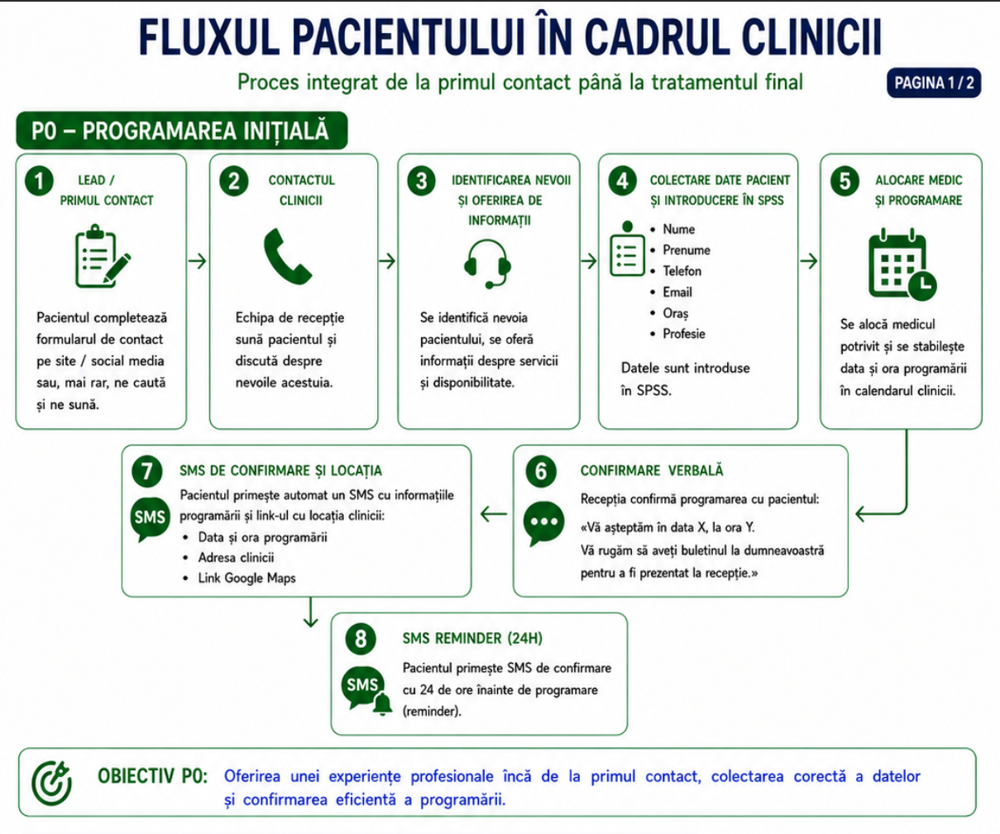
1.Etapa P0 — Programarea inițială
1.1 Leadul și primul contact cu pacientul
Fluxul începe în momentul în care pacientul intră pentru prima dată în contact cu clinica — prin formularul de pe site, prin social media, prin recomandări, prin apel telefonic direct sau prin alte canale. Indiferent de canal, această etapă reprezintă primul punct de interacțiune și influențează semnificativ prima impresie.
Comunicarea trebuie să fie clară, empatică și profesionistă. Pacientul trebuie să simtă că este ascultat, că solicitarea lui este înțeleasă și că urmează să fie ghidat corect către serviciul potrivit.
1.2 Contactarea pacientului de către recepție
Echipa de recepție contactează pacientul telefonic sau preia apelul acestuia și discută despre motivul solicitării. În cadrul conversației, recepția identifică nevoia principală a pacientului, stabilește tipul de serviciu sau specialitatea necesară și oferă informații generale despre disponibilitate, proceduri și pașii următori.
În această etapă, recepția trebuie să acorde atenție modului în care pacientul își exprimă problema. Uneori, pacientul poate descrie simptome, disconfort, urgențe sau dorințe estetice fără să știe exact ce specialitate este necesară. Rolul recepției este de a clarifica solicitarea și de a direcționa pacientul cât mai corect. Comunicarea trebuie să fie orientată către pacient, fără termeni inutil de tehnici și fără promisiuni medicale care pot fi confirmate doar de medic în urma consultației.
1.3 Particularități ale primului contact
În unele situații, pacientul completează formularul de contact și așteaptă să fie sunat de echipa de recepție. În alte cazuri, pacientul sună direct la clinică pentru a solicita informații sau pentru a stabili o programare. Indiferent de canal, acest prim punct de interacțiune influențează semnificativ prima impresie a pacientului asupra clinicii.
1.4 Identificarea nevoii și oferirea informațiilor
După clarificarea motivului solicitării, recepția oferă pacientului informațiile relevante despre serviciile clinicii și despre disponibilitatea pentru programare. Scopul acestei etape este ca pacientul să înțeleagă ce urmează să se întâmple, ce tip de consultație sau tratament poate fi necesar și care sunt pașii următori. Recepția urmărește încadrarea solicitării într-o specialitate potrivită, oferirea unor informații clare și corecte, pregătirea pacientului pentru programare și evitarea confuziilor privind tipul consultației sau procedurii.
1.5 Colectarea datelor și introducerea în SPSS
Pentru realizarea programării, recepția colectează numele, prenumele, numărul de telefon, adresa de email, orașul și profesia. Datele sunt introduse în SPSS, în fișa pacientului, pentru a permite identificarea corectă a acestuia și organizarea comunicărilor ulterioare. Aceste informații sunt necesare pentru crearea sau actualizarea fișei pacientului, pentru transmiterea notificărilor, pentru organizarea programărilor și pentru completarea documentelor necesare în etapele următoare. Introducerea corectă a datelor este importantă, deoarece orice eroare poate afecta comunicarea cu pacientul, transmiterea documentelor sau identificarea acestuia în sistem.
1.6 Alocarea medicului și stabilirea programării
Alocarea medicului se face în funcție de specialitatea necesară, disponibilitatea medicului, tipul solicitării pacientului, complexitatea cazului și continuitatea tratamentului, dacă pacientul a mai fost anterior în clinică. Programarea este introdusă în calendarul clinicii, cu data și ora stabilite. În această etapă, recepția trebuie să se asigure că pacientul a înțeles corect detaliile programării și că acestea sunt înregistrate corespunzător în sistem.
1.7 Confirmarea verbală a programării
Recepția confirmă verbal programarea cu pacientul, folosind o exprimare clară și standardizată. Un exemplu de formulare: „Vă așteptăm în data [X], la ora [Y]. Vă rugăm să aveți buletinul la dumneavoastră pentru a fi prezentat la recepție." Această confirmare are rolul de a valida data și ora, de a seta corect așteptările și de a informa pacientul cu privire la documentul de identitate necesar. O confirmare clară reduce riscul de neprezentare, întârziere sau confuzie legată de locație ori program.
1.8 SMS-ul de confirmare și locația clinicii
După confirmarea telefonică, pacientul primește un SMS automat care conține data programării, ora programării, adresa clinicii și linkul Google Maps către locație. SMS-ul reprezintă o confirmare scrisă a detaliilor discutate telefonic și ajută pacientul să ajungă corect la clinică. Această etapă contribuie la reducerea absențelor, îmbunătățirea experienței pacientului și clarificarea detaliilor logistice ale programării.
2.Etapa P1 — Prezentarea pacientului în clinică
2.1 Primirea pacientului la recepție
Pacientul se prezintă la recepție la data și ora programării. Recepția are responsabilitatea de a-l întâmpina într-un mod profesionist, de a verifica identitatea acestuia și de a confirma programarea în SPSS.
În această etapă, pacientului i se solicită actul de identitate, iar recepția verifică:
- numele și prenumele;
- existența programării;
- medicul alocat;
- ora programării;
- statusul pacientului în sistem.
După verificare, se inițiază procesul de onboarding. Primirea pacientului trebuie să fie calmă și organizată; pacientul este ghidat clar, mai ales dacă se află pentru prima dată în clinică.
2.2 Verificarea identității și inițierea onboarding-ului
După verificarea actului de identitate, recepția confirmă programarea în SPSS și pregătește documentele necesare pentru completare. Această verificare este importantă pentru evitarea erorilor de identificare și pentru asigurarea corectitudinii documentelor medicale și administrative. Recepția se asigură că pacientul primește formularele potrivite, în funcție de tipul vizitei, specialitatea implicată și procedurile care urmează să fie efectuate.
2.3 Completarea documentației pe tabletă
Pacientul completează documentele necesare pe tabletă, în sistemul SPSS. Recepția transmite formularele aferente vizitei și asistă pacientul, dacă este cazul. Documentele completate digital sunt salvate în sistem conform procedurilor interne. Pentru anumite documente speciale, semnarea se poate face separat.
2.4 Anamneza pacientului
Anamneza este un document esențial — chestionarul de evaluare a stării generale de sănătate, structurat pe modelul standardizat CMDR. Colectează informații despre starea generală, afecțiuni medicale existente, tratamente în curs, alergii, sarcină, intervenții anterioare și alte riscuri medicale relevante.
Pentru întrebările la care pacientul răspunde cu „DA", sistemul SPSS poate genera alerte sau un sumar al statusului medical. Anamneza este necesară înainte de actul medical și se salvează în format PDF.
2.5 Consimțăminte și documente legale
Din secțiunea de formulare specializate din SPSS sunt selectate documentele necesare:
- Consimțământ — prelucrarea datelor personale medicale
- Imagini clinice și scanări intraorale 2D/3D
- Scanări faciale 3D și modele digitale ale feței
- Înregistrări video fără sunet în cadrul actului medical
- Prelucrarea datelor în scopuri de marketing
- Consimțăminte specifice procedurilor radiologice
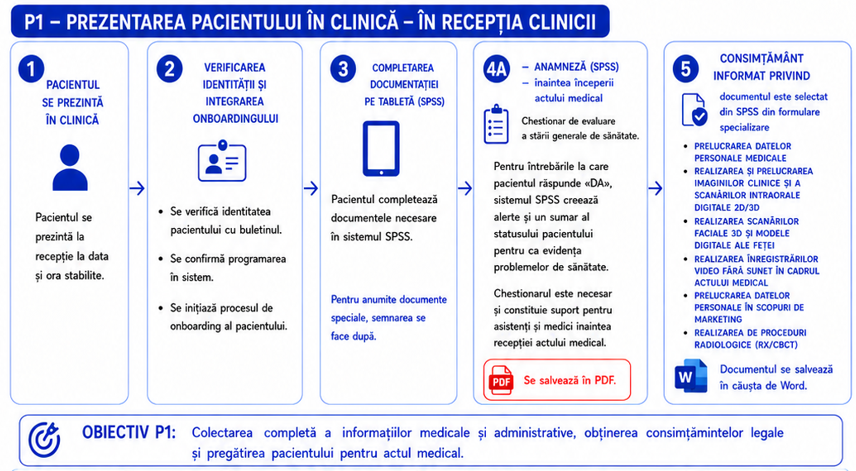
3.Etapa P1 — În cabinetul medical
3.1 Discuția cu medicul și verificarea anamnezei
Medicul discută cu pacientul, verifică anamneza, abordează motivul prezentării, istoricul, situația clinică și planul de tratament propus. Explică pacientului tratamentul care urmează și se asigură că acesta înțelege informațiile. Înainte de începerea tratamentului — și înainte ca pacientul să fie așezat pe scaunul de tratament — se obține acordul informat.
Acordul se semnează la fiecare tratament sau vizită — sau la fiecare modificare a planului de tratament. Dacă în cadrul aceleiași vizite sunt efectuate mai multe tratamente, se poate semna un singur acord pe care sunt incluse toate manoperele. Medicul completează numele medicului care se ocupă de tratament și denumirea tratamentului. Acordul se transmite spre semnare pe telefon (prin cod QR) sau pe tabletă; după semnare se salvează în format PDF.
În cazul în care, pe parcursul desfășurării tratamentului sau al intervenției, medicul decide modificarea planului de tratament, introducerea unor proceduri suplimentare sau schimbarea abordării terapeutice, pacientul va fi informat asupra acestor modificări și va semna un nou acord informat al pacientului, actualizat.
Responsabilitatea actualizării acordului revine în primul rând medicului și, în subsidiar, asistentului medical. Pacientul nu va părăsi cabinetul până la semnarea acordului revizuit, care reflectă modificările intervenite în planul de tratament.
3.2 Rolul asistentei în cabinetul medical
Asistenta verifică dacă anamneza este completată, dacă există răspunsuri cu „DA", dacă sunt menționate alergii, tratamente în curs, afecțiuni sau situații speciale, și dacă documentele obligatorii sunt semnate.
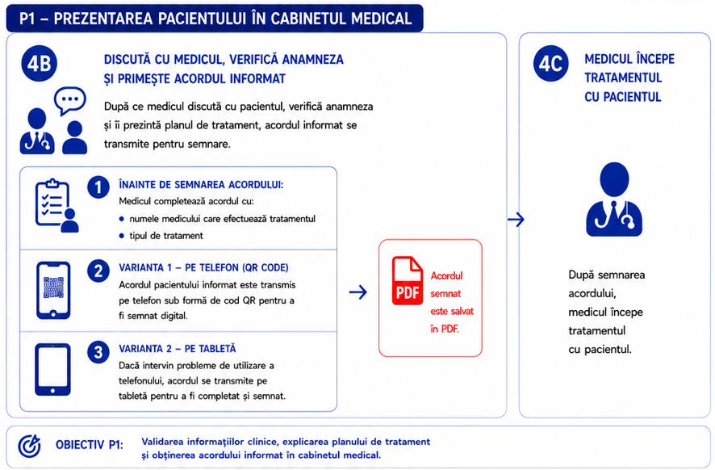
4.Etapa P2 — Tratament și programări ulterioare
4.1 Programări ulterioare
Pacientul revine pentru specialități diferite (endodonție, protetică, parodontologie, chirurgie, ortodonție etc.). La fiecare vizită, recepția confirmă programarea, iar pacientul este direcționat conform fluxului clinicii. În cabinet, echipa medicală verifică documentele necesare și se asigură că acordurile sunt actualizate înainte de începerea tratamentului.
4.2 Semnarea acordului în cabinet
Acordul pacientului se semnează la fiecare tratament, la fiecare vizită sau ori de câte ori intervine o modificare a planului de tratament inițial. Semnarea se realizează digital — pe telefon prin cod QR sau pe tabletă — și, după caz, olograf pentru procedurile care necesită un consimțământ special. Acordul se transmite spre semnare pentru fiecare manoperă sau tratament, indiferent dacă se schimbă sau nu medicul ori specialitatea.
Dacă planul de tratament inițial nu se modifică și medicul rămâne același, acordul existent rămâne valabil pentru continuarea tratamentului. Vezi și regulile despre modificarea planului pe parcurs la secțiunea 3.1.
4.3 Rolul asistentei în etapa P2
În etapa tratamentului și a programărilor ulterioare, asistenta contribuie la pregătirea pacientului, comunicarea pașilor următori și reducerea anxietății. De asemenea, asistenta verifică existența documentelor necesare și transmite medicului informațiile relevante. Asistenta trebuie să se asigure că pacientul are documentele actualizate înainte de începerea manoperei și că eventualele informații medicale importante sunt comunicate medicului.
4.4 Semnarea unui nou acord actualizat
Înainte de începerea tratamentului, pacientul semnează un acord actualizat care include numele medicului care preia pacientul și actul medical sau procedura ce urmează să fie efectuată. Documentul se salvează în format PDF. Această etapă este importantă pentru informarea corectă a pacientului, exprimarea acordului pentru procedură, trasabilitatea actului medical și respectarea cerințelor legale.
4.5 Începerea tratamentului
După verificarea documentației și semnarea acordurilor necesare, medicul începe tratamentul cu pacientul. Tratamentul se desfășoară conform planului de tratament stabilit, specialității implicate, acordului informat semnat, indicațiilor medicale și procedurilor interne ale clinicii.
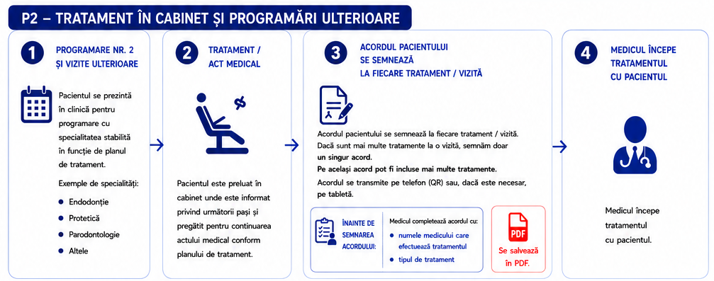
4.6 Consimțăminte specifice după caz
În funcție de procedură, pacientul poate semna consimțăminte specifice: tratamente chirurgicale, sedare conștientă, ortodonție, endodonție, parodontologie, protetică, toxină botulinică, acid hialuronic, mezoterapie cu PRF, fotografii, scanare facială, scanare intraorală, materiale video.
4.7 Arhiva consimțămintelor speciale — semnate olograf
Pentru anumite proceduri cu risc clinic sau juridic suplimentar, semnarea digitală a acordului informat nu este suficientă. În aceste cazuri, pacientul semnează un consimțământ special olograf, care se păstrează în arhiva fizică a clinicii. Este obligația comună a medicului, asistenței medicale și a registratorului medical să se asigure că semnarea olografă se realizează ori de câte ori se ajunge la una dintre aceste situații speciale. Aceste documente reprezintă un strat suplimentar de protecție medico-legală pentru clinică, atât în litigii de tip malpraxis, cât și în reclamații ANPC.
4.8 Arhivarea documentelor olografe
Toate documentele semnate olograf se îndosariază la recepție. Este foarte important ca aceste documente să fie păstrate în condiții de siguranță, deoarece conțin informații confidențiale și fac parte din documentația pacientului. Se recomandă arhivarea în biroul managerului de clinică sau într-un spațiu desemnat pentru documente confidențiale. Arhivarea corectă asigură protecția datelor pacientului, accesul controlat la documente, trasabilitatea actului medical, conformitatea legală și prevenirea pierderii documentelor.
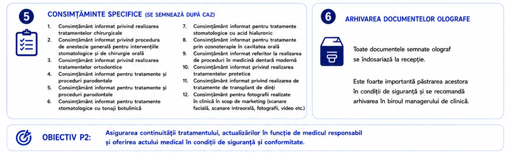
5.Rolul și responsabilitățile asistentei în fluxul pacientului
Asistenta medicală are un rol activ în fluxul pacientului, în special în etapele P1 și P2. Aceasta nu are doar un rol de sprijin, ci contribuie direct la siguranța pacientului, la buna desfășurare a actului medical și la respectarea procedurilor interne.
5.1 Scopul rolului asistentei
Scopul principal al asistentei este de a verifica documentația medicală, de a identifica riscurile medicale, de a informa medicul cu privire la situațiile relevante și de a sprijini pacientul pe parcursul vizitei în clinică. Asistenta trebuie să mențină o comunicare activă și empatică cu pacientul, să observe eventualele temeri sau neclarități și să transmită medicului informațiile care pot influența tratamentul.
5.2 Verificarea documentației pacientului
Asistenta verifică documentația pacientului după completarea acesteia pe tabletă și înainte de începerea actului medical. Verificarea se aplică la prima prezentare, la vizitele ulterioare, la schimbarea medicului, la schimbarea specialității și înaintea procedurilor specifice.
Documentele care trebuie verificate includ:
- chestionarul de evaluare a stării generale de sănătate;
- acordul pacientului informat;
- consimțămintele specifice;
- documentele privind prelucrarea datelor personale;
- consimțământul radiologic;
- formularul de colectare a datelor.
5.3 Verificarea chestionarului medical
Chestionarul medical este un document critic, deoarece oferă informații despre starea generală a pacientului și despre riscurile care pot influența actul medical. Asistenta trebuie să verifice dacă pacientul a menționat afecțiuni generale, alergii, tratamente medicamentoase, intervenții anterioare, boli cronice, sarcină sau alte situații medicale relevante. Dacă există răspunsuri cu potențial risc, asistenta trebuie să informeze imediat medicul responsabil.
5.4 Escaladarea informațiilor către medic
În cazul în care asistenta identifică informații relevante sau riscuri medicale, aceasta are obligația de a informa medicul responsabil. Comunicarea trebuie să fie clară, completă, rapidă și documentată, dacă situația o impune. Această etapă este esențială pentru siguranța pacientului și pentru adaptarea planului de tratament la situația clinică reală.
5.5 Comunicarea activă cu pacientul
Asistenta trebuie să mențină o comunicare empatică și activă cu pacientul. Aceasta poate afla informații suplimentare despre motivul prezentării, istoricul medical relevant, problemele actuale, experiențele anterioare, eventualele temeri și așteptările pacientului. Informațiile relevante trebuie transmise medicului, astfel încât pacientul să beneficieze de o abordare personalizată și sigură.
5.6 Responsabilități în cazul radiografiilor și CT-urilor
În cazul efectuării unei radiografii sau a unui CT, asistenta care realizează investigația trebuie să își noteze numele și prenumele în secțiunea de observații din SPSS. Această mențiune este necesară pentru trasabilitate, identificarea persoanei responsabile, evidența internă și prevenirea confuziilor.
După efectuarea investigației, asistenta informează pacientul că radiografia și/sau CT-ul vor fi transmise pe email. Materialele imagistice trebuie trimise imediat către pacient, conform procedurii interne. Înainte ca pacientul să părăsească clinica, asistenta verifică dacă pacientul a primit emailul și solicită confirmare explicită. Această verificare previne nemulțumirile pacientului, revenirea acestuia pentru documente, întârzierile în comunicarea rezultatelor și incidentele operaționale.
5.7 Verificarea continuă a documentelor
Pe parcursul întregului flux, asistenta trebuie să verifice constant dacă pacientul are toate documentele completate și actualizate. Această responsabilitate este importantă mai ales atunci când pacientul schimbă medicul, trece la o altă specialitate, începe o nouă etapă de tratament, efectuează o procedură care necesită consimțământ specific sau revine pentru vizite ulterioare. Verificarea documentelor este obligatorie și face parte din controlul intern de calitate.
6.Concluzie
Fluxul operațional al pacientului asigură o experiență coerentă, profesionistă și sigură în cadrul clinicii. Structurarea procesului în etapele P0, P1 și P2 permite claritate în responsabilități, colectarea corectă a datelor, documentarea completă a actului medical, respectarea consimțămintelor și cerințelor legale, trasabilitatea intervențiilor și continuitatea tratamentului.
Asistenta medicală are un rol esențial în acest proces. Prin verificarea documentației, comunicarea cu pacientul, identificarea riscurilor și sprijinirea medicului în desfășurarea actului medical, asistenta contribuie direct la siguranța pacientului, eficiența operațională și calitatea experienței oferite în clinică.
Capitolul IIIProtocol medical de asistență în stomatologia generală ADC-STG-01
Acest capitol stabilește atribuțiile, responsabilitățile și modul în care asistentul medical contribuie la buna desfășurare a actului medical în stomatologia generală, asigurând siguranța, confortul pacientului și standardele de calitate ale Clinicilor Dr. Ardeleanu.
1.Definiții și termeni medicali
Asistentul medical trebuie să cunoască termenii medicali pentru a putea comunica eficient cu medicul în activitatea de asistență medicală. Mai jos sunt prezentați termenii și definițiile esențiale care trebuie cunoscute de către Asistentul Medical.
- Caria dentară
- Proces distructiv cronic al țesuturilor dure dentare, fără caracter inflamator, care produce necroza și distrucția acestora.
- Ocluzia dentară
- Raportul normal între dinții maxilari și cei mandibulari („mușcătura").
- Restul radicular (rr)
- Parte din rădăcina dintelui rămasă în gura pacientului.
- Puntea dentară
- Una dintre cele mai utilizate metode de restaurare dentară, a cărei prezență poate înlocui unul sau mai mulți dinți.
Prescurtări medicale
- Dinte lateral: mezial, distal, vestibular, oral, ocluzal
- Dinte frontal: mezial, distal, vestibular, oral, incizal
- CO — carie ocluzală
- COM — carie ocluzo-mezială
- COD — carie ocluzo-distală
- CS — carie secundară
- LC — leziune de colet
- OMD — ocluzo-mezială-distală
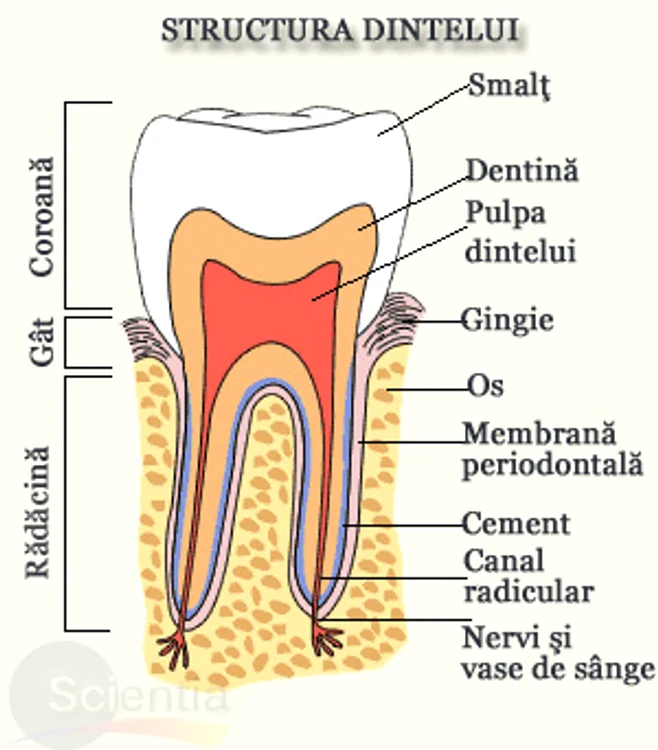
2.Protocolul medical din perspectiva medicului
În cadrul tratamentelor de stomatologie generală, medicul stomatolog joacă un rol esențial în asigurarea unei experiențe optime pentru pacient și a unei desfășurări eficiente a actului medical. Protocolul începe cu evaluarea clinică a pacientului, realizarea anamnezei și completarea fișei medicale, inclusiv identificarea eventualelor contraindicații sau precauții necesare înaintea intervenției stomatologice.
2.1 Evaluarea inițială și anamneza
Medicul va efectua o anamneză detaliată pentru a identifica problemele de sănătate generale și istoricul medical al pacientului. Se vor nota eventualele alergii, precum și antecedentele de boli infecto-contagioase sau alte afecțiuni transmisibile, care pot influența conduita terapeutică și măsurile de prevenție necesare în cadrul tratamentului stomatologic. Examinarea clinică va include atât inspecția cavității orale, cât și palparea structurilor periorale și a ganglionilor limfatici.
2.2 Igienizarea profesională
Medicul va decide asupra necesității unei igienizări profesionale, utilizând instrumente specifice precum ansa și cheița pentru detartraj, aparatul de air-flow cu pulbere dedicată și pasta profesională pentru periaj. În funcție de sensibilitatea pacientului, se poate administra anestezie topică (spray sau gel).
2.3 Procedura de extragere a firelor de sutură
În cazul în care pacientul se prezintă pentru control post-operator și extragerea firelor, medicul va utiliza instrumentar steril, inclusiv foarfeca pentru fire și seringi cu soluții de spălături (ser fiziologic). Procedura presupune îndepărtarea atentă a firelor și aplicarea unor soluții antiseptice pentru a asigura o vindecare corespunzătoare.
2.4 Protocolul pentru tratamentul de obturație (plombare)
Tratamentul de obturație implică o succesiune de etape strict secvențiale, fiecare cu rol în obținerea unei restaurări durabile, etanșe și estetice:
- Anestezia. Topică (spray/gel) sau injectabilă — seringă cu ac lung pentru anestezia Spix (mandibulă), sau ac scurt pentru maxilar — anestezia Plexală.
- Izolarea câmpului de lucru prin folosirea digii, asigurând astfel un control optim al umidității și o vizibilitate crescută.
- Prepararea cavității dentare cu ajutorul frezelor de turbină și contraunghi, utilizând freze specifice în funcție de tipul cavității (efilată, ocluzală, piatră Arkansas).
- Bizotarea marginilor de smalț — necesară atunci când se folosesc materiale de restaurare adezivă.
- Verificarea stratului dur de dentină.
- Toaletarea cavității.
- Aplicarea demineralizantului.
- Spălarea cavității și uscarea ei.
- Aplicarea bondingului pentru o aderență maximă a materialului de obturație.
- Aplicarea și modelarea materialului de obturație (compozit fluid / chitos) și întărirea acestuia cu lampa de fotopolimerizare.
- Finisarea obturației pentru a asigura estetica și funcționalitatea plombei, inclusiv verificarea ocluziei cu folia de articulație. Materialele utilizate în finisare sunt: mandrina și disc, freza de ocluzie (pară / flacără) și guma de lustruit.
2.5 Recomandări post-tratament
Medicul va oferi pacientului indicații clare privind igiena orală, utilizarea eventualelor soluții antiseptice și programarea unui control periodic pentru a monitoriza evoluția tratamentului.
3.Protocolul pentru asistenta medicală
Asistenta medicală are un rol esențial în cadrul tratamentelor de stomatologie generală, asigurând atât suport logistic și tehnic pentru medic, cât și o experiență confortabilă și sigură pentru pacient. Pe parcursul întregului protocol medical, activitatea asistentei se concentrează pe pregătirea instrumentarului, gestionarea materialelor, asistarea activă a medicului în timpul intervențiilor și menținerea unui mediu steril și bine organizat.
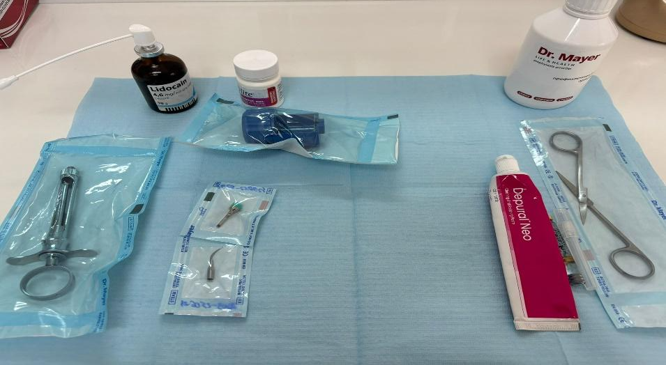
3.1 Pregătirea materialelor pentru igienizarea profesională
În prima etapă, asistenta medicală se ocupă de pregătirea materialelor și a instrumentarului necesar pentru igienizarea profesională a cavității orale. Aceasta selectează și pregătește:
- Ansa și cheița pentru detartraj
- Aparatul de air-flow cu pulbere specifică
- Pasta profesională și periuța pentru periaj
- Anestezia topică (spray sau gel), la indicația medicului
- Echipamentul de protecție pentru personalul medical — mănuși, mască, scut facial sau ochelari de protecție
- Echipamentul de protecție pentru pacient — bavetă, ochelari de protecție
3.2 Asistarea consultației și completarea fișei în SPSS
Pe parcursul consultației, Asistentul Medical sprijină activ medicul stomatolog, facilitând examinarea cavității orale. La finalul consultației, medicul urmează să înregistreze constatările examinării în SPSS, în secțiunea Notițe.
Ca excepție — și ca regulă în cazul medicilor aflați în perioadă de probă — Asistentul Medical poate introduce în SPSS toate informațiile relevante privind starea dentară a pacientului, la solicitarea expresă a medicului. Aceste date includ:
- Statusul dinților și al gingiilor
- Identificarea cariilor, plombelor, lucrărilor protetice
- Orice alte afecțiuni dentare observate
În situațiile în care Asistentul Medical completează datele în SPSS, medicul stomatolog are responsabilitatea de a verifica acuratețea și completitudinea informațiilor în secțiunea Notițe SPSS. Această etapă este esențială pentru asigurarea unui diagnostic precis și elaborarea unui plan de tratament adecvat.
3.3 Asistarea controlului post-operator și extragerea firelor
În cazul tratamentelor de control și extragere a firelor de sutură, asistenta medicală pregătește:
- Foarfeca pentru fire
- Seringi și soluțiile de spălături necesare
- Oglinda dentară și trusa de consultație
Aceasta asigură igienizarea zonei tratate și sprijină medicul în efectuarea procedurilor post-operatorii, contribuind astfel la o recuperare sigură și rapidă a pacientului.
3.4 Asistarea tratamentului de obturație
În cadrul tratamentului de obturație, asistenta medicală joacă un rol critic în fiecare etapă.
Pregătirea anesteziei
Aceasta pregătește materialele pentru anestezie, fie că este vorba de anestezie topică sau injectabilă, și asigură instrumentele necesare, precum seringa, acul adecvat și carpula cu anestezic.
Izolarea câmpului de lucru cu diga
Un alt aspect important al activității asistentei este izolarea câmpului de lucru cu diga, asistând medicul în perforarea foliei, fixarea acesteia cu cleștii și menținerea ei întinsă pe parcursul tratamentului.
Prepararea cavității
În timpul preparării cavității dentare, asistenta medicală pregătește frezele necesare, atât pentru turbină, cât și pentru contraunghi, și le înlocuiește rapid la solicitarea medicului. Aceasta gestionează materialele pentru toaleta cavității, incluzând acidul demineralizant, clorhexidina și bondingul, și asigură o bună aspirare a cavității pentru a menține câmpul vizual clar.
Obturarea propriu-zisă și fotopolimerizarea
Activitatea asistentei continuă în etapa de obturare a cavității, unde aceasta pregătește materialele de obturație (compozit fluid și chitos) și instrumentele pentru modelarea și fotopolimerizarea acestora. Asistenta medicală este responsabilă de verificarea funcționării lămpii de fotopolimerizare și de curățarea pensulelor și a instrumentarului utilizat, asigurându-se că acestea sunt mereu la îndemână pentru medic.
4.Concluzii
Respectarea riguroasă a acestui protocol permite Asistentului Medical să ofere un suport eficient medicului stomatolog și să garanteze confortul și siguranța pacientului pe durata întregului tratament. Contribuția directă în toate etapele procesului medical reflectă angajamentul față de standardele de excelență ale Clinicilor Dr. Ardeleanu.
Prin implicarea constantă, comunicarea empatică și menținerea unui mediu impecabil din punct de vedere igienic și organizatoric, asistenta medicală asigură o experiență pozitivă pentru pacienți, consolidând încrederea acestora în serviciile medicale oferite și sprijinind atât medicul, cât și pacientul în toate etapele tratamentelor de stomatologie generală.
Capitolul IVProtocol medical de asistență în endodonție ADC-END-01
Acest capitol stabilește atribuțiile, responsabilitățile și modul în care asistentul medical contribuie la buna desfășurare a tratamentului endodontic în cabinetul stomatologic, asigurând siguranța și confortul pacientului.
1.Definiție
Endodonția este acea ramură de specialitate a medicinei dentare care se ocupă cu diagnosticarea, prevenirea și tratarea patologiei pulpare și a complicațiilor pe care aceasta le are la nivelul parodonțiului apical.
Tratamentul endodontic, cunoscut și sub numele de tratament de canal, obturație de canal sau scoatere a nervului, este o procedură stomatologică ce are ca scop tratarea afecțiunilor pulpei dentare (nervului).
O dată ce pulpa dentară a fost afectată, este necesar să se intervină rapid. Netratată, infecția se acumulează și afectează osul, ducând la durere, inflamație, abces și ulterior la pierderea dintelui. Tratamentul endodontic presupune îndepărtarea pulpei dentare, țesutul ce se află în interiorul dintelui. După îndepărtarea țesutului afectat, dintele este curățat, iar spațiul rămas este sigilat.
2.Reguli specifice pentru pregătirea cabinetului
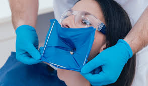
Actul medical se desfășoară întotdeauna cu maximă diligență și profesionalism, având ca prioritate siguranța și confortul pacientului. Înaintea fiecărei proceduri endodontice, asistentul aplică regulile generale de pregătire a cabinetului prezentate la Capitolul I. Regulile specifice pentru endodonție sunt:
- Dezinfectarea și pregătirea suprafețelor de lucru.
- Pregătirea anestezicului — topic (gel/spray) sau injectabil (seringă cu ac lung pentru mandibulă — anestezia Spix, sau ac scurt pentru maxilar — Plexala).
- Pregătirea setului pentru izolarea cu digă — folie de digă, șablon, clește perforator, cadru de digă, clește port-clemă și cleme specifice pentru frontali, premolari, molari (ex: 0, 00, 1, 1A, 2, 2A, 3, 7A, 8, 12A, 13A, 14A, 200, 205, 208, 210).
- Asistentul se asigură că există în cabinet pasta de canal și cârligul de buze APEX locator.
- Aparatura specifică trebuie să fie funcțională: guta cutterul, endomotorul, lampa UV și APEX locatorul sunt încărcate în prealabil; microscopul are lentila curată și dezinfectată.
3.Primirea și instruirea pacientului
Asistentul medical întâmpină pacientul, îl însoțește în cabinet, îi oferă informații clare despre etapele tratamentului endodontic și se asigură că pacientul înțelege procedura care urmează să se desfășoare. Detaliat la Capitolul I.
4.Asistență în timpul tratamentului endodontic
În timpul procedurii, asistentul medical:
- Colaborează strâns cu medicul stomatolog, anticipând și furnizând instrumentarul și materialele necesare.
- Pregătește instrumentarul specific pentru accesul la canalele radiculare (freze sferice, turbină, contraunghi).
- Asigură materialele necesare pentru reconstrucția provizorie (compozit flow, compozit chitos, matrici subgingivale, pene, cleștișori).
- Pregătește instrumentarul pentru determinarea lungimii canalelor radiculare: ace manuale Kerr și ace rotative reciproc (R25, R40, R50).
- Pregătește soluțiile pentru irigarea canalelor (hipoclorit, ser fiziologic, EDTA) și seringile de 5 ml tip luer-lock.
- Pune la dispoziția medicului conurile de hârtie și gutapercă necesare (lungimi și grosimi variate).
- Pregătește materialele pentru reconstrucția coronară sau aplicarea pivotului de fibră de sticlă (pivot galben/roșu, bonding dual, Build-it).
- Participă la efectuarea radiografiei de control și la finisarea în ocluzie, conform indicațiilor medicului.
5.Realizarea tratamentului endodontic (perspectiva medicului)
Se folosesc în general freze sferice de mici dimensiuni, cu gât lung de turbină și contraunghi sau anumite freze speciale. Se curăță întreaga carie de pe toată suprafața dintelui, inclusiv proximal. Înainte de a începe tratamentul endodontic, se reface peretele proximal, dacă este cazul.
Pentru reconstrucție se folosește: compozit flow, matrici subgingivale, pene, cleștișori. Compozitul flow se folosește doar pentru a înălța peretele. În zonele de contact ocluzal se folosește compozit chitos.
5.1 Instrumentare manuală și rotativă
Instrumentare manuală pentru a verifica lungimea canalelor cu ajutorul acelor manuale Kerr (25/06, 08, 10, 15, 20, 25 — și 31/06, 08, 10, 15, 20, 25) și sistemul rotativ reciproc (R25, R40, R50) cu lungime de 21, 25 și 31.
Utilizarea acelor reciproc se face astfel:
- Se folosește pentru prima dată.
- Se sterilizează și se umflă inelul.
- Se folosește a doua oară și se taie inelul.
- După două utilizări se folosesc la monoradicular.
5.2 Instrumentare chimică și uscarea canalului
Instrumentare chimică: spălături cu hipoclorit, ser fiziologic, EDTA, cu seringi de 5 ml luer-lock.
Uscarea canalului se face cu conuri de hârtie. Pentru obturare și uscare se folosesc:
- Conuri de gutapercă — 4/6 cu lungime de 15, 20, 25, 30, 35, 40.
- Conuri de hârtie — 4/6 cu lungime de 15, 20, 25, 30, 40.
- Pluggerul pentru fixarea conurilor de gutapercă pe canal.
5.3 Reconstrucția coronară și determinarea lungimii de lucru
Reconstrucție coronară cu compozit sau aplicare pivot de fibră de sticlă (galben sau roșu cu Build-it). Pentru pivoți se folosește bonding dual (decizia se ia în funcție de calitatea bontului dentar). Urmează finisarea și adaptarea în ocluzie.
Pentru realizarea corectă a tratamentului endodontic se determină lungimea de lucru cu ajutorul unui apex locator. Lungimea se măsoară cu lera. Se realizează radiografie de control conform procedurii de Radiologie și PACS de la Capitolul XV.
6.Utilizarea soluțiilor de irigare endodontică (hipoclorit de sodiu)
Irigarea canalelor radiculare reprezintă o etapă esențială în tratamentul endodontic, având rolul de a elimina țesuturile necrotice, resturile organice și microorganismele din sistemul canalicular, contribuind la dezinfectarea eficientă a acestuia.
6.1 Rolul irigării
- Dizolvarea țesutului organic restant
- Reducerea încărcăturii bacteriene
- Curățarea mecanică a canalului radicular
- Prevenirea complicațiilor post tratament endodontic
6.2 Soluțiile utilizate
În mod standard, se utilizează:
| Soluție | Rol |
|---|---|
| Hipoclorit de sodiu (NaOCl) | Soluția principală de irigare — pentru curățarea și dezinfectarea canalului dentar, dizolvând resturile organice și bacteriile. |
| Ser fiziologic | Pentru clătire intermediară. |
| EDTA | Pentru îndepărtarea stratului de reziduuri format în timpul tratamentului dentar. |
EDTA acționează ca agent chelator, adică:
- Leagă ionii de calciu din dentină
- Dizolvă componenta anorganică
- Deschide tubulii dentinari
- Îmbunătățește penetrarea materialelor de obturație
- Crește eficiența dezinfectării
- Favorizează adeziunea sealer-ului
6.3 Pașii de lucru
Irigarea cu hipoclorit se realizează etapizat, pe parcursul întregii instrumentări a canalelor radiculare.
- Irigarea inițială. Se realizează imediat după deschiderea camerei pulpare. Scop: îndepărtarea resturilor inițiale și dezinfectare primară.
- Irigarea în timpul instrumentării. Se efectuează după fiecare etapă de lărgire/instrumentare a canalului. După utilizarea fiecărui ac (manual sau rotativ), canalul se irigă. Se utilizează seringi de 5 ml tip luer-lock cu ac de irigare endo steril.
- Irigarea finală. Se realizează după finalizarea instrumentării mecanice, alternând: hipoclorit de sodiu → EDTA → ser fiziologic.
6.4 Frecvența irigării
- Irigarea se efectuează repetitiv, după fiecare etapă de instrumentare.
- În mod uzual, canalul este irigat de multiple ori pe parcursul tratamentului, în funcție de complexitatea cazului.
- Este esențial ca soluția să fie reînnoită constant pentru eficiență maximă.
- Utilizarea obligatorie a seringilor luer-lock cu ac endodontic
- Evitarea presiunii excesive în timpul injectării
- Menținerea acului la distanță de apex (nu se forțează până la capătul canalului)
- Utilizarea digăi pentru izolarea dintelui
7.Pregătirea pentru următorul pacient. Concluzii
După încheierea tratamentului endodontic, asistentul medical se ocupă de igienizarea și pregătirea cabinetului pentru următorul pacient. Aceasta implică dezinfectarea suprafețelor, sterilizarea instrumentarului medical și organizarea materialelor, conform celor mai înalte standarde de igienă și siguranță. Prin implicarea sa directă în fiecare etapă a fluxului pacientului, asistentul medical contribuie semnificativ la eficiența operațională a clinicii și la îmbunătățirea experienței generale a pacientului.
Capitolul VProtocol medical de asistență în ortodonție ADC-ORT-01
1.Definiție
- Ortodonția
- Ramura de specialitate a medicinei dentare care se ocupă cu diagnosticul, prevenirea și tratamentul anomaliilor dentare și faciale, în special cele legate de alinierea incorectă a dinților și a ocluziei (mușcăturii). Scopul ortodonției este atât funcțional — asigurarea unei mușcături corecte și a unei masticații eficiente —, cât și estetic — obținerea unui zâmbet armonios și echilibrat.
- Tratamentul ortodontic
- Cunoscut popular sub numele de „îndreptarea dinților" sau „tratament cu aparat dentar", reprezintă un proces terapeutic care implică aplicarea unor forțe ușoare, controlate, asupra dinților pentru a corecta poziția și orientarea lor incorectă. Această intervenție contribuie la îmbunătățirea funcției orale, reduce riscul apariției cariilor și bolii parodontale și oferă beneficii estetice semnificative.
- Retratamentul ortodontic
- Procedura prin care se intervine asupra pacienților care au beneficiat anterior de un tratament ortodontic, dar care prezintă recidive sau rezultate incomplete. Retratamentul este indicat atunci când aparatul inițial nu a obținut rezultatele dorite, când pacientul nu a purtat corect contenția post-tratament, sau când modificările naturale apărute odată cu înaintarea în vârstă au compromis rezultatele. Obiectivul principal este restabilirea poziției corecte a dinților și obținerea unei ocluzii funcționale, stabile și estetice.
2.Tipuri de aparate ortodontice utilizate nou V3
În clinicile Dr. Ardeleanu se utilizează șapte categorii de dispozitive ortodontice, fiecare cu un protocol propriu de pregătire a materialelor (detaliat la §4). Tabelul de mai jos este un ghid de orientare pentru asistentă — fiecare categorie corespunde uneia sau mai multor manopere de la §4.
| Aparat / dispozitiv | Rol clinic | Manoperă |
|---|---|---|
| Aparat ortodontic metalic | Aliniere prin brackeți, arcuri și module — soluția clasică, fixă | § 4.1 · 4.8 · 4.9 |
| Disjunctor | Expansiunea ortopedică a maxilarului — fixat cu Ketak-cem | § 4.2 |
| Menținător de spațiu | Conservarea spațiului dentar la pacientul pediatric / mixt | § 4.3 |
| Disjunctor pe mini-implanturi | Expansiune scheletală asistată de mini-implanturi (TAD) | § 4.4 |
| Aparat tip gutiere (aliniator) | Aliniere prin gutiere transparente + atașamente de compozit | § 4.5 |
| Gutiera de contenție | Stabilizare post-tratament — realizată în laborator, scanare/amprentă | § 4.6 |
| Retainer (sârmă linguală) | Contenție fixă pe fața orală — fixată cu Flow | § 4.7 |
3.Reguli specifice pentru pregătirea cabinetului
Înaintea fiecărei proceduri ortodontice, asistentul aplică regulile generale de pregătire a cabinetului stomatologic prezentate la Capitolul I — dezinfecția suprafețelor, pregătirea unit-ului, verificarea funcționării echipamentelor și a stocului de consumabile. Peste acest fundament se adaugă regulile specifice ortodonției, care țin în principal de completitudinea documentației clinice: spre deosebire de alte specialități, în ortodonție diagnosticul și planul de tratament se sprijină esențial pe imagistică și pe înregistrări ale arcadelor. O ședință nu poate începe corect fără ca aceste materiale să fie disponibile și verificate.
3.1Verificarea dosarului ortodontic
Dosarul ortodontic reprezintă baza de diagnostic a tratamentului și este în sarcina pacientului — acesta îl aduce de la unitățile de radiologie, iar asistentul medical are responsabilitatea de a verifica prezența și calitatea fiecărei piese înainte de prima consultație ortodontică. Un dosar incomplet întârzie diagnosticul și obligă la reprogramarea pacientului. Verificarea se face din timp, ideal la confirmarea programării, astfel încât eventualele investigații lipsă să poată fi efectuate înainte de ședință.
Dosarul ortodontic complet trebuie să conțină trei categorii de înregistrări:
- Radiografia panoramică (ortopantomograma — OPG). Oferă o imagine de ansamblu a ambelor arcade: prezența și poziția tuturor dinților (inclusiv molarii de minte și eventualii dinți incluși), starea rădăcinilor, nivelul osului și eventualele patologii. Este investigația de bază pentru orice plan ortodontic. Asistenta verifică să fie recentă (de regulă sub 6 luni) și lizibilă.
- Teleradiografia (radiografia cefalometrică de profil). Imagine laterală a craniului folosită pentru analiza cefalometrică — măsurarea relațiilor scheletale dintre maxilar și mandibulă, a înclinării incisivilor și a tiparului de creștere facială. Este investigația care permite medicului să distingă o problemă dentară de una scheletală și să stabilească strategia de tratament.
- Pozele intra-orale și extra-orale. Setul fotografic standardizat: intra-oral (frontal în ocluzie, lateral stânga/dreapta, ocluzal superior și inferior) documentează poziția dinților și a ocluziei; extra-oral (față repaus, față zâmbet, profil) documentează armonia facială și estetica zâmbetului. Servesc atât la diagnostic, cât și ca referință „înainte" pentru compararea rezultatului final.
Radiografie panoramică recentă și lizibilă · teleradiografie de profil · set foto intra-oral (5 imagini) și extra-oral (3 imagini). Dacă lipsește o piesă, asistenta anunță pacientul înainte de ședință pentru a o completa.
3.2Imagistică suplimentară pentru aparate de tip gutiere
Tratamentul cu gutiere transparente (aliniatoare) este complet digital: gutierele se proiectează pe computer (planificarea ClinCheck / setup virtual) și se fabrică pe baza unui model 3D al arcadelor pacientului. Din acest motiv, pe lângă dosarul ortodontic standard (§3.1), aceste cazuri necesită înregistrări suplimentare care alimentează fluxul digital. Acuratețea lor determină direct precizia de adaptare a gutierelor — o scanare incompletă duce la gutiere care nu se așază corect.
Pentru montarea aparatelor de tip gutiere se realizează în plus:
- Scanări intraorale — înregistrarea digitală 3D a celor două arcade și a ocluziei: maxilar (arcada superioară), mandibulă (arcada inferioară) și înregistrarea ocluziei (mușcătura în relație de contact, pentru ca software-ul să poziționeze corect arcadele una față de cealaltă). Asistenta se asigură că scanerul este pregătit, calibrat și dezinfectat, iar piesele de scanare sunt sterile (vezi protocolul de scanare din Capitolul XVI).
- Imagistică completă (RX și CT). Pe lângă radiografia panoramică, cazurile complexe necesită CBCT (Cone Beam CT) — imagistică tridimensională care oferă informații precise despre volumul osos, poziția rădăcinilor și a dinților incluși, esențiale pentru planificarea mișcărilor în siguranță.
După achiziție, asistenta exportă și transmite fișierele de scanare (de regulă format STL) către platforma de planificare sau către laborator, însoțite de indicațiile medicului. Verifică confirmarea de recepție și urmărește termenul de livrare al gutierelor.
Secțiunile 4.1 – 4.9 enumeră complet, pentru fiecare manoperă, toate materialele necesare — inclusiv materialele comune (rulouri de vată, aplicatoare, acid demineralizant, bonding). Repetiția este intenționată și didactică: lista de pregătire a fiecărei manopere trebuie să fie autonomă, utilizabilă ca checklist operațional la unit, fără a fi nevoie să se navigheze între secțiuni.
4.Manopere ortodontice — pregătirea materialelor
Cele 9 manopere sunt grupate pe trei faze ale parcursului clinic: aplicarea aparatului, finalizarea tratamentului și controlul / demontarea.
Aplicarea aparatului ortodontic
5 manopere · 4.1 → 4.54.1Aparat ortodontic metalic
Aparatul ortodontic metalic fix este soluția clasică de aliniere a dinților: brackeți metalici fixați individual pe fiecare dinte, conectați printr-un arc care transmite forțe ușoare și continue. Fixarea (bonding-ul brackeților) este o manoperă tehnic-sensibilă, în care uscarea perfectă a câmpului și respectarea ordinii de aplicare a materialelor sunt decisive — orice contaminare cu salivă a suprafeței pregătite compromite aderența și duce la desprinderea bracketului în săptămânile următoare.
Ședința începe cu izolarea și uscarea câmpului. Asistenta pregătește depărtătorul — dispozitiv care îndepărtează buzele și obrajii, expunând arcadele și menținând zona uscată și vizibilă pe tot parcursul fixării — și plasează rulourile de vată în vestibul și sublingual, pentru a proteja mucoasele și a bloca accesul salivei. Câmpul uscat se menține prin aspirație continuă.
Urmează pregătirea suprafeței dentare în doi timpi. Mai întâi, medicul aplică cu aplicatoarele (micro-bureți) acidul demineralizant (gel de acid ortofosforic) pe fața vestibulară a fiecărui dinte; acesta gravează smalțul și creează o suprafață microrugoasă care mărește aria de contact pentru adeziv. După timpul de acțiune indicat, gelul se spală abundent și se usucă — smalțul gravat capătă un aspect alb-cretos. Apoi se aplică bonding-ul (agentul de cuplare), un strat subțire care pătrunde în microporozități și asigură legătura chimică între smalț și compozit.
Fixarea propriu-zisă se realizează cu compozit — adezivul de consistență vâscoasă aplicat pe baza fiecărui bracket. Cu pensa pentru brackeți și tuburi, medicul preia bracketul, îl așază în poziția exactă pe dinte și îndepărtează excesul de compozit de pe margini înainte de polimerizare. Tuburile molare se aplică în mod similar pe ultimii molari. Poziționarea corectă (înălțime, angulație, centrare mezio-distală) determină direct calitatea rezultatului final.
Înainte de polimerizare, medicul verifică poziția fiecărui bracket cu jojele — instrument de măsurare care confirmă înălțimea uniformă față de marginea incizală și permite ajustări fine cât timp compozitul este încă maleabil. Odată confirmată poziția, fiecare bracket se fotopolimerizează cu lampa foto (lumină LED), care întărește compozitul în câteva secunde. La final, după fixarea tuturor brackeților, medicul introduce primul arc și îl ligaturează.
Rolul asistentei pe parcursul manoperei: menține câmpul uscat prin aspirație, predă materialele în ordinea exactă a protocolului (acid → spălare → bonding → compozit + bracket → polimerizare), încarcă brackeții cu compozit la cererea medicului și pregătește lampa foto pentru fiecare polimerizare. Comunică pacientului instrucțiunile de igienă cu aparat fix și programează prima ședință de control (vezi §4.9).
Depărtător · rulouri de vată · aplicatoare · acid demineralizant · bonding · compozit · pensa pentru brackeți și tuburi · joje · lampă foto · aspirator.
4.2Disjunctor
Disjunctorul este un aparat fix de expansiune ortopedică a maxilarului, indicat în special la pacienții în creștere cu maxilar îngust (ocluzie încrucișată, deficit transversal). Dispozitivul se sprijină pe inele cimentate pe molari (sau pe o structură acrilică) și conține un șurub central care, activat progresiv de pacient, deschide treptat sutura mediană palatină, lărgind arcada superioară. Spre deosebire de brackeți, ancorarea sa nu se bazează pe compozit, ci pe un ciment de fixare specific.
Pregătirea câmpului urmează același principiu ca la aparatul metalic: rulourile de vată izolează zona și protejează mucoasele, iar câmpul se menține uscat prin aspirație. Acolo unde disjunctorul include componente fixate adeziv pe dinți, suprafața se pregătește cu acid demineralizant (gravare a smalțului pentru microretenție) și bonding (agent de cuplare aplicat cu aplicatoarele).
Fixarea propriu-zisă a disjunctorului se face cu Ketak-cem — un ciment glasionomer cu eliberare de fluor, ales pentru această aplicație datorită aderenței mecanice puternice pe inelele metalice și a stabilității în timp sub solicitări de expansiune. Asistenta prepară cimentul la consistența indicată (raport pulbere/lichid corect, amestec omogen, fără bule), îl aplică în interiorul inelelor și pe componentele de sprijin, apoi predă ansamblul medicului pentru poziționare. După așezarea pe molari, excesul de ciment se îndepărtează imediat, înainte de priză.
După fixare, medicul instruiește pacientul (sau aparținătorul) privind protocolul de activare — numărul de ture ale șurubului pe zi și utilizarea cheii de activare. Asistenta întărește aceste instrucțiuni, verifică să existe cheia de activare la pachet și programează controalele de monitorizare a expansiunii.
Rulouri de vată · aplicatoare · acid demineralizant · bonding · Ketak-cem (+ accesorii de preparare) · cheie de activare · aspirator.
4.3Menținător de spațiu
Menținătorul de spațiu este un dispozitiv folosit predominant în ortodonția pediatrică și a dentiției mixte, atunci când un dinte temporar (de lapte) este pierdut prematur. Rolul său este să păstreze spațiul lăsat liber până la erupția dintelui permanent succesor, prevenind migrarea dinților vecini care ar bloca locul și ar genera ulterior înghesuire sau incluzie dentară. Dispozitivul se sprijină, de regulă, pe un inel cimentat pe un dinte-stâlp, de care pleacă o ansă metalică ce menține distanța.
Pregătirea câmpului respectă principiile generale: rulourile de vată izolează zona și protejează mucoasele, iar aspirația menține câmpul uscat — un aspect cu atât mai important la pacientul pediatric, mai puțin cooperant. Unde este necesară fixare adezivă a unei componente, suprafața se pregătește cu acid demineralizant (gravare) și bonding (cuplare), aplicate cu aplicatoarele.
Fixarea menținătorului se face cu Ketak-cem — același ciment glasionomer cu eliberare de fluor, preferat aici pentru protecția anticariogenă a dintelui-stâlp (eliberarea de fluor reduce riscul de carie sub inel) și pentru aderența fiabilă pe componenta metalică. Asistenta prepară cimentul la consistența corectă, îl aplică în interiorul inelului și predă dispozitivul medicului pentru poziționare; excesul se îndepărtează imediat după așezare.
După fixare, asistenta explică aparținătorului regulile de îngrijire — evitarea alimentelor lipicioase și dure care pot disloca dispozitivul, igiena atentă în jurul inelului — și subliniază importanța controalelor periodice pentru a monitoriza erupția dintelui permanent și a îndepărta menținătorul la momentul oportun.
Rulouri de vată · aplicatoare · acid demineralizant · bonding · Ketak-cem (+ accesorii de preparare) · aspirator.
4.4Disjunctor pe mini-implanturi
Disjunctorul pe mini-implanturi (MARPE / disjunctor scheletal) este o variantă modernă a disjunctorului clasic, în care forța de expansiune se transmite direct la nivelul osului, nu prin dinți. Aparatul se ancorează pe mini-implanturi ortodontice (TAD — Temporary Anchorage Devices), șuruburi temporare de titan inserate în palatul osos. Avantajul major: expansiunea acționează scheletal, fără efectele secundare dentare (bascularea molarilor) ale disjunctorului tradițional — fiind eficient inclusiv la adolescenți și adulți tineri, la care sutura palatină este parțial maturată.
Manopera are o componentă chirurgicală: inserția mini-implanturilor în palat. Asistenta pregătește trusa pentru mini-implanturi (sau mini-implanturile preambalate steril) și verifică integritatea ambalajului steril și diametrul/lungimea indicate de medic. Câmpul se izolează cu rulouri de vată și se menține uscat prin aspirație, iar zona se antiseptizează conform protocolului chirurgical.
Inserția se realizează cu fiziodispenserul cu piesă cot — motor controlat care permite reglarea precisă a turației și a torque-ului, astfel încât mini-implantul să fie introdus lent, fără supraîncălzirea osului. Asistenta setează parametrii indicați de medic, asigură răcirea (acolo unde protocolul o cere) și menține câmpul curat prin aspirație. Pentru detaliile de reglaj ale fiziodispenserului, vezi Capitolul VII — Chirurgie.
După inserția mini-implanturilor și conectarea corpului disjunctorului, medicul instruiește pacientul privind activarea șurubului și igiena specifică în jurul mini-implanturilor (zone retentive, risc de inflamație peri-implantară). Asistenta întărește instrucțiunile, predă cheia de activare și programează controalele de monitorizare. Fiind o manoperă cu componentă chirurgicală, se aplică și regulile de gestiune a deșeurilor înțepătoare-tăietoare (Capitolul XII).
Rulouri de vată · trusa pentru mini-implanturi / mini-implanturile (sterile) · fiziodispenser cu piesă cot · soluție antiseptică · aspirator · cheie de activare · container pentru obiecte ascuțite.
4.5Aparat dentar de tip gutiere (aliniator)
Tratamentul cu gutiere transparente (aliniatoare) este o alternativă estetică la aparatul fix: o serie de gutiere din material termoplastic, realizate individual pe baza unei scanări digitale, care mută dinții în pași succesivi. Pentru ca gutierele să poată aplica forțe controlate (rotații, extruzii, mișcări complexe), pe anumiți dinți se fixează atașamente (butoni) — mici proeminențe de compozit care oferă gutierei un punct de sprijin. Fixarea acestor atașamente este manopera de start a tratamentului.
Pregătirea câmpului respectă protocolul de bonding: rulourile de vată izolează și protejează mucoasele, aspirația menține câmpul uscat. Suprafața dentară se pregătește în doi timpi — acid demineralizant aplicat cu aplicatoarele pentru gravarea smalțului, urmat de spălare/uscare, apoi bonding ca agent de cuplare. Uscarea perfectă este esențială: un atașament contaminat se desprinde și împiedică gutiera să acționeze corect.
Elementul specific al acestei manopere este template-ul (folia de poziționare) — o gutieră-ghid transparentă, livrată de producător, care conține lăcașurile atașamentelor în pozițiile exacte planificate digital. Asistenta încarcă fiecare lăcaș cu Flow (compozit fluid fotopolimerizabil), iar medicul așază template-ul peste arcadă, presând astfel încât compozitul să ia forma și poziția exactă a fiecărui atașament. Excesul se îndepărtează cu atenție pe marginile lăcașurilor.
Cu template-ul menținut ferm pe poziție, fiecare atașament se fotopolimerizează prin folia transparentă cu lampa foto. După întărire, medicul îndepărtează cu grijă template-ul — atașamentele rămân fixate pe dinți — și verifică fiecare buton (formă, margini, absența excesului de compozit). La final se livrează pacientului prima gutieră și se verifică adaptarea corectă peste atașamente.
Rolul asistentei: pregătește și încarcă template-ul cu Flow fără a îngloba bule, gestionează aspirația și uscarea câmpului, pregătește lampa foto și asistă medicul la îndepărtarea template-ului. Comunică pacientului protocolul de purtare — 20–22 de ore pe zi, ritmul de schimbare a gutierelor indicat de medic, modul de curățare — și programează controalele de monitorizare.
Rulouri de vată · aplicatoare · acid demineralizant · bonding · Flow · template-ul de poziționare · lampă foto · aspirator · prima gutieră a pacientului.
Finalizarea tratamentului
2 manopere · 4.6 → 4.74.6Realizarea gutierei de contenție
După încheierea fazei active a tratamentului (demontarea aparatului — §4.8), dinții au tendința naturală de a reveni spre poziția inițială (recidivă). Gutiera de contenție este un dispozitiv mobil, transparent, care stabilizează rezultatul obținut și se poartă, de regulă, nocturn, pe termen lung. Spre deosebire de celelalte manopere, gutiera nu se aplică la unit, ci se realizează în laborator; rolul asistentei este de a furniza laboratorului o reproducere exactă a arcadelor.
Există două căi de a transmite informația către laborator, în funcție de dotarea cabinetului:
- Calea digitală. Se scanează arcada pentru care este nevoie de gutieră cu scanerul intraoral. Asistenta exportă fișierul (de regulă STL) și îl trimite la laborator prin e-mail, însoțit de indicațiile medicului. Calea digitală elimină disconfortul amprentei clasice și reduce erorile de turnare.
- Calea clasică (amprentă). Se ia amprenta cu alginat — asistenta prepară alginatul la consistența și raportul apă/pulbere corecte, încarcă portamprenta și o predă medicului. Amprenta se dezinfectează și se trimite ulterior la laboratorul de tehnică dentară, însoțită obligatoriu de fișa de laborator completată (tip de contenție, arcadă, termen).
Asistenta urmărește termenul de livrare și programează ședința de predare, în care gutiera primită din laborator se verifică pe pacient (adaptare, retenție, confort) și se transmit instrucțiunile de purtare și curățare. O amprentă imprecisă sau o fișă incompletă duc la o gutieră neadaptată și la repetarea manoperei — de aceea acuratețea acestei etape este esențială.
Scaner intraoral (calea digitală) sau alginat + portamprentă + bol și spatulă de malaxare (calea clasică) · soluție de dezinfecție a amprentei · fișa de laborator · acces e-mail pentru trimiterea fișierului.
4.7Aplicarea retainerului
Retainerul fix este o variantă de contenție permanentă, lipită pe fața orală (linguală/palatinală) a dinților frontali — de obicei o sârmă subțire, multifilament, care unește caninii și incisivii și împiedică recidiva, fără a fi vizibil și fără a depinde de complianța pacientului (spre deosebire de gutiera mobilă). Se aplică, de regulă, imediat după demontarea aparatului fix, în aceeași ședință sau la scurt timp după.
Manopera urmează protocolul de bonding, însă pe fața orală a dinților — o zonă cu acces și vizibilitate reduse, ceea ce face izolarea cu atât mai importantă. Rulourile de vată izolează zona frontală și protejează mucoasa, iar aspirația menține câmpul uscat. Suprafața orală se pregătește cu acid demineralizant aplicat cu aplicatoarele (gravare a smalțului), urmat de spălare/uscare și bonding ca agent de cuplare.
Medicul poziționează sârma retainerului adaptată pe fața orală a dinților, o menține în contact pasiv (fără a induce tensiuni) și o fixează punct cu punct cu Flow — compozit fluid fotopolimerizabil aplicat peste sârmă, pe fiecare dinte. Asistenta încarcă seringa de Flow, o predă medicului și fotopolimerizează fiecare punct cu lampa foto. Se verifică apoi ca toate punctele de fixare să fie netede, fără margini ascuțite sau exces care ar deranja limba.
La final, asistenta comunică pacientului regulile de îngrijire a retainerului fix — folosirea aței dentare cu trecător (superfloss) sub sârmă, evitarea solicitărilor excesive în zona frontală, raportarea imediată a desprinderii unui punct — și programează controalele periodice de verificare a integrității contenției.
Rulouri de vată · aplicatoare · acid demineralizant · bonding · Flow · sârma de retainer adaptată · lampă foto · aspirator.
Control și demontare
2 manopere · 4.8 → 4.94.8Demontarea aparatului ortodontic
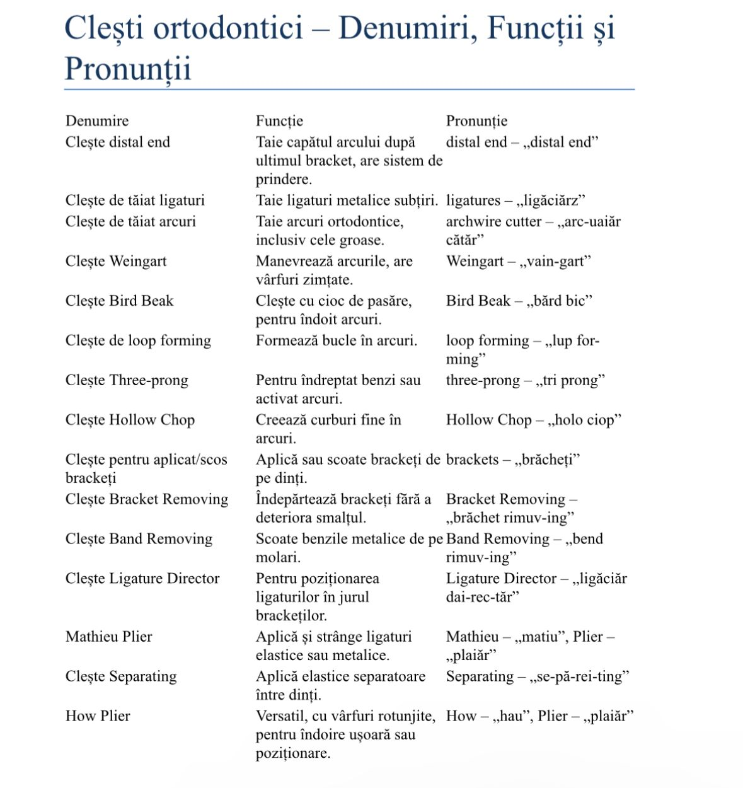
Demontarea (debonding-ul) reprezintă momentul de încheiere a fazei active a tratamentului ortodontic, în care brackeții și tuburile sunt îndepărtate de pe suprafața dinților, iar pacientul trece la faza de contenție — gutiera sau retainerul fix (vezi §4.6 și §4.7). Calitatea demontării influențează direct integritatea smalțului și aspectul final al zâmbetului: o curățare incompletă a adezivului lasă rugozități care favorizează acumularea plăcii și pierderea luciului natural al dintelui.
Manopera începe cu cleștele pentru scos brackeți — instrument cu vârfuri late, profilate, care prinde bracketul lateral sau pe baza acestuia. Medicul aplică o forță controlată de strângere care produce flexiunea bazei bracketului și ruperea legăturii compozit-bracket, fără a deteriora smalțul. Asistenta poziționează aspiratorul în vecinătate pentru a colecta imediat fragmentele desprinse și protejează căile aeriene cu o compresă.
După îndepărtarea tuturor brackeților, pe suprafața dinților rămâne un strat de adeziv (compozit + bonding) care trebuie eliminat în totalitate. Freza sferică de contraunghi este instrumentul principal pentru această etapă: medicul îndepărtează masa de adeziv prin mișcări fine, sub răcire cu spray apă-aer, fără a atinge smalțul subiacent. Asistenta menține câmpul uscat prin aspirație continuă și verifică vizibilitatea zonei tratate.
Pentru finisarea suprafeței, se folosesc abrazive cu granulație progresiv mai fină. Piatra Arkansas — abraziv natural alb, montat la contraunghi — netezește micile resturi de adeziv și uniformizează suprafața; este eficientă pe smalț fără a-l agresa. Guma pentru finisare (silicon abraziv) urmează ca pas final de șlefuire, eliminând micro-rugozitățile și pregătind suprafața pentru luciul final.
Manopera se încheie cu profilaxia profesională, care restabilește luciul natural al smalțului. Asistenta pregătește pasta de profilaxie, periuța rotativă de contraunghi și ansa de detartraj; medicul aplică pasta pe fiecare suprafață vestibulară și o lustruiește cu periuța, după care ansa elimină eventualele depozite supragingivale acumulate sub aparat în lunile anterioare. La final se face o clătire abundentă, iar pacientul verifică în oglindă rezultatul.
Asistenta are un rol activ pe tot parcursul ședinței: pregătește instrumentarul în ordinea utilizării (vezi FIG. V·1), gestionează aspirația continuu pentru a preveni înghițirea fragmentelor, schimbă freza între dinți pentru a evita supraîncălzirea și colectează separat brackeții demontați (deșeu nepericulos — vezi Capitolul XII). După încheierea ședinței, este momentul în care se realizează amprenta sau scanarea pentru gutiera de contenție (§4.6) și se aplică retainerul (§4.7).
Clește pentru scos brackeți · freză sferică de contraunghi · piatră Arkansas · gumă de finisare · pastă + periuță + ansă pentru profilaxie · aspirator + compresă pentru protecția căilor aeriene · recipient pentru colectarea brackeților demontați.
4.9Controlul periodic al aparatului ortodontic metalic
Ședințele de control periodic se desfășoară, de regulă, la 4 – 6 săptămâni de la fixarea aparatului. La fiecare ședință, medicul ortodont evaluează progresul mișcărilor dentare, înlocuiește arcurile cu unele de calibru superior, schimbă ligaturile uzate și — atunci când este necesar — efectuează stripping interproximal pentru a câștiga spațiu. Asistenta pregătește pe măsuța unit-ului întreg setul de cleșți și consumabile necesare, organizate în ordinea logică a manoperei.
Pentru manipularea brackeților și a ligaturilor, asistenta pregătește pensa ortodontică — instrumentul de bază cu vârf fin, folosit la prinderea modulelor elastice, a catenelor și a firelor de ligatură. Cleștele Weingart, cu vârfuri scurte și serate, este utilizat de medic pentru poziționarea arcului în slotul brackeților și pentru introducerea capătului distal în tubul molar — fără să sară din câmpul de lucru.
Schimbarea arcului implică două tipuri de cleștii de tăiere, care nu sunt interschimbabili. Cutterul drept secționează arcul la lungimea dorită — folosit, de regulă, în zona frontală. Cutterul distal are un mecanism de retenție care reține fragmentul tăiat după secționare, prevenind căderea acestuia în cavitatea bucală — esențial atunci când se taie capătul distal al arcului în spatele ultimului molar, unde accesul vizual este limitat.
Pe parcursul tratamentului se utilizează o succesiune de arcuri ortodontice de calibre și materiale diferite: arcurile inițiale, din nitinol (NiTi) cu diametru mic, produc forțe ușoare și continue pentru alinierea preliminară; ulterior se trece la arcuri din oțel inoxidabil (SS) cu diametre crescătoare, pentru controlul torque-ului, închiderea spațiilor și finisare. Asistenta verifică din timp stocul de arcuri și prezența calibrului indicat de medic pentru ședința respectivă.
Sistemul de ligaturare este completat de module elastice individuale (o-rings colorate pentru fiecare bracket) și de catene elastice (lanțuri continue cu mai multe verigi) — utilizate pentru închiderea spațiilor și menținerea poziției arcului în slot. La fiecare ședință acestea se înlocuiesc integral, deoarece își pierd forța elastică în 4 – 6 săptămâni.
În cazurile în care medicul indică stripping interproximal (IPR — Interproximal Reduction), asistenta pregătește banda de stripping — o bandă diamantată subțire, manuală, care reduce controlat smalțul dintre dinți pentru a câștiga spațiul necesar alinierii. Manopera se efectuează cu precauție, sub control vizual și cu verificarea spațiului obținut cu o folie calibrată.
Pensă ortodontică · clește Weingart · cutter drept · cutter distal · arcurile indicate de medic (NiTi sau SS) · module / catene elastice noi · bandă de stripping (la cerere). Toate dispuse pe măsuța unit-ului în ordinea folosirii.
5.Rolul asistentei medicale în ortodonție nou V3
Pe lângă pregătirea materialelor descrisă la §4, asistenta medicală îndeplinește, pentru fiecare ședință ortodontică, un set de responsabilități transversale — sintetizate mai jos:
- Verificarea dosarului ortodontic înainte de ședință. Confirmă prezența radiografiei panoramice, teleradiografiei și a pozelor intra/extra-orale. Pentru ședințele cu gutiere, verifică suplimentar scanările intraorale și imagistica CBCT.
- Pregătirea anticipată a unit-ului. Aplică regulile generale de la Capitolul I și pregătește materialele specifice manoperei din ziua respectivă (vezi §4.1 – §4.9).
- Asistarea activă a medicului ortodont. Manipulează aplicatoarele, lampă foto, depărtătorul, jojele și pensa pentru bracket — la cererea medicului — într-un ritm care nu întrerupe fluxul clinic.
- Comunicarea cu laboratorul de tehnică dentară. Pentru gutierele de contenție (§ 4.6) și aparatele tip aliniator: trimite fișierele de scanare prin e-mail, însoțește amprentele cu alginat de fișa de laborator și urmărește termenul de livrare.
- Educarea pacientului post-fixare / demontare. Comunică instrucțiunile medicului privind igiena orală cu aparat fix, ritmul de schimbare al gutierelor sau purtarea retainerului. Programează controlul periodic.
- Igienizarea cabinetului între pacienți. Aplică protocolul de dezinfecție, predă instrumentarul uzat circuitului de sterilizare (Capitolul XI) și gestionează deșeurile rezultate — în special brackeții demontați (Capitolul XII).
6.Concluzii
Respectarea riguroasă a acestui protocol medical asigură desfășurarea eficientă și sigură a tratamentelor ortodontice în cadrul clinicilor Dr. Ardeleanu. Asistenta medicală joacă un rol fundamental în pregătirea și menținerea unui mediu steril și organizat, asistarea activă a medicului ortodont în timpul procedurilor și asigurarea confortului și siguranței pacienților.
Datorită implicării atente și respectării stricte a regulilor de igienă și comportament profesional, tratamentele ortodontice se desfășoară optim, contribuind la obținerea unor rezultate terapeutice excelente și satisfacție maximă pentru pacienți. Astfel, prin colaborarea eficientă dintre medicul ortodont și asistenta medicală, clinicile Dr. Ardeleanu garantează calitatea și succesul tratamentelor ortodontice, oferind pacienților o experiență confortabilă și rezultate estetice și funcționale de durată.
Capitolul VIProtocol medical de asistență în pedodonție ADC-PED-01
Pedodonția — stomatologia pediatrică — reprezintă ramura medicinei dentare specializată în prevenirea, diagnosticarea și tratamentul afecțiunilor dentare ale copiilor și adolescenților, din perioada erupției primilor dinți temporari („dinți de lapte") până la definitivarea dentiției permanente.
1.Denumiri prietenoase & instrumente
Tratamentul pedodontic implică o abordare adaptată vârstei pacientului și particularităților psihologice ale copilului, având ca scop menținerea sănătății orale, prevenirea apariției cariilor și a altor patologii dentare, precum și intervenția timpurie asupra problemelor deja instalate. Printre cele mai frecvente proceduri din pedodonție se numără profilaxia și fluorizarea dentară, obturațiile pentru cariile dentare, sigilările șanțurilor și fosetelor, extracțiile dentare și tratamentele pulpare specifice vârstei pediatrice.
Retratamentul în pedodonție constă în intervențiile stomatologice realizate pentru corectarea sau repetarea unor proceduri efectuate anterior și care fie nu au avut rezultatul dorit, fie au evoluat nefavorabil în timp. Retratamentul este necesar atunci când apar complicații, când obturațiile sau tratamentele anterioare au eșuat sau când apar noi leziuni carioase pe dinții deja tratați. Scopul retratamentului pedodontic este restabilirea funcției și sănătății orale a copilului, asigurând astfel dezvoltarea corectă și armonioasă a dentiției.
În cabinetul destinat copiilor, unele instrumente și materiale sunt denumite într-un mod prietenos pentru a crea un mediu confortabil.
1.1 Denumiri pentru materiale și instrumente
- Rulouri — pentru izolarea zonei de lucru și absorbția salivei.
- Aplicatoare — folosite pentru aplicarea diverselor substanțe (anestezic, demineralizant, ICON).
- Excavator — utilizat pentru îndepărtarea țesuturilor afectate.
- Freze — în funcție de tipul utilizat (turbină, contraunghi, de finisat).
1.2 Dispozitive și echipamente
Pentru a face experiența copilului mai plăcută, anumite aparate sunt descrise într-un mod mai accesibil:
- Hipoclorit — folosit pentru „curățare".
- Lampa foto — utilizată pentru polimerizarea materialelor.
- Baveta — protejează hainele copilului în timpul tratamentului.
- Amalgamatorul — folosit pentru prepararea materialelor dentare.
1.3 Instrumente auxiliare și accesorii
Pentru a reduce anxietatea copiilor, și alte instrumente au denumiri adaptate:
- Matrice — ajută la modelarea plombei (esențială în obturațiile de clasa a II-a).
- Depărtător interarcadic — menține gura deschisă în mod confortabil.
- Hârtie de articulație — ajută la verificarea mușcăturii după finalizare.
- Ace endodontice — utilizate în tratamentele de canal.
Asistenta medicală are un rol-cheie în asigurarea unui mediu confortabil și sigur pentru pacientul pediatric, folosind denumiri adaptate ale materialelor și instrumentelor (ex.: rulouri, excavator, matrice) și echipamente ușor de explicat copiilor (lampa foto, baveta).
2.Rolul asistentei în consultația pediatrică
Asistenta întâmpină pacientul și părintele, creează o atmosferă prietenoasă și îl însoțește pe copil în cabinet. Pregătește instrumentarul (trusa consultație, periuța și pasta de dinți). Pe parcursul consultației, monitorizează reacțiile copilului și intervine pentru a asigura confortul acestuia. Consultația are rolul de a stabili o relație de încredere între medic și pacient.
- Se încurajează împrietenirea cu pacientul înainte de a intra în cabinet și de a se așeza pe scaun. O primire caldă și atentă influențează pozitiv cooperarea.
- Se caută desenele animate preferate ale copilului pentru a-l relaxa și a crește gradul de colaborare.
- Expresiile faciale și tonul vocii sunt esențiale, deoarece copiii sunt foarte receptivi la limbajul non-verbal.
- Medicul pedodont efectuează consultația și notează informațiile în fișa digitală a pacientului (Notițe SPSS).
- Pentru a obișnui copilul cu aparatura dentară și pentru a-i observa reacțiile, consultația include și un periaj dentar.
Materiale necesare: trusa de consultație, periuța și pasta de dinți.
3.Radiografia dentară pediatrică
Radiografia este realizată doar la indicația medicului pedodont și cu semnarea consimțământului de radiologie din partea tutorelui. În mod special, recomandarea medicului este STRICT necesară pentru efectuarea oricărei expuneri radiologice în cazul copiilor cu vârsta de până la 5 ani. De asemenea, copiii peste 6 ani fac radiografii, deoarece în această etapă apare dentiția mixtă.
Pregătirea pacientului
- Asistenta medicală pregătește echipamentul radiologic conform indicațiilor medicului.
- Ajustează nivelul de radiații în funcție de vârsta și greutatea copilului.
- Explică procedura folosind termeni adaptați vârstei, pentru a asigura cooperarea copilului.
- Asigură echipamentul de protecție pentru pacient (șorț protector) și realizează radiografia.
4.Igienizare profesională și obturația dentară la copii
Asistenta medicală pregătește pacientul cu bavetă și ochelari de protecție, organizează instrumentarul (ansă detartraj, cheiță, Air-flow, rulouri), asistă medicul în timpul detartrajului și obturației, asigură aspirația și izolarea câmpului operator. Pregătește materialul obturativ, menține lampa foto perpendicular pe suprafața tratată și contribuie la ajustarea și finisarea obturației.
4.1 Etapele pregătirii pentru tratament
- Pregătirea pacientului. Pacientul este așezat pe scaun de către asistentul medical. Se aplică baveta și ochelarii de protecție.
- Pregătirea instrumentelor. Asistenta medicală pregătește și organizează instrumentele pe tăvița unitului stomatologic: trusa și oglinda de consultație, periuța și pasta de dinți, ansa de detartraj, cheița, air-flow și pudra pentru air-flow. Pe durata procedurii, asistentul medical aspiră la nevoie pentru a menține un mediu curat.
- Igienizarea profesională. Detartrajul se realizează doar atunci când este necesar. Air-flow-ul este utilizat în prezența bacteriilor cromogene. Aceste proceduri contribuie la menținerea sănătății dentare.
4.2 Materiale necesare pentru obturație (plombare)
Asistenta medicală se ocupă de pregătirea materialelor și a instrumentarului necesar:
- Trusa de consultație, oglindă
- Rulouri, depărtător interarcadic, aplicatoare de diverse mărimi
- Hipoclorit 1,5%
- Excavator, freze de diferite tipuri
- Capsule Equia, pistol, amalgamator
- Fuloar, lampa foto (90 secunde)
- Hârtie de articulație
- Pene și matrice (pentru obturațiile de clasa a II-a)
4.3 Etapele tratamentului de obturație
- Dezinfectarea și pregătirea zonei de lucru. După îndepărtarea dentinei afectate, medicul dezinfectează dintele cu hipoclorit 1,5%, iar asistenta medicală aspiră cu grijă pentru a preveni disconfortul pacientului. Se plasează rulourile pentru a menține un câmp uscat, iar materialul de obturație este pregătit corespunzător.
- Aplicarea și fotopolimerizarea materialului. Capsula de obturație este introdusă de către asistentul medical în pistol și poziționată corect în funcție de zona tratată (mandibulă sau maxilar). Medicul pedodont efectuează obturația, iar asistenta se ocupă de fotopolimerizare, având grijă să mențină lampa perpendicular pe suprafața tratată pentru a evita senzația de arsură.
- Finisarea și ajustarea ocluziei. Se realizează finisarea obturației cu piatra Arkansas și guma de șlefuit. Pentru obturațiile de clasa a II-a, se utilizează matrice și pene. În cazul utilizării materialelor compozite, se pregătesc materialele specifice obturației. La pacienții mai mari și cooperanți, se poate folosi diga pentru izolarea câmpului operator.
5.Tratamentul endodontic pediatric
Există două situații când se face tratamentul de canal la pacientul pediatric:
- Carie profundă până la nerv;
- Necroză dentară și abces apărute din cauza unei carii secundare.
Dacă medicul pedodont decide, face radiografie retro-alveolară înainte de începerea tratamentului pentru a vedea în detaliu dintele afectat — cât de mare este caria, dacă sunt resorbite rădăcinile, dacă există infecție la rădăcina dintelui și cât este de aproape de dintele definitiv.
Asistenta medicală pregătește instrumentarul și materialele (Pulp-x, freze, seringi, ace endodontice, coltosol, bulete de vată), asistă activ medicul pedodont la deschiderea camerei pulpare și curățarea canalelor radiculare, asigură aspirația continuă pentru confortul copilului și aplicarea precisă a materialelor de tratament.
5.1 Materiale pentru curățarea canalelor
- Trusa de consultație și oglinda
- Endomotorul; frezele de turbină și contraunghi
- Godeul și buretele endodontic
- Ace endodontice Kerr și rotative de 21 mm; ace Tire-Nerf
- Rulouri, aplicatoare
- Seringi de 10 ml cu ser fiziologic, apă oxigenată și hipoclorit 1,5%
- Depărtător interarcadic, bulete de vată, Coltosol
5.2 Materiale pentru tratamentul definitiv cu Calcipast și Iodoform
- Trusa de consultație și oglinda; endomotorul; freze de turbină și contraunghi
- Piatra Arkansas, gume de șlefuit, excavator
- Godeul și buretele endodontic; ace endodontice și rotative de 21 mm
- Rulouri, aplicatoare, bulete de vată
- Seringi de 5 ml cu ser fiziologic, apă oxigenată și hipoclorit 1,5%
- Depărtător interarcadic, gel anestezic, buletă de teflon
- Pistolul și amalgamatorul, lampa de fotopolimerizare
- Coltosol și conuri de hârtie
5.3 Etapele realizării tratamentului
- Etapa I — Aplicarea Deveitalizantului. Medicul pedodont utilizează frezele de turbină și contraunghi pentru a curăța caria și a deschide camera pulpară. Asistentul medical pune Pulp-x pe un aplicator mic și îl înmânează medicului pedodont, care îl aplică la intrarea în camera pulpară (acest tratament se face în cazul când nu există nervi vitali — sângerarea din camera pulpară este semn de vitalitate). Peste Pulp-x se pune o buletă de vată și Coltosol. Pacientul va sta 7–14 zile cu acest tratament.
- Etapa II — Curățarea canalelor și aplicarea antibioticului local. (nou în V3.0) Medicul pedodont îndepărtează coltosolul cu o ansă de detartraj, cu freza de turbină sau de contraunghi (modul de lucru este ales în funcție de cooperarea pacientului). Se înlătură buleta de vată, iar medicul face curățarea manuală a canalelor radiculare cu ajutorul acelor endo. În timpul utilizării seringilor, asistentul medical aspiră direct pe dinte, evitând scurgerea soluției în cavitatea bucală. După curățare, canalele sunt uscate bine și se aplică pasta, urmată de o buletă de vată și Coltosol. Pacientul va rămâne cu tratamentul timp de 7–10 zile.
Notă: La pacienții pediatrici cu dinți permanenți, tratamentul endodontic de canal este realizat de către medicul endodont. - Etapa III — Tratamentul definitiv cu Calcipast și Iodoform. Se îndepărtează Coltosolul și buleta de vată, iar canalele radiculare sunt curățate și uscate folosind aspiratorul și buletă de vată. Obturația de canal se face cu calciplast și iodoform. Surplusul de material este îndepărtat cu bulete de vată și aplicatoare mari, după care se adaugă buleta de teflon. La final, se realizează obturația de suprafață și adaptarea acesteia.
6.Procedurile de sigilare dentară
Sigilarea este o metodă de prevenție, total neinvazivă, utilă pentru prevenirea cariilor care se pot forma prin stagnarea plăcii bacteriene în șanțurile și fosetele molarilor.
Asistenta medicală organizează și pregătește materialele (Fissurit, CIS, gel demineralizant, lampă foto), asistă direct medicul pedodont în aplicarea sigilantului, asigură aspirația gelului demineralizant și monitorizează respectarea corectă a timpilor de fotopolimerizare.
6.1 Sigilarea cu Fissurit — materiale
- Trusa de consultație, oglinda
- Rulouri și aplicatoare de diverse dimensiuni
- Periuță de periaj, pastă de dinți, clorhexidină
- Fissurit, lampă de fotopolimerizare (20 secunde)
- Gel demineralizant, depărtător interarcadic
- Freze de finisat (ocluzale, piatră Arkansas, gume)
- Hârtie de articulație
6.2 Sigilarea cu CIS (Equia Forte) — materiale
- Trusa de consultație, oglinda
- Rulouri și aplicatoare de diverse dimensiuni
- Periuță de periaj, pastă de dinți
- Hipoclorit 1,5%
- Lampă de fotopolimerizare (60 secunde)
- Depărtător interarcadic, freze de finisat (piatră Arkansas și gumă)
- Hârtie de articulație, capsula Equia Forte
Pacientul este pregătit prin aplicarea unei bavete și a ochelarilor de protecție, iar instrumentarul necesar este organizat pe măsuța medicului. Materialul este ales de medic în funcție de morfologia dintelui.
6.3 Etapele realizării tratamentului
- Sigilarea cu Fissurit. Medicul pedodont efectuează periajul dentar, aplică gelul demineralizant timp de 30 de secunde, iar asistenta medicală aspiră direct gelul cu ajutorul aspiratorului, având grijă să nu permită dispersia acestuia în cavitatea orală. Dintele este clătit și uscat cu atenție, urmat de aplicarea materialului Fissurit și fotopolimerizarea timp de 20 de secunde. La final, sigilarea este verificată cu hârtia de articulație, iar eventualul exces de material este îndepărtat cu o freză ocluzală sau piatră Arkansas, finisându-se cu o gumă de șlefuit.
- Sigilarea cu CIS. Procedura începe cu periajul dintelui folosind periuța și pasta de dinți, urmat de clătirea cu jet de apă și uscarea suprafeței dentare. Se aplică hipoclorit 1,5% timp de 5 secunde pentru dezinfectarea șanțurilor, urmat de o nouă clătire de 5 secunde și uscarea scurtă a dintelui. Asistenta medicală pregătește capsula cu materialul de sigilare, iar medicul aplică materialul și fotopolimerizează 60 de secunde. Verificarea ocluziei și finisarea încheie procedura.
7.Extracția dentară la copii
Asistenta medicală pregătește și echipează pacientul (bavetă, ochelari, capelină), organizează instrumentarul steril (clești, luxator, comprese sterile, seringă cu anestezie), pregătește discret anestezia, asigură aspirația în timpul procedurii și pregătește dintele extras pentru păstrarea acestuia dacă părintele dorește.
Pe masa unitului se așază un câmp steril, iar instrumentarul necesar — format din trusa de consultație cu oglindă, clești de extracție, luxator, comprese sterile, seringă cu anestezie și ac scurt — este pregătit fără a fi atins direct, menținându-se astfel un mediu aseptic.
Etapele realizării tratamentului
- Administrarea anesteziei. Medicul pedodont aplică gel anestezic și spray anestezic pe gingie, în timp ce asistentul medical aspiră pentru a evita acumularea lichidelor. Seringa de anestezie este pregătită discret și înmânată medicului împachetată într-un șervețel, pe la spatele scaunului pacientului. Pe durata administrării anesteziei, asistentul medical continuă să aspire pentru a asigura confortul pacientului. Seringa nu trebuie niciodată așezată pe masa unitului, ci pe blat, învelită într-un șervețel, departe de câmpul vizual al copilului.
- Realizarea extracției. După ce anestezia își face efectul, medicul începe dezlipirea ligamentelor dintelui cu ajutorul spatulei, prin mișcări blânde și controlate. Ulterior, se utilizează cleștele de extracție pentru îndepărtarea dintelui. La final, se aplică o compresă sterilă pe locul extracției, pe care pacientul trebuie să o țină strâns pentru a facilita hemostaza.
- Păstrarea dintelui extras. Dintele nu se aruncă! Părintele este întrebat dacă dorește să îl păstreze, iar dacă răspunsul este afirmativ, acesta este curățat cu apă oxigenată și oferit pacientului într-o cutiuță specială.
8.Aplicarea menținătorului de spațiu
Menținătorul de spațiu este utilizat atunci când un molar sau premolar temporar este extras, pentru a preveni migrarea dinților vecini și a permite erupția corectă a dintelui definitiv. Acesta rămâne pe arcadă până la apariția dintelui permanent, asigurând spațiul necesar pentru o aliniere corectă.
Asistenta medicală pregătește materialele necesare (menținător, capsula Equia Forte, Chloraxid 5,25%), asistă medicul în adaptarea și fixarea dispozitivului, asigură pregătirea corespunzătoare a dintelui și materialului folosit pentru fixarea menținătorului.
Pașii procedurii
- Măsurarea și alegerea menținătorului. Medicul pedodont utilizează sonda parodontală pentru a măsura diametrul dintelui pe care va fi aplicat menținătorul, alegând varianta potrivită ca dimensiune.
- Probarea și adaptarea. După ce este probat pe dinte și se verifică spațiul dintre dinți, acesta este adaptat cu ajutorul frezei de ablație. Capetele menținătorului sunt strânse și ajustate cu cleștele special pentru menținătoare sau cu cleștele crampon, asigurând o fixare optimă.
- Pregătirea dintelui. Dintele este spălat cu Chloraxid 5,25% timp de 5 secunde, apoi curățat cu jet de apă timp de 5 secunde și uscat complet.
- Pregătirea materialului. Asistenta medicală pregătește capsula de Equia Forte la amalgamator, setat pentru 7 secunde, și o introduce în pistolul de aplicare, cu vârful orientat în jos.
- Fixarea finală. Materialul de sigilare este aplicat pe pereții interiori ai menținătorului, iar medicul fixează dispozitivul pe dinte, îndepărtând excesul de material.
9.Tratamentul ICON
Tratament inovator pentru leziunile incipiente de demineralizare. Asistenta medicală pregătește și organizează materialele necesare, asistă medicul în aplicarea materialelor conform protocolului, asigură aspirația și izolarea eficientă, monitorizează timpii de aplicare și fotopolimerizare și realizează fotografii înainte și după procedură.
Materiale necesare
- Trusă și oglindă de consultație; trusa Leon
- Rulouri și aplicatoare
- Folie de digă și digă lichidă; ață dentară
- Lampă de fotopolimerizare
- Periuță și pastă de periaj; depărtător interarcadic
- Oglindă și contrastor pentru fotografii
Etapele tratamentului ICON
- Pregătirea suprafeței. Medicul începe prin curățarea dinților afectați de demineralizare cu pastă de dinți și periuță.
- Izolarea gingiei. Gingia este izolată cu diga lichidă, care se fotopolimerizează timp de 20 de secunde.
- Demineralizarea inițială. Se aplică demineralizantul special timp de 2 minute, urmat de clătire cu jet continuu timp de 30 de secunde și uscare atentă.
- Aplicarea ICON Dry. ICON Dry este aplicat timp de 30 de secunde.
- A doua aplicare a acidului. Acidul este reaplicat timp de 3 minute, urmat de o clătire prelungită de 40 de secunde.
- Reaplicarea ICON Dry. ICON Dry se reaplică timp de 30 de secunde. Acești pași pot fi repetați dacă tratamentul nu a avut succes.
- Aplicarea ICON infiltrant. ICON infiltrant este aplicat continuu timp de 40 de secunde.
- Finalizarea. Surplusul este îndepărtat cu ață dentară, dintele este uscat și tratamentul se finalizează prin fotopolimerizare timp de 20 de secunde.
- Documentarea. Se vor realiza fotografii înainte și după tratament.
10.Concluzii
Protocolul medical de pedodonție detaliază procedurile și responsabilitățile asistentei medicale în tratamentele stomatologice adresate copiilor: consultația inițială pentru stabilirea încrederii și confortului psihologic, radiografia dentară adaptată vârstei, igienizarea profesională și obturațiile dentare, tratamentul endodontic specific copiilor, sigilările preventive ale molarilor, extracțiile dentare pediatrice, aplicarea menținătoarelor de spațiu și tehnologia inovatoare ICON pentru tratamentul leziunilor incipiente.
În toate aceste etape, asistenta medicală joacă un rol esențial în pregătirea instrumentarului, menținerea unui mediu steril, asistența activă acordată medicului pedodont și crearea unei experiențe pozitive pentru copil. Aplicarea riguroasă a acestui protocol în pedodonție asigură standarde înalte de siguranță și calitate pentru pacienții pediatrici din Clinicile Dr. Ardeleanu. Colaborarea eficientă dintre medicul pedodont și asistenta medicală este esențială pentru succesul tratamentelor, având impact direct asupra sănătății orale și dezvoltării armonioase a copiilor. Responsabilitatea, empatia și atenția asistentei medicale contribuie decisiv la construirea unei relații pozitive cu micii pacienți, asigurând astfel o experiență confortabilă, fără anxietate și rezultate terapeutice excelente.
Capitolul VIIProtocol medical de asistență în chirurgie ADC-CHR-01
1.Definiții și introducere
Chirurgia dentară este ramura medicinei stomatologice care se ocupă cu diagnosticarea și tratamentul chirurgical al afecțiunilor cavității bucale — extracția dentară simplă sau a dinților incluși, inserarea implanturilor, operații de sinus lift și alte proceduri complexe. Obiectivul: restabilirea funcționalității și sănătății cavității orale, îmbunătățind și estetica facială.
Actul medical chirurgical implică o abordare multidisciplinară, care necesită o pregătire riguroasă a personalului medical și o organizare precisă a instrumentarului și echipamentului utilizat. În acest context, rolul asistentei medicale este esențial în susținerea medicului chirurg și asigurarea confortului și siguranței pacientului pe tot parcursul intervenției. Respectarea strictă a etapelor preoperatorii și operatorii descrise în acest protocol garantează calitatea actului medical și minimalizarea riscurilor asociate intervențiilor chirurgicale stomatologice.
Chirurgia dentară se împarte în două categorii principale, în funcție de complexitatea intervenției:
Chirurgia mică
- Extracții dentare simple
- Extracții ale dinților incluși sau semiincluși
- Descoperiri de implanturi dentare
- Grefe gingivale
- Regularizarea crestei osoase
- Elongare coronară
- Chistectomii
- Îndepărtarea mucocelului din sinus
- Frenectomii
- Excizie formațiune labială
Chirurgia mare
- Inserarea implanturilor dentare și procedurile All-on
- Operații de sinus lift
- Regularizarea crestei osoase în timpul intervenției de All-On
- Proceduri avansate care necesită utilizarea fiziodispenserului și pregătire suplimentară a instrumentarului specific
- Adiție Sticky Bone
- Bloc osos
Actul medical chirurgical se desfășoară întotdeauna cu maximă diligență și profesionalism, având ca prioritate siguranța și confortul pacientului. Este esențial ca fiecare etapă preoperatorie să fie respectată cu strictețe, pentru a asigura un proces optim și fără riscuri. De aceea, fiecare etapă a protocolului trebuie respectată cu rigurozitate — de la verificarea documentelor și evaluarea stării generale a pacientului, până la pregătirea acestuia pentru intervenție.
2.Reguli generale pentru buna desfășurare
2.1 Verificarea documentelor medicale
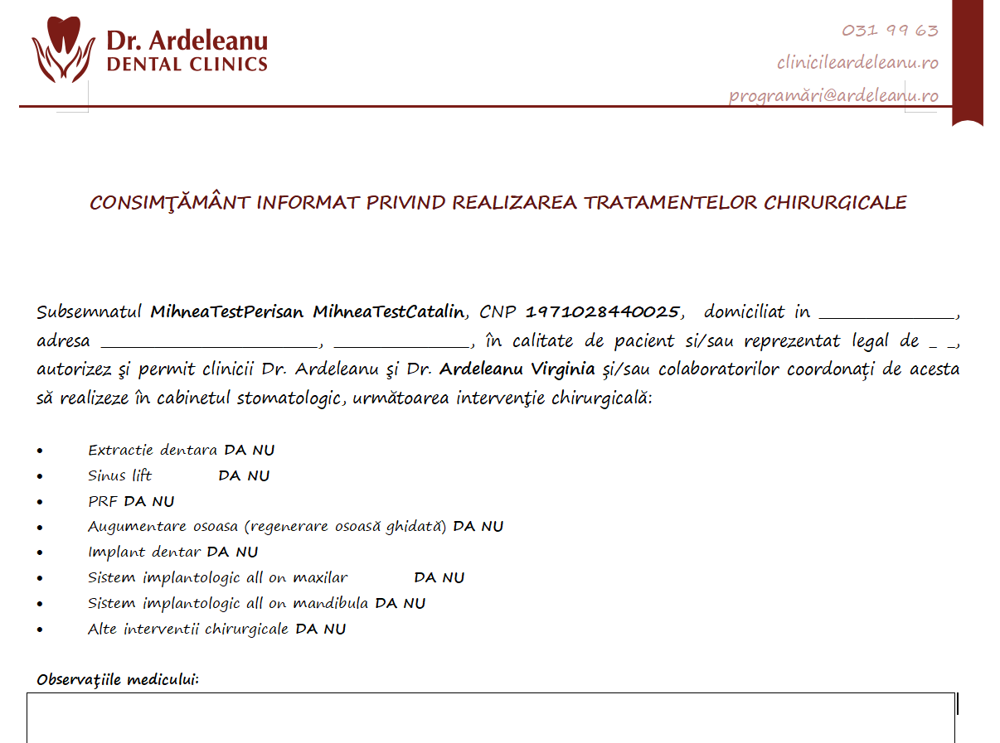
- Existența și completarea consimțământului pacientului — semnat electronic (onboarding digital) și fizic (olograf pe formatul clinicii). Consimțământul olograf se îndosariază în Biblioraftul de Chirurgie al Clinicii.
- Planul de tratament din SPSS — printat și semnat de pacient, după ce i-a fost bine explicat, indicând că este informat și de acord cu procedura propusă. Dacă există întrebări suplimentare legate de planul de tratament sau de termenii și condițiile aferente acestuia, asistenta medicală le redirecționează medicului chirurg.
- Verificarea radiografiilor și CT-ului pentru claritate și detalii.
2.2 Accesul pacientului în cabinet
Pacientul este invitat și ajutat să se așeze confortabil. Zona de intervenție — bine iluminată. Pacientul — pregătit mental și fizic. Ultima verificare a echipamentului, materialelor și documentelor. Anterior începerii procedurii, se verifică semnarea consimțământului informat.
2.3 Pregătirea pacientului
Pacientului i se oferă echipamentul de protecție: botoșei de unică folosință pentru protecția încălțămintei și bonetă pentru protecția părului. Se oferă instrucțiuni suplimentare, în funcție de tipul intervenției — de exemplu, poziționarea corectă pe scaunul stomatologic. Înainte de intervenție, pacientul trebuie să clătească cavitatea bucală timp de 30 de secunde cu apă de gură, pentru a asigura igienizarea corespunzătoare a zonei. Se discută despre evitarea mișcărilor bruște în timpul procedurii și, dacă este necesar, despre proceduri specifice de respirație sau relaxare.
2.4 Evaluarea stării pacientului nou V3
Se monitorizează următorii parametri:
- Tensiunea arterială — pentru identificarea eventualelor riscuri cardiovasculare
- Pulsul — pentru evaluarea frecvenței și ritmului cardiac
- Glicemia — la pacienții diagnosticați cu diabet sau cu suspiciune de dezechilibru metabolic
Dacă se identifică valori anormale sau orice situație atipică, medicul este informat imediat. Toate informațiile se înregistrează în fișa digitală (rubrică Notițe în SPSS).
2.5 Analize și investigații preoperatorii nou V3
Înaintea intervențiilor chirurgicale orale, medicul poate solicita o serie de analize și investigații paraclinice, în funcție de statusul general al pacientului și de complexitatea procedurii:
- Hemoleucogramă completă
- Coagulogramă
- Glicemie
- Hemoglobină glicată (HbA1c)
- TGO (AST)
- TGP (ALT)
- Uree
- Creatinină
- Markeri virali: HBsAg (VHB), anti-HCV (VHC), HIV
- Beta-CrossLaps (în cazuri selecționate, pentru evaluarea metabolismului osos)
Aceste investigații au rolul de a evalua starea generală de sănătate a pacientului, riscul hemoragic, funcția hepatică și renală, statusul metabolic și prezența eventualelor afecțiuni infecțioase sau sistemice, contribuind la siguranța actului chirurgical.
2.6 Pregătirea echipamentului de protecție
Atât medicul chirurg, cât și asistenta medicală trebuie să fie echipați conform normelor de siguranță:
Medic chirurg: mască chirurgicală, scut facial, capelină, halat chirurgical steril, mănuși sterile (mărimea 7.5 sau 8).
Asistentă medicală: capelină, scut facial, mască, halat chirurgical steril, mănuși sterile.
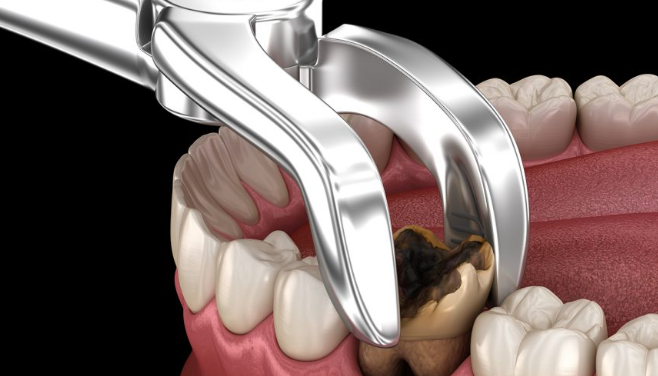
3.Instrumentar — chirurgia mică
3.1 Extracția dentară
Pentru extracția dentară, trebuie pregătite următoarele materiale: trusa de consultație, comprese sterile, seringă cu anestezic, elevator/luxator, chiuretă, seringă cu ser fiziologic sau metronidazol, clește pentru dintele extras, burete hemostatic/colla tape, port-ac, fir de sutură, foarfeca, pensă chirurgicală, aspirator, chiuretă apex.
Pentru extracția dinților incluși/semiincluși, instrumentarul este similar cu cel pentru extracția dentară de rutină, însă sunt necesare și instrumente suplimentare pentru a facilita manevrarea dinților aflați într-o poziție mai dificilă: port bisturiu, lamă de bisturiu, decolatoare, piesa dreaptă de fiziodispenser cu freze de os, turbină cu freză extradura pentru secționat dinții.
3.2 Descoperirea implanturilor
Trusa de consultație, oglinda, comprese sterile, seringă cu anestezic, port-bisturiu, lame de bisturiu, decolator, pensă chirurgicală, chiuretă, cheița de implant, bont de vindecare, aspirator chirurgical, opțional sutură, fiziodispenser cu piesă dreaptă, freză diamantată/extradură pentru os.
4.Instrumentar — chirurgia mare
4.1 Fiziodispenserul
Echipament esențial în chirurgia mare — utilizat în intervențiile All-on, inserarea implanturilor, extracția dinților incluși și sinus lift. Procedurile care nu necesită fiziodispenser: descoperirile de implanturi și extracțiile dentare (chirurgia mică).
Înainte de orice intervenție, fiziodispenserul este igienizat și așezat pe un câmp steril. Se montează piesa cot (unsă cu ulei, dezinfectată) și piesa dreaptă cu freza de os mare (extradură) pentru remodelarea osoasă. Se testează pentru funcționare optimă.
Pe măsuța unit-ului dentar se așază un câmp steril mic, destinat menținerii instrumentarului în condiții optime. Toate instrumentele sunt organizate fără a fi atinse direct, pentru a evita compromiterea sterilizării.
4.2 Programe fiziodispenser
| Piesa | Setări / Utilizare |
|---|---|
| Piesa dreaptă | Setările se realizează de către medic; între 15.000 – 40.000 rotații. Folosită în All-on, sinus lift, extracție dinți incluși, bloc osos, descoperire implanturi, regularizarea crestei osoase. |
| Piesa cot | Frezarea implanturilor. Oprirea serului fiziologic se face de la butonul „coolant". |
| Inserare implanturi | Piesa cot. Torque-ul se mărește/micșorează în funcție de stabilitatea implantului. |
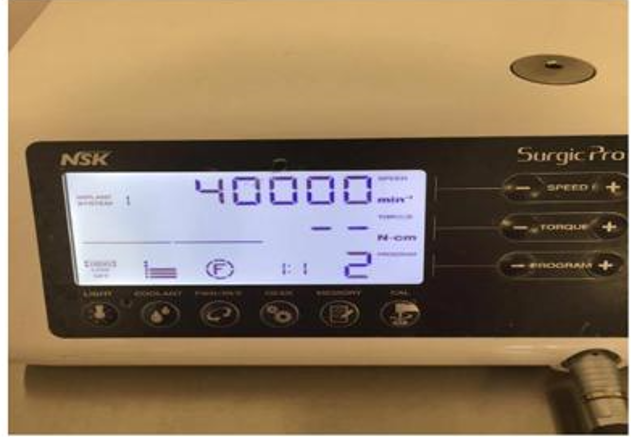
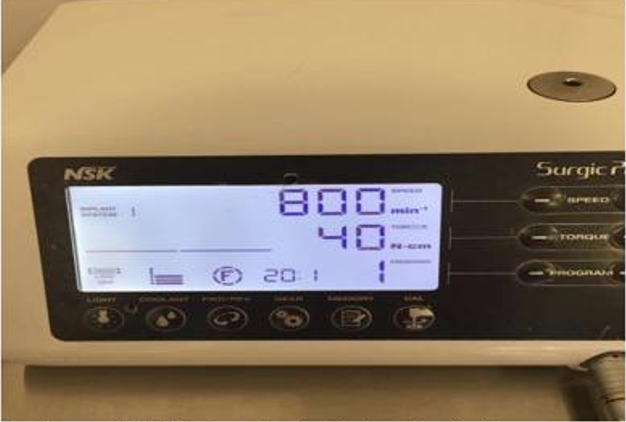
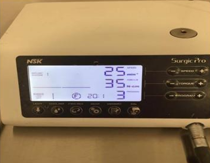
4.3 Implant / All-on
Înainte de începerea procedurii de implant sau All-on-4, este esențial ca întreaga echipare să fie complet pregătită și igienizată corespunzător. Instrumentarul necesar include:
Trusa de consultație, oglinda, două seringi cu anestezic, două port-bisturiu cu lame tip 15 și 15C, decolatoare mari și mici, pensă chirurgicală, port-ac și fir de sutură, foarfeca, comprese sterile, godeu de silicon sau metal, depărtător, clești corespunzători dinților ce trebuie extrași, luxator, câmp steril mare pentru pacient, truse pentru implanturi (Straumann, Neodent, Inno).
Pe parcursul procedurii, asistentul medical dentar joacă un rol esențial, menținând o vizibilitate optimă pentru medic: utilizează depărtătorul pentru a menține obrazul, buza superioară sau inferioară în poziția necesară și efectuează aspirația continuă a fluidelor, pentru a asigura un câmp operator clar și o intervenție fără întreruperi.
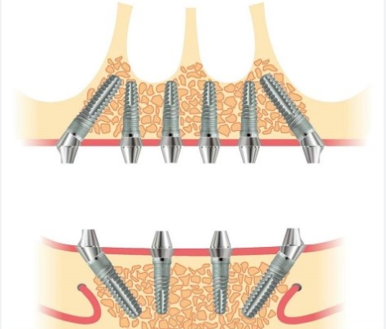
4.4 PRF — Plasma Rich in Fibrin
PRF este tehnologia care garantează o compatibilitate de 100%, fiind o plasmă bogată în factori de creștere ce se bazează pe obținerea unor preparate din proteinele recoltate din sângele pacientului.
Materialele necesare pentru recoltare: garou, compresă cu alcool, plasture, eprubete.
- Se aplică garoul.
- Se dezinfectează plica cotului.
- Se prinde linia venoasă cu fluturașul pentru recoltare.
- Se recoltează 4-6 eprubete.
- Imediat după recoltare se pun la centrifugă.
- Se îndepărtează fluturașul și se aplică un plasture.
- Lângă centrifugă — un câmp mic plus suportul pentru eprubete.
- După centrifugare, eprubetele se scot ușor, fără agitare, și se așază în suport.
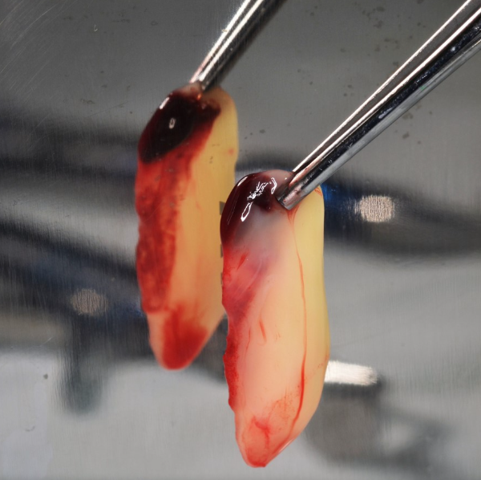
4.5 Sinus Lift
Se folosește același instrumentar ca pentru inserarea implanturilor, cu următoarele suplimentări: chiurete pentru sinus lift, os de granulație mare/mic, membrane de colagen, freză de os diamantată montată la fiziodispenser și seringă cu metronidazol.
4.6 Intervenția de Bloc Osos nou V3
Se folosește același instrumentar ca pentru inserarea implanturilor, cu următoarele suplimentări: freză de os diamantată montată la fiziodispenser și seringă cu metronidazol, lamă piezoelectrică, clește de recoltare bloc osos (osteotom), răzuitor osos (bone scraper) și trusă de inserare șuruburi.
5.Concluzii
Respectarea riguroasă a acestui protocol garantează siguranța pacientului și succesul intervențiilor chirurgicale realizate în cadrul Clinicilor Dr. Ardeleanu. Pregătirea meticuloasă a documentației medicale, evaluarea corectă și completă a stării pacientului, precum și organizarea impecabilă a instrumentarului și a zonei operatorii sunt esențiale pentru desfășurarea optimă a actului medical chirurgical.
În clinicile în care există asistentă-șefă, aceasta are rolul central de a coordona și monitoriza aplicarea strictă a procedurilor și de a susține eficient medicul chirurg. În clinicile unde nu există asistentă-șefă, activitățile specifice de asistență medicală în chirurgie sunt delegate unor asistente medicale desemnate, care preiau integral responsabilitățile aferente, asigurând aceeași calitate, profesionalism și conformitate cu standardele stabilite. Astfel, fiecare intervenție este realizată în condiții optime, reflectând angajamentul Clinicilor Dr. Ardeleanu față de confortul pacientului și excelența medicală.
Capitolul VIIIProtocol medical de asistență în protetică ADC-PRO-01
Protetica dentară reprezintă ramura medicinei dentare specializată în diagnosticarea, proiectarea și realizarea restaurărilor dentare menite să înlocuiască sau să refacă integritatea dinților deteriorați sau lipsă, restabilind funcția masticatorie, fonatorie și estetică. Tratamentul protetic implică lucrări fixe (coroane dentare, punți, fațete), lucrări protetice pe implanturi și lucrări mobilizabile (proteze parțiale sau totale).
Amprentarea dentară este un proces esențial — implică obținerea unui model precis al dinților și țesuturilor orale pentru executarea restaurărilor în laboratorul dentar. Amprentarea se poate realiza clasic (siliconi, alginați) sau digital (scanner intraoral — captură precisă și rapidă a amprentelor digitale).
1.Definiție și introducere
- Bont protetic
- Porțiunea dintelui preparată care va susține coroana sau puntea protetică.
- Solidarizarea bonturilor
- Procedura prin care două sau mai multe bonturi sunt unite pentru a forma o structură stabilă, esențială pentru lucrările protetice extinse.
- Amprentarea
- Înregistrarea negativă a câmpului protetic, utilizată pentru realizarea modelului de lucru.
- Lucrare All-on
- Lucrare protetică pe mai multe implanturi care reabilitează întreaga arcadă maxilară sau mandibulară.
2.Procedura de amprentare pe implanturi (All-on) modificat V3
Procedura pe implant
Medicul începe prin îndepărtarea formatoarelor gingivale, deșurubându-le din gura pacientului.
Solidarizarea bonturilor
- Fixarea bonturilor de transfer — bonturile sunt montate și solidarizate între ele folosind ață dentară și Brilliant Flow care se fotopolimerizează.
- Secționarea solidarizărilor — cu freza diamantată.
- Reaplicarea Brilliant Flow în spațiile rămase.
Pregătirea lingurii de amprentă
Medicul probează lingura și trasează poziția bonturilor de transfer cu un marker negru. Se perforează lingura în dreptul marcajelor folosind o piesă dreaptă și freza de acrilat.
Luarea amprentei
Lingura este umplută cu materialul de amprentă și înmânată medicului. Medicul inserează lingura pe câmpul protetic și așteaptă priza materialului. După întărire, se desfac bonturile de transfer și se îndepărtează lingura.
Finalizarea procedurii
Medicul reinstalează formatoarele gingivale, iar ocluzia este înregistrată. Amprentele sunt spălate, dezinfectate și introduse într-o pungă de transport de către asistentul medical, care le trimite tehnicianului dentar, însoțite de fișa de laborator completată de medicul stomatolog din rubrica „Lucrări de Laborator" din SPSS.
Procedura pe dinte
Medicul selectează lingura corespunzătoare maxilarului sau mandibulei pacientului și o pregătește pentru aplicare. Asistenta medicală prepară materialul de amprentă și îl plasează în lingură. Medicul aplică lingura în cavitatea bucală și așteaptă timpul de priză. După întărire, lingura este îndepărtată și predată asistentei, care:
- Dezinfectează amprenta.
- O împăturește în șervețele și o introduce într-o pungă pentru transport la laborator.
- Pacientului i se aplică o coroniță provizorie realizată cu TempSpan, cimentată cu material provizoriu.
- Amprentele sunt trimise laboratorului dentar împreună cu fișa de laborator.
3.Analiza ocluzală — importanță și tehnici de evaluare
Analiza ocluzală este un proces esențial — evaluează alinierea și contactul dintre dinții superiori și inferiori. Joacă un rol crucial în diagnosticarea și prevenirea problemelor dentare precum durerile de maxilar, uzura prematură a dinților sau disfuncțiile articulare temporomandibulare.
Instrumente și tehnici
- Ceară ocluzală — pentru înregistrarea contactelor ocluzale, în special pentru restaurări sau proteze. Se obține o amprentă temporară a ocluziei.
- Hârtie de articulare — hârtie subțire colorată care identifică zonele de contact între dinți și determină corectitudinea ocluziei.
- Scanner intraoral — dispozitiv modern care capturează imagini digitale ale ocluziei și creează un model 3D al cavității bucale pentru analiză detaliată.
Rolul asistentei: pregătește și manipulează instrumentele necesare (hârtia de articulare, ceara ocluzală, scannerul intraoral). Asistă medicul în identificarea contactelor ocluzale și în înregistrarea precisă a mușcăturii. În timpul procedurii, monitorizează confortul pacientului, oferind informații clare despre fiecare etapă, reducând astfel anxietatea și asigurând o experiență pozitivă.
4.Rolul asistentei în realizarea amprentei digitale cu scanner intraoral
Amprenta digitală cu scanner intraoral este o tehnologie modernă utilizată pentru a crea o replică digitală a cavității bucale a pacientului — folosită pentru coroane, lucrări protetice, aparate dentare, planificarea intervențiilor chirurgicale.
Utilizarea scannerului intraoral
Scannerul este un dispozitiv portabil introdus în cavitatea bucală a pacientului. Folosește un senzor optic pentru a captura imagini ale dinților și țesuturilor moi. Imaginile sunt procesate rapid de software-ul asociat și transformate într-un model 3D digital al cavității bucale.
Etape
- Revizuirea și procesarea amprentei — software-ul generează amprenta digitală 3D, care poate fi revizuită și ajustată dacă este necesar.
- Transferul datelor — modelul digital este transferat direct într-un sistem pentru a crea lucrări dentare (coroane, punți, proteze) sau pentru planificarea tratamentului ortodontic sau a ghidului chirurgical.
- Asigurarea igienei — toate instrumentele se sterilizează corect; asistenta asigură un mediu curat pentru a preveni contaminarea. Poate fi responsabilă de setarea și operarea scannerului intraoral, sub supravegherea medicului stomatolog.
- Colectarea amprentei — deși medicul poate supraveghea procesul, asistenta ajută la introducerea și ghidarea scannerului pentru a captura amprente complete și precise, fiind atentă ca amprenta digitală să fie completă și precisă.
- Supravegherea echipamentului — asistenta are un rol important în menținerea și curățarea echipamentului; scannerul intraoral trebuie întreținut corespunzător pentru a funcționa corect.
În procedura de amprentare digitală, asistenta pregătește și calibrează scannerul intraoral, asigură sterilizarea corectă și funcționalitatea optimă a echipamentului. Asistă direct medicul în realizarea scanării, asigurând poziționarea corectă pentru o amprentă completă și precisă. Este responsabilă și de revizuirea inițială a amprentei digitale, facilitând transferul rapid și eficient al datelor către laboratorul dentar sau alte aplicații.
Pentru detalii complete despre fluxul de scanare intraorală cu sistemul Medit Link și încărcarea în SmileCloud, vezi Capitolul XVI.
5.Montarea/înșurubarea lucrărilor pe implant
Asistenta medicală pregătește cu atenție toate instrumentele necesare montării lucrărilor protetice pe implant:
- Hârtia de articulare
- Frezele pentru ajustare (ocluzală și piatra Arkansas)
- Teflon pentru izolare
- Compozitul fluid
- Lampa de fotopolimerizare
- Cheia specifică implantului utilizat
Pe durata procedurii, asistenta menține câmpul operator curat și organizat, asistă medicul la ajustările necesare și urmărește confortul pacientului.
6.Cimentarea coroanelor dentare
Asistenta pregătește toate instrumentele necesare cimentării coroanelor:
- Hârtia de articulare
- Frezele pentru ajustare (ocluzală și piatra Arkansas)
- Ciment definitiv (CIS/FUJI)
- Godeu
- Bulete de vată îmbibate cu alcool
- Pad de sticlă
- Spatulă de ciment
- Ață dentară
7.Cimentarea adezivă pentru fațete dentare
Asistenta pregătește toate instrumentele necesare cimentării adezive a fațetelor:
- Hârtia de articulare
- Frezele pentru ajustare (ocluzală și piatra Arkansas)
- Kit de cimentare adezivă Variolink
- Lampă pentru fotopolimerizare
- Gume pentru finisare
- Ață dentară
8.Fluxul lucrărilor de laborator. Concluzii
Asistenta gestionează comunicarea cu laboratorul de tehnică dentară: trimiterea fișierelor STL (scanare intraorală) pe email, trimiterea amprentelor fizice împreună cu fișa de laborator, înregistrarea termenelor și informarea pacientului, verificarea conformității lucrării primite (cromatica, ocluzia, design-ul).
Respectarea riguroasă a protocolului medical în protetică asigură rezultate clinice predictibile și de înaltă calitate pentru pacienții din Clinicile Dr. Ardeleanu. În acest context, asistenta medicală are un rol fundamental, contribuind activ la pregătirea materialelor și instrumentarului necesar, realizarea și manipularea corectă a amprentelor, gestionarea echipamentelor moderne (precum scannerul intraoral) și asigurarea igienei și sterilizării impecabile a instrumentelor utilizate. Colaborarea eficientă și precisă dintre medicul protetician și asistenta medicală garantează atât succesul terapeutic, cât și confortul și satisfacția pacientului. Astfel, se îndeplinește obiectivul clinicii de a oferi restaurări dentare estetice și funcționale, conforme cu cele mai înalte standarde de calitate.
Capitolul IXProtocol medical de asistență în parodontologie ADC-PAR-01
Parodontologia este o ramură a medicinei dentare care se ocupă cu afecțiunile gingivale — gingivita și parodontita. Asistenta medicală sprijină activ medicul în toate etapele examinării (parodontometrie), instrumentării non-chirurgicale, chirurgiei parodontale și terapiei laser.
1.Definiții și termeni medicali
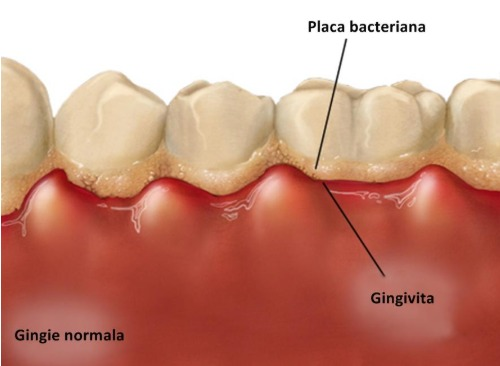
- Parodontologia
- Ramură a medicinei dentare care se ocupă cu afecțiunile gingivale.
- Gingivita
- Prima formă de afecțiune parodontală. Se manifestă prin inflamarea gingiilor, sângerări frecvente în timpul periajului și chiar sângerări spontane. În această fază nu este afectată alveola dentară sau osul, iar pierderea dinților nu este o consecință obligatorie.
- Parodontita
- Etapa următoare a gingivitei netratate. Apare atunci când placa bacteriană se îngroașă și afectează țesutul, conducând la retracție gingivală, descoperirea rădăcinii dintelui, mobilitate dentară și afectarea osului.
2.Protocol medical din perspectiva medicului
Medicul parodontolog asigură evaluarea clinică, anamneza, parodontometria și completarea fișei medicale. În cazul pacienților cu edentații, medicul poate solicita CBCT.
Evaluare inițială și diagnostic
- Anamneză completă — istoric medical și dentar, factori de risc (fumat, diabet, stres)
- Examinare clinică:
- Indice de placă (Pl.I.)
- Indice gingival (G.I.)
- Sângerare la sondare (BoP)
- Adâncimea pungilor parodontale (PPD)
- Mobilitatea dentară
- Recesii gingivale
- Radiografii — Bitewing, panoramică sau CBCT dacă este necesar
- Clasificare — conform AAP/EFP 2018, în stadii și grade (ex: parodontită stadiul III, grad B)
Faza I — Terapie parodontală inițială (non-chirurgicală)
- Educație și motivație pentru igienă orală — instrucțiuni de periaj, ață dentară, periuță interdentară
- Detartraj supragingival și subgingival (scaling & root planing) — parodontometria
- Controlul factorilor de risc — renunțarea la fumat, controlul diabetului
- Reevaluare la 4-6 săptămâni: adâncimea pungilor, BoP, mobilitate
Faza II — Terapie chirurgicală (dacă este necesară)
Indicații: pungi reziduale > 5-6 mm, acces dificil, defecte osoase.
- Chiuretaje paro cu chiuretele specifice
- Decontaminare cu substanțe precum Hybenix / Ozosan
- Chiuretaj în câmp deschis (vezi protocol chirurgie)
- Lavaj cu clorhexidină 2%
- Chiuretaj cu laser
- Reevaluare periodică (la 3-6 luni)
Proceduri posibile: chiuretaj chirurgical · lambou de acces · regenerare tisulară ghidată · grefe osoase / grefe de țesut moale.
Medicație postoperatorie: antibiotic, analgezice, apă de gură antiseptică (clorhexidină).
Faza III — Terapie de menținere (supraveghere parodontală)
- Reevaluare periodică (la 3-6 luni)
- Igienizare profesională
- Monitorizarea clinică și radiologică
- Ajustarea igienei orale, dacă este necesar
- În cazul formelor agresive sau refractare — colaborare cu medic specialist în parodontologie
- În unele cazuri — tratament sistemic adjuvant (antibioterapie)
3.Protocolul pentru asistenta medicală
Asistenta medicală are un rol esențial — asigură suport logistic și tehnic pentru medic, precum și o experiență confortabilă și sigură pentru pacient.
Sprijin în evaluarea parodontală
- Pregătește pacientul și instrumentarul necesar (sonde, oglinzi, fișă parodontală)
- Notează în fișă valorile transmise de medic (indice de placă, adâncimi ale pungilor, sângerare)
Asistare activă în timpul tratamentului
- Ajută medicul în timpul detartrajului și chiuretajului (aspirație, iluminare, livrare instrumente)
- Se ocupă de prepararea și manipularea soluțiilor antiseptice (ex. clorhexidină)
- Controlează câmpul operator (uscare, vizibilitate)
- Se asigură că laserul este în perfectă stare de funcționare; vârfurile sterilizate corespunzător
Asistenta selectează și pregătește ansa și cheița pentru detartraj, aparatul air-flow cu pulbere specifică, pasta profesională și periuța pentru periaj. Asigură anestezia topică (spray sau gel) la indicația medicului și pregătește echipamentul de protecție pentru personalul medical (mănuși, mască, scut facial sau ochelari de protecție/UV) și pentru pacient (bavetă, ochelari de protecție/UV). Un detaliu important — desfacerea instrumentarului în fața pacientului contribuie la un climat de încredere și transparență.
4.Instrumentar parodontal — detaliat
3.1 Consultația parodontală (evaluare inițială)
- Sondă parodontală (ex. Williams, UNC-15)
- Sondă parodontală Nabers (pentru furcații)
- Sondă exploratoare
- Trusă de consultație
- Pensetă anatomică
- Set de notare / fișă parodontală (sau tabletă cu soft specializat)
3.2 Detartraj supragingival (scaling)
- Aparat de detartraj ultrasonic (piezoelectric sau magnetostrictiv)
- Anse pentru detartraj (diverse tipuri)
- Scalere manuale (ex. H6/H7 pentru zonele anterioare, Jacquette)
- Set de igienizare profesională
- Pahar + apă de gură antiseptică (clorhexidină 0.12–0.2%)
3.3 Detartraj subgingival (root planing) / cu laser
- Chiurete Gracey (cel puțin 1/2, 11/12, 13/14 pentru toate suprafețele)
- Chiurete Columbia / Universal
- Sondă parodontală
- Irigator sau seringă endodontică (pentru irigarea pungilor cu clorhexidină/soluții antiseptice)
- Aspirație chirurgicală fină
- Aplicatoare pentru seringi cu soluții decontaminante (Hybenix/Ozosan)
- Depărtătoare bucale / Optra-Gate
- Comprese sterile
- Vârfuri optice sterile laser
3.4 Chirurgie parodontală
- Lame bisturiu (Nr. 15C)
- Portac bisturiu
- Elevator muco-periostal (ex. Molt, Prichard)
- Chiurete parodontale mari (Kirkland, Orban)
- Pensă chirurgicală
- Portac ac și ac atraumatic
- Fir de sutură (resorbabilă sau neresorbabilă)
- Foarfecă chirurgicală
- Câmpuri sterile
- Grefe, membrane (dacă e vorba de regenerare)
5.Tratamentul parodontal cu laser nou V3
Înainte de tratament — pregătire
- Aparatul laser (verificare funcționalitate și calibrări)
- Vârfuri optice sterile (fibra laser)
- Chiurete parodontale, ser fiziologic, irigator
- Geluri antiseptice (ex. Hybenx, Emdogain) și clorhexidină
Protocol de protecție
- Ochelari speciali de protecție pentru laser — pentru pacient, medic și asistentă
- Avertizajul „Laser în funcțiune" la ușa cabinetului (unde e cazul)
Pregătirea pacientului
- Poziționare pe scaun, echipat cu bavetă și ochelari
- Aplicare anestezie topică sau ajutor medicului pentru infiltrație
În timpul tratamentului
- Setează aparatul laser la parametrii indicați de medic (putere, frecvență, mod pulsat/continuu)
- Asigură transmiterea corectă a vârfului optic steril către medic
- Aspiră și controlează câmpul vizual în timpul aplicării
- Irigă pungile parodontale cu ser fiziologic sau clorhexidină la indicația medicului
- Activează temporar laserul la cererea medicului (în funcție de reglementările locale)
Utilizările clinice ale laserului
| Vârf laser | Specialitate | Utilizări clinice |
|---|---|---|
| Vârfurile albastre | Parodontologie (bacterii + inflamație) | Decontaminare pungă · chiuretaj laser · reducere sângerare · biostimulare |
| Vârfurile albe | Chirurgie (tăiere + hemostază) | Frenectomie · gingivectomie / gingivoplastie · excizii (epulis, fibrom) · operculectomie · hemostază |
| Vârfurile galbene | Endodonție (dezinfecție canal) | Sterilizare canal · activare NaOCl · retratament |
Sterilizarea vârfurilor laser
Fibrele laser se curăță imediat după utilizare cu tifon și alcool izopropilic 70%, apoi se introduc în casetă și se sterilizează în autoclav (121°C sau 134°C), conform protocolului standard. După sterilizare, se verifică integritatea fibrei și se reinițializează înainte de utilizare.
6.Alte materiale și consumabile
- Aspirator salivar și chirurgical
- Clorhexidină 0.12 – 0.2%
- Ser fiziologic
- Geluri antiseptice (ex. PerioChip, Elugel)
- Bavetă, ochelari protecție
- Tăviță metalică
- Comprese sterile
- Seringi de unică folosință
- Depărtător bucal / Optra-Gate
Pe parcursul consultației, Asistentul Medical sprijină activ medicul stomatolog, facilitând examinarea cavității orale. La finalul consultației, medicul înregistrează constatările în SPSS, secțiunea Notițe.
7.Recomandări post-tratament. Concluzii
Medicul oferă pacientului indicații clare privind igiena orală, utilizarea soluțiilor antiseptice și programarea unui control periodic pentru monitorizarea evoluției. Prin implicarea constantă, comunicarea empatică și menținerea unui mediu impecabil, asistenta medicală contribuie semnificativ la calitatea actului medical și la consolidarea încrederii pacienților în serviciile medicale oferite.
Pe parcursul întregului protocol, activitatea asistentei se concentrează pe pregătirea instrumentarului, gestionarea materialelor și asistarea activă a medicului în timpul intervențiilor. Astfel, ea oferă un suport eficient medicului stomatolog și garantează confortul și siguranța pacientului pe durata întregului tratament, reflectând angajamentul Clinicilor Dr. Ardeleanu față de standardele de excelență medicală.
Capitolul XProcedura de utilizare a uniformei ADC-UNF-02
1.Scop și domeniu de aplicare
Această procedură asigură utilizarea corectă a echipamentului individual de protecție („Uniforma") pentru protejarea sănătății și securității personalului și pacienților, precum și pentru o imagine unitară și de brand a organizației.
Se aplică întregului personal: medici stomatologi, asistenți medicali, asistent medical șef, registratori medicali, operatori de curățenie.
2.Tipuri de Uniformă
Uniforma se compune, în general, din halat/bluză/tricou, pantaloni și încălțăminte antiderapantă (saboți). Utilizarea componentelor diferă în funcție de categoria de personal.
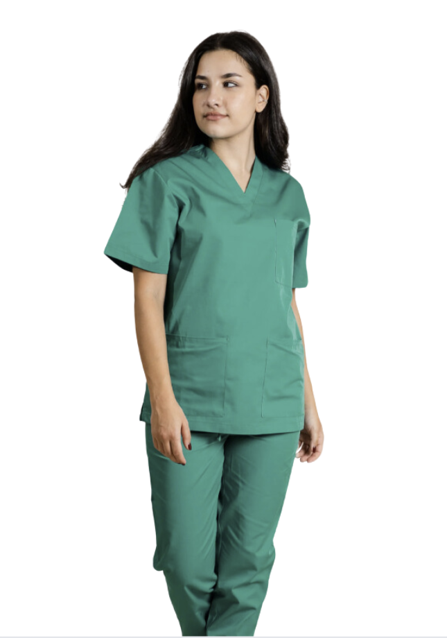
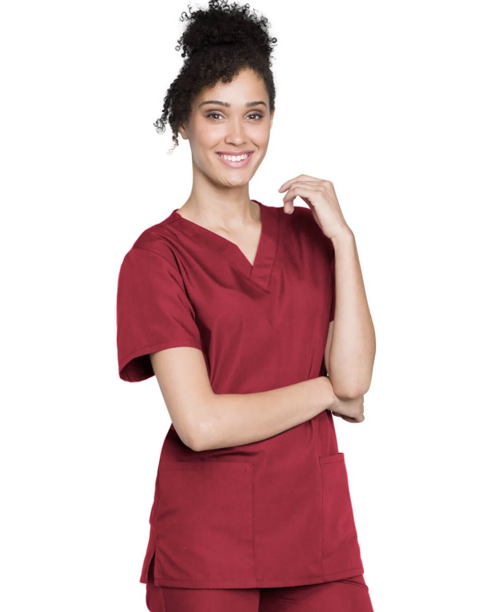
2.1 Medici stomatologi
Halat cu cordon pentru sex feminin, tricou pentru sex masculin. Uniforma se oferă de companie la semnarea contractului, iar seturile de uniformă se comandă câte unul per fiecare clinică în care doctorul activează. În cazul medicilor care asigură mai mult de 3 ture pe săptămână într-o clinică, se suplimentează uniforma cu un set. Uniforma se completează cu pantalon de culoare închisă (negru, tip uniformă, exclus bulgi) și încălțăminte comodă antiderapantă. În sezonul rece, uniforma se poate completa cu halat de iarnă polar ALB sau VIȘINIU.
2.2 Asistenți medicali
Uniforme compuse din bluză și pantalon de culoare vișinie, destinate prevenirii contaminării în zona de lucru, care se oferă de la angajare în set dublu. Uniforma se completează cu încălțăminte antiderapantă ce asigură siguranța în deplasare în spațiile clinice. În sezonul rece, uniforma se poate completa cu halat de iarnă polar ALB sau VIȘINIU.
2.3 Personalul de curățenie
Uniforme de bumbac de culoare verde, standard pentru igienă și protecție. În sezonul rece, uniforma se poate completa cu halat de iarnă polar ALB sau VIȘINIU.
2.4 Registratori medicali nou V3
Uniforme tip cămașă albă cu broderie logo, oferite de la angajare în set dublu. Cămașa albă se poartă cu ecuson. Uniforma se completează cu pantalon office (exclus colanți sau trening) sau fustă de culoare închisă și încălțăminte office. În sezonul rece, uniforma se completează cu sacou (peste cămașă) de culoare BORDO (vișiniu).
Sinteză pe categorii
| Categorie personal | Componente | Specific |
|---|---|---|
| Medici stomatologi | Halat cu cordon (F) sau tricou (M), pantalon închis la culoare, încălțăminte antiderapantă | Halat de iarnă polar ALB sau VIȘINIU în sezonul rece |
| Asistenți medicali | Bluză + pantalon vișiniu, încălțăminte antiderapantă | Set dublu la angajare; halat de iarnă opțional |
| Personal curățenie | Uniforme bumbac verde | Halat de iarnă polar ALB sau VIȘINIU |
| Registratori medicali nou V3 | Cămașă albă cu broderie logo + ecuson, pantalon office sau fustă închisă | Sacou BORDO (vișiniu) în sezonul rece |
3.Modul de purtare și aspectul profesional
Ținuta și aspectul general al personalului trebuie să fie impecabile, reflectând profesionalismul clinicii. Uniforma, părul aranjat și unghiile îngrijite sunt obligatorii conform punctului 4 din procedura de ordine, igienă și securitate la locul de muncă ADC-OIM-02, iar mediul de lucru trebuie să fie mereu curat și ordonat.
3.1 Reguli de conduită privind uniforma
- Uniforma trebuie să fie curată, bine întreținută și dezinfectată, conform normelor clinicii.
- Este interzisă purtarea de haine în culori care se abat de la modelul de uniformă.
- Este interzisă purtarea de încălțăminte deschisă în față sau sandale, care alunecă.
- Uniforma se poartă pe întreaga durată a programului.
3.2 Îngrijirea personală
- Părul — trebuie să fie strâns în coadă sau prins într-un mod sigur.
- Unghiile — tăiate scurt și păstrate curate. Se evită unghiile false sau lacul de unghii în exces în medii unde acestea pot contamina produse sau echipamente.
- Machiajul — discret și natural, fără culori stridente sau accesorii foarte vizibile.
- Bijuterii — strict limitate la cercei mici (de tip stud), fără coliere, brățări sau inele, pentru a preveni contaminarea. Se recomandă bijuteriile minimaliste; colierele și brățările mari sau zgomotoase ar trebui evitate, pentru a menține o imagine profesională și a preveni disconfortul.
- Parfumuri — discrete și neiritante, pentru a evita posibile reacții alergice sau disconfortul pacienților ori al personalului.
- Igiena corporală — angajații trebuie să facă duș zilnic.
4.Responsabilități privind disponibilitatea și purtarea Uniformei
4.1 Disponibilitatea uniformelor
Pentru personalul nou angajat: la angajare primește 2 echipamente, la începutul perioadei de angajare.
Pentru personalul cu vechime mai mare de 6 luni: în timpul unui an calendaristic personalul are dreptul la 2 seturi complete, acordate astfel:
- un echipament va fi acordat pentru primele 6 luni ale anului — comandă în Ianuarie;
- al doilea echipament se acordă pe baza unei cereri, în cea de-a doua jumătate a anului — comandă în Iulie, dacă uniforma este deteriorată și Coordonatorul de Clinică consideră necesară înlocuirea ei. Pentru setul al doilea, angajatul îl solicită în mod expres Coordonatorului de Clinică/Asistentei Șefe, iar acesta îl aprobă formal (cerere în ERP).
Pentru medicul stomatolog: la începutul colaborării, medicul are disponibil în fiecare clinică în care activează câte un echipament. În cazul medicilor care asigură mai mult de 3 ture pe săptămână într-o clinică, aceștia au la dispoziție două echipamente. Medicul care are o vechime mai mare de un an are dreptul la un nou set de echipament per fiecare clinică în care activează — comanda se realizează în luna ianuarie a fiecărui an.
4.2 Comanda uniformelor în clinică
Coordonatorul de Clinică/Asistenta Șefă răspunde pentru disponibilitatea uniformelor la nivelul personalului activ. Coordonatorul realizează comanda în ERP și o transmite spre avizare pe fluxul de aprovizionare ERP în următoarele situații:
- la angajarea unui nou coleg;
- în ianuarie, pentru toți angajații cu o vechime mai mare de 6 luni;
- în iulie, doar pentru angajații care au o nevoie reală pentru un set nou de uniforme.
- Pentru fiecare angajat nou, se plasează o comandă de Uniformă în ERP selectând mărimea corespunzătoare: S/M/L/XL, înainte de începerea activității. Fiecare angajat nou primește un set dublu de uniforme la angajare.
- Pentru angajatul cu vechime mai mare de 6 luni, coordonatorul realizează comanda pentru primul set în luna ianuarie. Pentru al doilea set, DOAR în condițiile în care este necesar, comanda se realizează în luna iulie.
- Pentru fiecare medic care activează în clinică, coordonatorul comandă un singur halat/tricou, acordat anual.
- Fiecare persoană care primește uniforma va semna un proces-verbal de predare-primire a acesteia.
- Coordonatorul Clinicii poate delega activitățile de mai sus (de exemplu către Asistentul Șef), păstrând însă responsabilitatea acestora.
4.3 Verificarea utilizării și purtării Uniformei
Coordonatorul de Clinică verifică utilizarea/purtarea Uniformei, ținuta și aspectul profesional al personalului activ în clinică, conform dispozițiilor de mai sus. Coordonatorul Clinicii poate delega activitățile de mai sus (de exemplu către Asistentul Șef), păstrând responsabilitatea acestora.
5.Nerespectarea purtării Uniformei
5.1 Consecințele nerespectării
În cazul în care un angajat nu respectă obligația de a purta uniforma, acesta va fi supus unor măsuri disciplinare, care pot include avertismente verbale, scrise sau alte măsuri specifice, conform politicii organizaționale.
5.2 Impactul asupra pacienților și echipei
Nepurtarea uniformei poate crește riscul de contaminare și infecții în cadrul clinicii, punând în pericol sănătatea angajaților și a pacienților.
5.3 Monitorizarea conformității
Coordonatorii Clinicii vor efectua controale periodice pentru a verifica conformitatea utilizării Uniformei. Nerespectarea repetată a acestei proceduri poate duce la acțiuni disciplinare conform regulamentului intern.
Capitolul XIProcedura de sterilizare ADC-STE-01
1.Scop și domeniu de aplicare
Definirea instrucțiunilor proprii de securitate și sănătate în muncă privind curățarea, dezinfectarea și sterilizarea instrumentarului stomatologic pentru a asigura calitatea și siguranța serviciilor medicale oferite. Se aplică activităților desfășurate de personalul implicat în curățarea, dezinfectarea și sterilizarea instrumentarului și echipamentelor medico-chirurgicale.
2.Documente de referință
- SR EN ISO 9000:2015 — Sisteme de Management al Calității. Principii esențiale și vocabular.
- SR EN ISO 9001:2015 — Sisteme de Management al Calității. Cerințe.
- Ordinul ministrului sănătății 1761/2021.
- Regulamentul (UE) nr. 528/2012.
- Ordinul 910/1657/99/2016.
3.Definiții
- Curățare
- Îndepărtarea murdăriei organice și anorganice de pe suprafețe sau obiecte.
- Curățare manuală
- Utilizarea periilor adecvate și a detergentului specific, urmată de clătire și inspecție.
- Curățare ultrasonică
- Utilizarea unei cuve ultrasonice cu detergent enzimatic sau dezinfectant mediu.
- Lubrifiere
- Se efectuează manual sau automat pentru turbine și piese de mână, obligatoriu înainte de sterilizare.
- Sterilizare
- Reducerea completă a microorganismelor, inclusiv a sporilor bacterieni, de pe obiectele contaminate.
- Pre Sterilizare
- Etapă preliminară de reducere a încărcăturii microbiene.
- Presiune de sterilizare
- Presiunea de vapori la care se realizează sterilizarea.
- Purjare
- Evacuarea continuă a unui fluid, dintr-un recipient presurizat, dintr-un spațiu închis ermetic.
- Autoclavare
- Metodă de sterilizare cu vapori saturați sub presiune.
- Trasabilitate digitală
- Monitorizarea electronică a procesului de sterilizare prin sistemul SPSS.
4.Procedura de curățare
4.1 Curățarea manuală
Instrumentarul uzat se curăță în chiuveta din camera de sterilizare cu ajutorul periilor adecvate și a detergentului specific (CIF). Ustensilele sunt clătite cu apă.
4.2 Uscare. Inspecție
Instrumentarul se șterge cu prosoape curate, se depozitează într-o nouă cuvă și fiecare instrument se introduce în foliile de sterilizare (individual sau în pachete). Instrumentarul cu urme de deteriorare va fi aruncat (ace de canal despiralate, freze tocite). Urme de ciment sau alți contaminanți → se reia curățarea.
4.3 Lubrifierea turbinelor și pieselor de mână
Curățarea turbinelor și a pieselor de mână se face prin procesul de Lubrifiere. Utilizarea în mod corect și mentenanța pieselor de mână și a turbinelor sunt aspecte necesare și foarte importante pentru evitarea deteriorării precoce. Utilizarea necorespunzătoare și mentenanța insuficientă pot afecta în mod drastic durata de viață a pieselor de mână și pot afecta negativ performanța acestora, generând riscuri inclusiv asupra pacienților.
Piesele de mână și turbinele funcționează la viteze extrem de mari și sunt create din numeroase piese de dimensiuni foarte mici care lucrează împreună. Performanța optimă poate fi asigurată doar atunci când aceste piese continuă să lucreze împreună în mod corespunzător grație utilizării corecte și a mentenanței adecvate. Nu doar curățarea, dar și mentenanța periodică este esențială pentru performanța optimă a pieselor de mână. De aceea, o procedură de mentenanță potrivită trebuie realizată după fiecare proces de curățare și înainte de orice proces de sterilizare.
Lubrifierea turbinelor și pieselor de mână se efectuează minim o dată pe zi sau recomandat de cel puțin 2 ori pe zi (regim de lucru de 10–12 ore) și întotdeauna înainte de sterilizare.
Procedura manuală de lubrifiere
- Îndepărtați freza din capul piesei de mână.
- Decuplați piesa de mână de la unit.
- Aplicați lubrifiantul. Lubrifierea se efectuează cu ulei pulverizat ce vine automat în canalul aerului de lucru (cel mare la turbinele cu 2 găuri Borden sau cel mediu la turbinele cu 4 și 6 găuri Midwest sau cu fibră optică). Ungerea se efectuează cu spray-ul sub presiune. La turbinele/piesele cu push-button se recomandă și lubrifierea prin orificiul frezei, pentru a asigura lucrul eficient al pensei și al mecanismului push-button.
- Adaptoare corecte. Pentru ungere se folosesc doar acele mufe/adaptoare care sunt corespunzătoare modelului turbinei. Pentru turbinele ce au cuplă rapidă se folosesc adaptoare de forma cuplei respective.
- Învelirea capului. Capul turbinei se învelește într-un șervețel curat pentru a nu se stropi cu ulei suprafețele învecinate și pentru a fi absorbit spray-ul în exces.
- Aplicare. Spray-ul se aplică pe orificiul aerului de lucru sau prin folosirea adaptoarelor respective. Sub presiune, uleiul trece prin canalele și rotorul turbinei, curățându-le și gresând rulmenții rotorului.
- Verificați uleiul ieșit. Dacă șervețelul conține pete negre sau alte particule, ungerea cu spray trebuie repetată până aceste impurități nu mai apar și uleiul va fi curat.
- Scurgerea excesului. După ce turbina/piesa de mână a fost lubrifiată, aceasta se pune cu capul în sus pentru ca excesul de ulei împreună cu impuritățile să se scurgă afară.
- Pre-sterilizare. Dacă turbina/piesa de mână urmează a fi sterilizată, după lubrifiere aceasta se montează la unit și se pornește aproximativ 20 de secunde pentru a elimina excesul de ulei care se poate coagula datorită temperaturii ridicate.
Turbinele și piesele de mână care sunt utilizate la chirurgie se sterilizează la 134°C la autoclav, minim 3–5 min. Însă pe instrucțiuni pot fi indicate și alte metode care trebuie respectate. După sterilizare, turbina trebuie neapărat lubrifiată! Turbina se poate folosi imediat sau se poate păstra în stare sterilă, dacă a fost înfoliată.
Dr. Ardeleanu nu are aparate de lubrifiere automată — procedura se aplică manual.
4.4 Curățarea ultrasonică
Este o metodă de curățare și dezinfecție eficientă și adecvată instrumentarului stomatologic. Se utilizează o cuvă ultrasonică, conform indicațiilor producătorului (timp, temperatură). Cuvele ultrasonice trebuie să aibă dimensiunea suficientă pentru ca instrumentele să fie complet imersate, ne-înghesuite și să nu atingă pereții cuvei. Capacul este obligatoriu datorită vaporilor cu risc chimic și biologic.
Aparatele ultrasonice îmbătrânesc: periodic, testați eficacitatea cu o folie de aluminiu care după maxim 5 minute de imersare în cuvă trebuie să prezinte perforații multiple.
- În cuvă se folosește detergent enzimatic — în acest caz este obligatorie ulterior etapa de dezinfecție finală.
- În cuvă se folosește un dezinfectant detergent de nivel cel puțin mediu — în acest caz nu mai este obligatorie dezinfecția finală.
- Pe capacul cuvei se notează: nume dezinfectant, concentrație, timp de acțiune, data preparării, valabilitate (o zi).
- Lichidul se schimbă zilnic sau mai des dacă se observă o contaminare abundentă.
Dr. Ardeleanu nu deține cuve ultrasonice ca și standard în fiecare clinică. Acolo unde clinica este dotată cu cuve ultrasonice, acestea se folosesc cu prioritate.
4.4 Ambalarea în vederea sterilizării
- Trusele și instrumentarul chirurgical — ambalate individual în pungi de hârtie-plastic speciale și sudate.
- Instrumentarul divers — sortat și așezat în casoletele metalice inscripționate.
- Seturi de ace și freze pentru diferite tipuri de manopere — ambalate individual.
5.Procedura de sterilizare prin autoclavare. Trasabilitate SPSS
Trasabilitatea instrumentarului stomatologic în conformitate cu Ordinul 1761/2021, Art. 53 se realizează prin înregistrările digitale oferite de software-ul SPSS — un proces intuitiv și complet, metodă automatizată de documentare a trasabilității.
5.1 Faza de presterilizare
- În cabinetul stomatologic, asistenta lipește o etichetă cu data, ora și semnătura pe recipientul de plastic (cuvă presterilizare cabinet — concentrație 1%: 10 ml soluție / 990 ml apă).
- Asistenta responsabilă de sterilizare adună cuvele din fiecare cabinet și le aduce în camera de sterilizare pe parcursul zilei.
- În camera de sterilizare, instrumentarul se introduce într-o cuvă nouă cu concentrație sporită de 4% (40 ml/990 ml apă).
- Se aplică procedura de curățare manuală și lubrifierea turbinelor/pieselor de mână.
- Instrumentarul se șterge cu prosop, se depozitează într-o nouă cuvă și se introduce în foliile de sterilizare.
- Asistenta se loghează în SPSS pe tableta din camera de sterilizare (
sps.clinicile-ardeleanu.ro/login) cu userulSterilizare_NumeClinica. - Se selectează meniul Sterilizare → Liste Sterilizări → Adaugă Sterilizare.
- Se completează: data adăugării (auto = azi), data expirării (auto = +60 zile), șarja (auto incremental), personal (operator), instrumentele sterilizate. Salvează.
- Se apasă iconița verde pentru printarea etichetelor cu cod de bare, care vor fi lipite pe foliile de sterilizare după extragerea din autoclav.
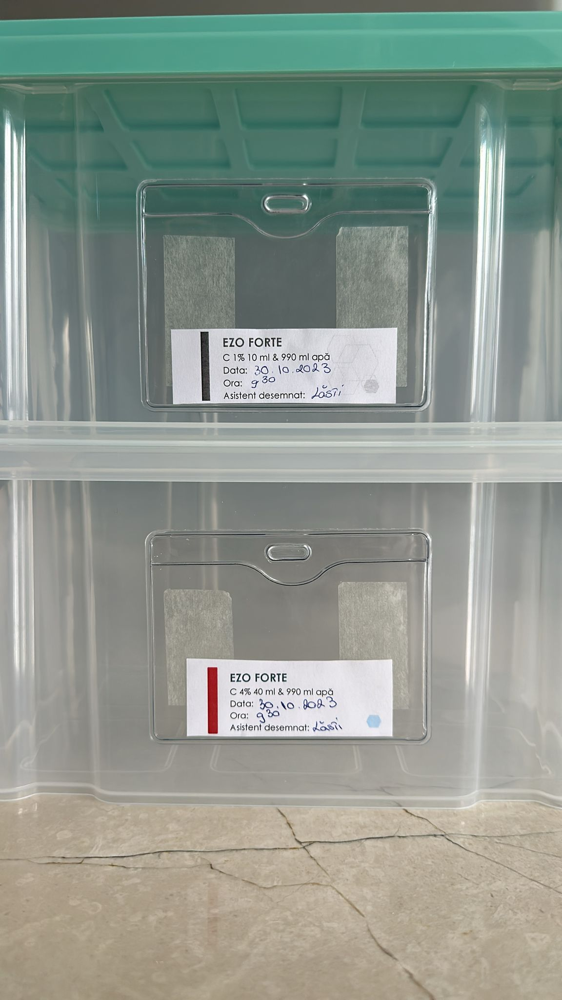
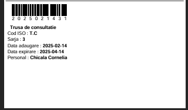
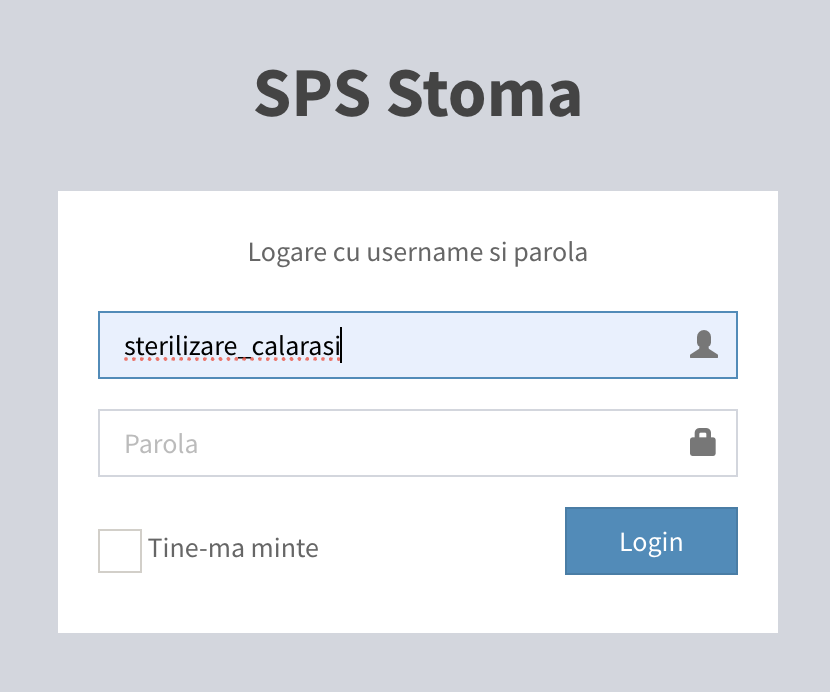
Sterilizare_NumeClinica.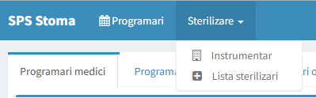
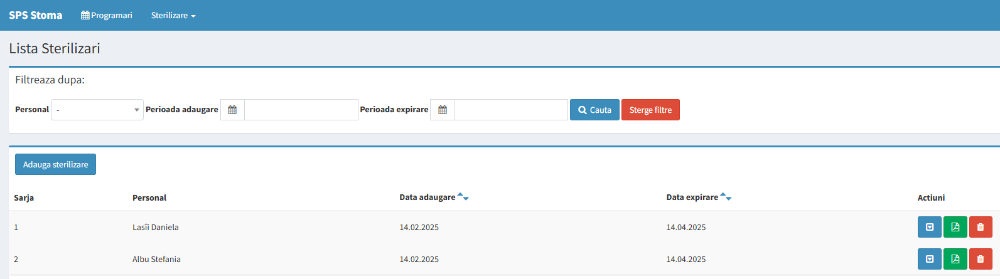
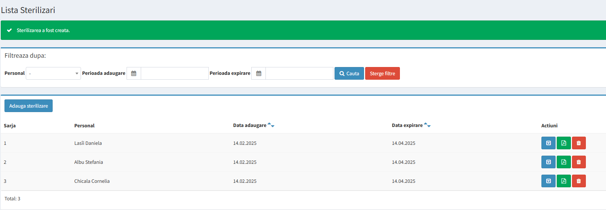
5.2 Faza de sterilizare
- Sterilizarea se realizează la autoclav de clasa B sau S, alegând un ciclu presetat corespunzător materialelor.
- Sterilizarea se face în ciclul prion: temperatură 134°C, timp 18 min.
- În cazul autoclavelor fără raport printat — se urmărește pe panou temperatura și presiunea și se notează în caietul de sterilizare.
- În cazul autoclavelor cu raport printat — acesta se atașează în registrul de evidență al sterilizării.
- La încărcare — spații libere între pachete și între pachete și pereți; rafturile autoclavului nu se scot.
5.3 Faza de post sterilizare
- Se verifică parametrii fizici (temperatură, timp, presiune), integritatea pachetelor, indicatorii fizico-chimici, filtrul de supapă de admisie.
- Este interzisă funcționarea aparatelor fără filtru sau cu filtru deteriorat.
- Pachetele se extrag când temperatura scade sub 90°C.
- Etichetele cu cod de bare se lipesc pe pungă, în afara zonei de sudare, pe instrumentarul relevant (cod ISO) — de exemplu, eticheta „trusă de consultație” se lipește pe instrumentarul care este o trusă de consultație.
- Pe fiecare etichetă: data sterilizării, data expirării, șarja, persoana responsabilă.
- Durata menținerii sterilității în pungile hârtie-plastic sudate: 2 luni (60 zile), cu condiția menținerii integrității ambalajului.
- După tratament, la introducerea în SPSS, se apasă iconița verde de sterilizare aferentă fiecărui tratament și se scanează cu scanerul de mână etichetele cu cod de bare.
- Asigurarea trasabilității complete pentru fiecare set de instrumente sterilizate
- Monitorizarea și documentarea fiecărui pas — la nivel de pacient și tratament
- Facilitarea identificării și corectării rapide a problemelor
- Bază detaliată pentru audituri și inspecții
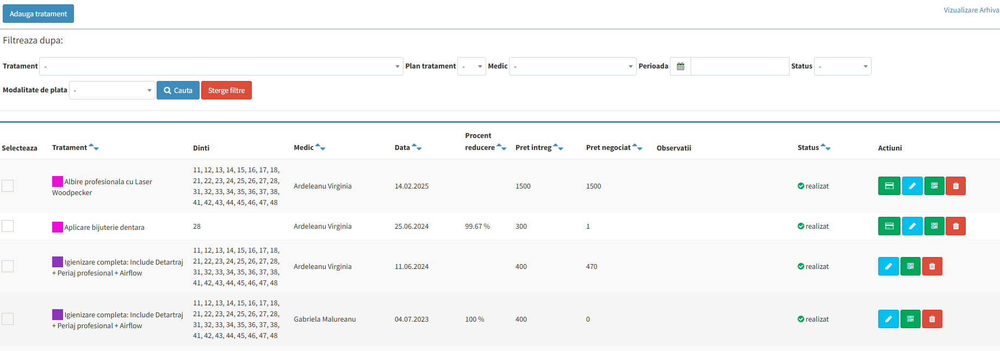
5.4 Fișa de Trasabilitate Manuală — procedură de rezervă
În cazul în care nu se folosește metoda automatizată de documentare a trasabilității procesului de sterilizare prin SPSS (proces indisponibil din varii motive — defecțiune tehnică, mentenanță software, întrerupere internet), se va apela la metoda clasică manuală, prin completarea unei Fișe de Trasabilitate Manuală. Aceasta este un document specific care urmărește detaliat fiecare etapă a procesului de sterilizare pentru un anumit set de instrumente, sau individuale, asigurând trasabilitatea completă de la utilizare până la sterilizare și depozitare.
Conținutul Fișei de Trasabilitate Manuală
- Data și ora sterilizării. Notarea precisă a momentului în care a fost efectuat procesul de sterilizare.
- Identificarea autoclavei. Numărul și tipul autoclavei utilizate pentru sterilizare.
- Conținutul și numărul obiectelor sterilizate. Descrierea detaliată a instrumentarului și materialelor supuse sterilizării.
- Parametrii de sterilizare. Temperatura, presiunea și durata fiecărui ciclu de sterilizare.
- Indicatorii fizico-chimici și biologici. Rezultatele indicatorilor care atestă eficiența procesului de sterilizare.
- Identificarea persoanei responsabile. Numele și semnătura persoanei care a realizat și verificat procesul de sterilizare.
- Observații. Orice comentarii sau note suplimentare legate de procesul de sterilizare (de ex. anomalii detectate, repetări, condiții speciale).
5.5 Registrul de Sterilizare — document oficial obligatoriu
Registrul de Sterilizare este un document oficial cerut de legislație, care se completează manual în camera de sterilizare. Spre deosebire de Fișa de Trasabilitate Manuală (folosită doar ca rezervă SPSS), Registrul este obligatoriu permanent, în paralel cu sistemul digital.
Scopul completării Registrului
- Monitorizarea generală a tuturor ciclurilor de sterilizare
- Asigurarea conformității cu reglementările și standardele de sterilizare
- Oferirea unei evidențe istorice a proceselor de sterilizare pentru audituri și inspecții, inclusiv testul Bowie Dick
Conținutul Registrului
- Data și numărul aparatului: data la care s-a efectuat sterilizarea și identificarea autoclavei utilizate.
- Conținutul și numărul obiectelor din șarjă: descrierea generală a instrumentelor și materialelor sterilizate.
- Numărul șarjei: identificarea unică a fiecărei șarje de sterilizare.
- Parametrii de sterilizare: temperatura, presiunea și durata ciclului de sterilizare.
- Indicatorii fizico-chimici și biologici, Martorul test Bowie Dick: rezultatele indicatorilor care atestă eficiența procesului.
- Semnătura persoanei responsabile: numele și semnătura persoanei care a realizat procesul de sterilizare.
Cei doi martori termici — dublu control de sterilizare
Martorul „Tip 5 cu 4 romburi" (în partea stângă) — se capsează în Registru în dreptul fiecărei șarje. Se folosește un singur martor per șarjă. Acesta modifică culoarea romburilor din roz în negru după șocul termic din autoclav, confirmând că temperatura corectă a fost atinsă.
Martorul „Tip Bandă cu 2 dungi negre" (în partea dreaptă) — se lipește în Registru în dreptul fiecărei șarje. Se folosește un singur martor per șarjă. Acesta modifică culoarea benzii din alb în galben cu dungi negre după șocul termic.
Utilizarea celor doi martori reprezintă un dublu control de sterilizare, oferind redundanță în confirmarea eficacității procesului.
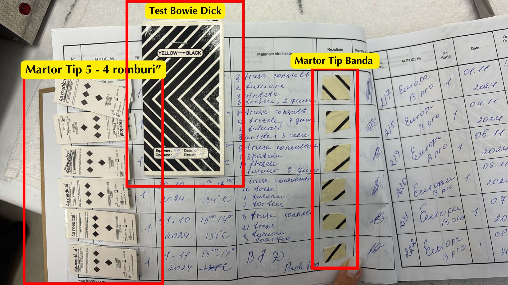
6.Verificarea autoclavului — Testul Vacuum
Scop: Verificarea etanșeității camerei de sterilizare și a eficienței sistemului de vidare, prin detectarea eventualelor pierderi de aer.
Definiție: Testul de vacuum este un test tehnic care evaluează capacitatea sterilizatorului de a menține presiunea negativă (vidul). Confirmă integritatea camerei, a garniturilor și a sistemului de vacuum.
Mod de utilizare: zilnic, înainte de începerea ciclurilor, cu autoclavul rece și camera complet goală. Se selectează programul „Vacuum Test"; autoclava realizează automat ciclul. Testul este corespunzător dacă pierderea de presiune se încadrează în limitele admise de producător. Rezultatul (print sau înregistrare digitală) se arhivează.
7.Verificarea autoclavului — Testul Bowie Dick
Scop: Verificarea calității penetrării aburului în timpul sterilizării — în faza de pre vacuum și post vacuum.
Mod de utilizare: Se efectuează o dată pe săptămână. Controlul de rutină începe cu un test de vid, urmat de un ciclu de încălzire. Pachetul de testare (fără a fi desfăcut) se plasează orizontal în partea inferioară a camerei — singurul material introdus. Ciclu specific Bowie & Dick la 134°C pentru 3–3.5 min. La final, hârtia indicatoare se verifică pe o suprafață plană, ferită de lumina directă.
- Modificare uniformă a culorii — funcționare corectă
- Modificare neuniformă — evacuare insuficientă a aerului
8.Verificarea autoclavului — Testul Helix nou V3
Scop: Verificarea eficienței penetrării aburului și a eliminării aerului în instrumentar cu cavități înguste (lumen) — piese de mână, anse, bonturi, truse chirurgicale.
Mod de utilizare: Ori de câte ori se sterilizează instrumentar cu lumen sau truse chirurgicale. Indicatorul chimic se introduce în dispozitivul Helix, care se plasează în autoclav în zona recomandată. Ciclu de sterilizare la 134°C. La final — schimbarea culorii completă și uniformă confirmă rezultatul corespunzător.
9.Verificarea autoclavului — Testul Biologic nou V3
Scop: Confirmarea distrugerii microorganismelor rezistente (spori bacterieni) — metoda cea mai sigură de control al sterilizării.
Definiție: Sistem de monitorizare cu spori bacterieni standardizați (de regulă Geobacillus stearothermophilus pentru sterilizarea cu abur), care confirmă, prin incubare, eficiența procesului.
Mod de utilizare:
- Testul biologic se efectuează o dată pe lună.
- Fiola/indicatorul se plasează în camera autoclavei, în zona considerată cea mai dificil de sterilizat sau împreună cu instrumentarul de chirurgie.
- Se rulează ciclul de sterilizare (de obicei 134°C).
- La final, indicatorul se introduce în incubator conform instrucțiunilor producătorului.
- Incubare 24–48 ore.
- Lipsa dezvoltării microbiene confirmă eficiența sterilizării.
- Rezultatul se documentează și se arhivează.
10.Responsabilitățile personalului
Asistentul Medical: realizează curățarea și sterilizarea, introduce informațiile în SPSS, completează Registrul de Sterilizare.
Asistentul Medical Șef: controlează respectarea tehnicii, realizează Testul Bowie Dick o dată pe săptămână și trimestrial (după revizia autoclavei). Răspunde, în primul rând, pentru sterilizare.
11.Instruirea personalului. Difuzare
- Testări lunare în modulul de testare/Educație Continuă din ERP.
- Exerciții anuale pentru reacția la contaminări accidentale.
- Feedback anonim prin sistem intern în ERP.
- Procedura este disponibilă în ERP la adresa
erp.clinicile-ardeleanu.ro/auth.php.
Capitolul XIIProcedura de gestiune deșeuri medicale ADC-DSM-01
1.Scop și domeniu
Stabilirea modalității prin care se identifică, se colectează, se depozitează și se elimină deșeurile generate în urma activității medicale de stomatologie, astfel încât să se asigure un nivel de protecție a sănătății umane și a mediului. Se aplică de către asistenții medicali și asistentul medical șef.
2.Documente de referință
- OMSP nr. 219/2002 — Norme tehnice privind gestionarea deșeurilor rezultate din activitățile medicale.
- HG nr. 155/1999 — Evidența gestiunii deșeurilor și Catalogul European al Deșeurilor.
- OMSP nr. 1226/2012 — Colectarea corectă a deșeurilor rezultate din activitatea medicală.
3.Clasificarea deșeurilor
| Categorie | Descriere | Cod |
|---|---|---|
| Deșeuri tăioase și înțepătoare | Ace, bisturie, lame și alte obiecte ascuțite | 18 01 01 / 18 01 03* |
| Deșeuri anatomo-patologice | Rezultă din intervențiile chirurgicale | 18 01 02 – 18 01 03* |
| Deșeuri infecțioase | Contaminate cu agenți patogeni | 18 01 03* |
| Deșeuri nepericuloase | Materiale fără risc biologic sau chimic | 18 01 04 |
| Deșeuri chimice periculoase | Substanțe chimice și farmaceutice periculoase | 18 01 06* |
| Deșeuri chimice nepericuloase | — | 18 01 07 |
4.Deșeuri înțepătoare-tăietoare 18 01 01 / 18 01 03*
Se colectează în recipiente din material plastic rigid, rezistent la acțiuni mecanice. Recipientul are la partea superioară un capac special cu sistem de închidere definitivă; capacul are orificii pentru detașarea acelor de seringă și a lamelor de bisturiu. Recipientele pentru deșeuri infecțioase au culoarea galbenă și sunt marcate cu pictograma „Pericol biologic".
Caracteristici tehnice obligatorii
- Impermeabil, etanș, cu sistem de închidere temporară și definitivă.
- Marcat și etichetat în limba română: tip deșeu, pictogramă „Pericol biologic", capacitate, mod de utilizare, linie de marcare a nivelului maxim, date de început/umplere, unitate sanitară, persoană responsabilă, marcaj UN conform ADR.
- Respectă SR 13481/2003 sau standarde europene echivalente.
- Stabilitate pe masa de tratament — evitarea răsturnării.
Stocare temporară: maxim 48h (sau 7 zile la 4°C).
Transport intern: pe circuit separat de cel al pacienților și vizitatorilor, conform interval orar stabilit.
Transport extern: mijloace autorizate, predare pe bază de contract către operatori autorizați.
Tratare: decontaminare termică la temperaturi scăzute. Eliminare: incinerare în incineratoare de deșeuri periculoase.
5.Deșeuri anatomo-patologice 18 01 02 / 18 01 03*
Deșeurile anatomo-patologice — părțile anatomice, recipientele cu sânge — sunt considerate deșeuri infecțioase și sunt colectate obligatoriu în cutii din carton rigid, prevăzute în interior cu sac din polietilenă care trebuie să prezinte siguranță la închidere, sau în cutii confecționate din material plastic rigid cu capac ce prezintă etanșeitate la închidere, având marcaj galben, special destinate acestei categorii de deșeuri.
Etichetare obligatorie
Cutiile sunt etichetate cu următoarele informații: tipul deșeului colectat, pictograma „Pericol biologic", capacitatea recipientului (l sau kg), modul de utilizare, linia de marcare a nivelului maxim de umplere, data distribuirii recipientului în fiecare cabinet, persoana responsabilă cu manipularea lui, data umplerii definitive, marcaj conform standardelor UN, în conformitate cu ADR.
Stocare, transport și eliminare
- Stocare temporară: condițiile trebuie să îndeplinească normele de igienă în vigoare. Durata nu trebuie să depășească 48 h (în cazul asigurării temperaturii de refrigerare de 4°C — maximum 7 zile).
- Transport intern: pe circuit separat de cel al pacienților și vizitatorilor, pe baza unui interval orar stabilit.
- Transport extern: către locul de eliminare finală, cu mijloace de transport autorizate, predate pe bază de contract unor operatori economici autorizați conform legislației specifice.
- Eliminare: această categorie de deșeuri se elimină doar prin incinerare.
6.Deșeuri infecțioase 18 01 03*
Deșeurile infecțioase se colectează în cutii din carton prevăzute în interior cu saci galbeni din polietilenă, sau saci din polietilenă galbeni ori marcați cu galben, de diferite capacități, în funcție de cantitatea de deșeuri produsă.
Caracteristici tehnice
- Atât cutiile prevăzute în interior cu saci din polietilenă, cât și sacii sunt marcați și etichetați în limba română cu: tipul deșeului colectat, pictograma „Pericol biologic", capacitatea recipientului, modul de utilizare, linia de marcare a nivelului maxim de umplere, data începerii utilizării recipientului pe secție, unitatea sanitară și secția care a folosit recipientul, persoana responsabilă cu manipularea lor, data umplerii definitive, marcaj conform standardelor Națiunilor Unite (UN), în conformitate cu Acordul european referitor la transportul rutier internațional al mărfurilor periculoase (ADR).
- Cutiile din carton prevăzute cu saci de plastic în interior sunt stocate temporar pe suprafețe uscate.
- Sacii au rezistență mecanică mare, se pot închide ușor și sigur, utilizând sigilii de unică folosință. Termosuturile sunt continue, rezistente și nu permit scurgeri de lichid.
- Atunci când nu este pus în cutie de carton care să asigure rezistență mecanică, sacul se introduce în pubele prevăzute cu capac și pedală sau în portsac, fiind obligatoriu ca și acesta din urmă să aibă capac.
- Gradul de umplere a sacului nu va depăși 3/4 din volumul său.
- Pubelele cu pedală și capac sunt inscripționate cu pictograma „Pericol biologic".
Stocare, transport, tratare și eliminare
- Stocare temporară: maxim 48 h (sau 7 zile la 4°C).
- Transport intern: circuit separat de pacienți și vizitatori, pe interval orar stabilit.
- Transport extern: mijloace autorizate, contract cu operatori economici autorizați.
- Tratare: decontaminare termică la temperaturi scăzute.
- Eliminare: incinerare în incineratoare de deșeuri periculoase.
7.Deșeuri nepericuloase asimilabile menajere 18 01 04
Această categorie de deșeuri se colectează în saci din polietilenă de culoare neagră, inscripționați „Deșeuri nepericuloase". În lipsa acestora se pot folosi saci din polietilenă transparenți și incolori; sacii pot fi etichetați cu codul 18 01 04.
Aceste deșeuri sunt stocate temporar într-un spațiu special amenajat, separat de deșeurile periculoase, și sunt preluate de companiile de salubritate, pe bază de contract.
8.Deșeuri chimice periculoase 18 01 06*
Deșeurile chimice periculoase rezultate din activitatea unităților sanitare se colectează în recipiente speciale, cu marcaj adecvat pericolului („Inflamabil", „Coroziv", „Toxic" etc.) și se tratează conform prevederilor legale privind deșeurile periculoase. Recipientele în care se colectează deșeurile chimice sunt proiectate și realizate în așa fel încât să împiedice orice pierdere de conținut și corespund standardelor UN, în conformitate cu prevederile ADR.
Stocare, transport, tratare și eliminare
- Stocare temporară: în spații speciale amenajate, conform prevederilor legale în vigoare.
- Transport: deșeurile chimice constând din sau conținând substanțe periculoase se evacuează și se transportă pe baza unui contract cu o firmă autorizată.
- Tratare: tratare chimică sau pot fi returnate furnizorului cu acordul acestuia.
- Eliminare: incinerare (după ce, în prealabil, a fost testată reactivitatea termică a acestor deșeuri) în incineratoare de deșeuri periculoase.
9.Deșeuri chimice nepericuloase 18 01 07
Aceste deșeuri nu sunt considerate periculoase și se colectează separat în ambalajul original și pot fi împachetate în recipiente care nu corespund standardelor UN/ADR. În cazul în care aceste deșeuri nu se mai află în ambalajul original, ele se stochează și ambalează în recipiente care corespund standardelor UN, în conformitate cu ADR.
În cazul deșeurilor rezultate de la aparatele de diagnoză ce conțin substanțe chimice periculoase în cantități neglijabile, sunt urmate instrucțiunile specifice aparatului respectiv. Aceste deșeuri se valorifică sau elimină ca deșeuri nepericuloase. Ambalajele sunt etichetate cu codul 18 01 07.
Stocare, transport, tratare și eliminare
- Stocare temporară: în ambalajul original sau într-un ambalaj conform ADR, într-o incintă separată de deșeurile chimice periculoase, la o temperatură corespunzătoare.
- Transport: pe bază de contract cu o firmă autorizată.
- Tratare și eliminare: se valorifică și se elimină ca deșeuri chimice periculoase.
10.Responsabilitățile personalului
Asistent Medical Generalist: realizează activitățile de colectare a deșeurilor din cabinetele clinicii.
Asistentul Șef: activitățile de întreținere și eliminare a deșeurilor; întocmește programul de curățenie; monitorizează condițiile de mediu. În lipsa Asistentului Medical Șef, responsabilitățile sunt preluate de Coordonatorul Operațional al Clinicii.
Coordonator Operațional / Manager Clinică: verifică și asigură respectarea condițiilor de depozitare a deșeurilor; verifică și răspunde de realizarea condițiilor de lucru corespunzătoare.
11.Instruirea personalului. Difuzare
- Testări periodice: toți angajații sunt testați lunar asupra cunoștințelor de gestionare a deșeurilor, prin modulul de testare / Educație Continuă în ERP.
- Simulări practice: se organizează exerciții anuale pentru reacția la contaminări accidentale.
- Feedback anonim: personalul poate raporta problemele din proces printr-un sistem intern, în ERP.
- Difuzare: procedura este disponibilă în format electronic în ERP la adresa
erp.clinicile-ardeleanu.ro/auth.phpși se revizuiește ori de câte ori este necesar, în urma schimbărilor legislative sau tehnice din organizația Dr. Ardeleanu.
Capitolul XIIIProcedura de gestiune pentru materiale consumabile medicale ADC-MAC-01
1.Scop și domeniu de aplicare
Asigurarea clinicii cu materialele consumabile medicale pentru fiecare zi și pentru fiecare tratament în parte, precum și pentru mentenanța echipamentelor existente în clinică. Procedura se aplică de către Asistenții Medicali și Asistentul Șef.
2.Documente de referință
Având în vedere dispozițiile Legii nr. 31/1990 privind organizarea și conducerea societăților comerciale, în scopul asigurării integrității activelor, datoriilor și capitalurilor Rețelei de Clinici Dr. Ardeleanu și valorificării prin inventariere a realității acestora, conform OMFP nr. 2861/2009 (pentru aprobarea Normelor privind organizarea și efectuarea inventarierii elementelor de natura activelor, datoriilor și capitalurilor proprii, publicat în Monitorul Oficial nr. 704/20.10.2009) și a Legii nr. 82/1991 cu actualizări și completări ulterioare.
3.Comanda
Prima comandă — la începutul fiecărei luni, Asistentul Șef este responsabil de alimentarea clinicii cu materiale consumabile necesare pentru efectuarea tratamentelor ce vor urma, prin plasarea comenzii către departamentul de achiziții în aplicația ERP (erp.clinicile-ardeleanu.ro/workspace/account/home.php).
Comanda de completare — la jumătatea lunii, urmând același curs.
Comenzile din clinică se fac ținând cont de:
- Stocul existent în clinică
- Istoricul de consum pe lunile precedente
- Previziunile de tratamente care urmează a fi efectuate pentru luna în curs
Pașii pentru plasarea comenzii în ERP
- Accesare meniu — din meniul principal se alege folderul „Comenzi", apoi subfolderul „Comenzi".
- Adăugare comandă — se apasă butonul verde „Adaugă comandă" din colțul dreapta-sus al imaginii.
- Alegerea locației — se deschide o fereastră în care se alege locația pentru care se plasează comanda; se apasă butonul „Adaugă".
- Selectarea produselor — se deschide o pagină nouă cu tot nomenclatorul de produse, coduri și furnizori, listate în funcție de categorie.
- Inserarea cantităților — în chenarul din dreapta fiecărui produs se inserează cantitatea dorită, ținând cont de unitatea de măsură.
- Finalizare — după adăugarea cantităților necesare, se apasă butonul verde „Adaugă" de la sfârșitul listei. După apăsarea acestui buton, comanda nu mai poate fi modificată.
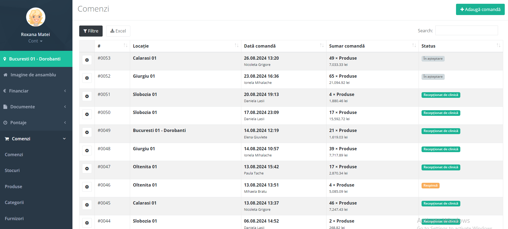
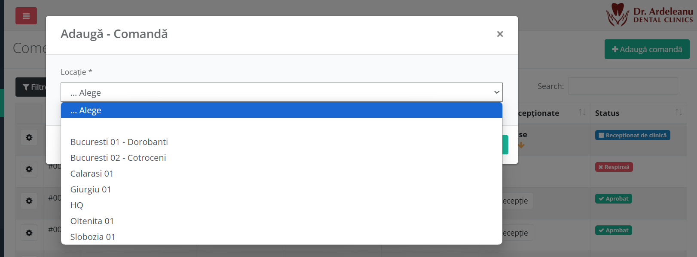
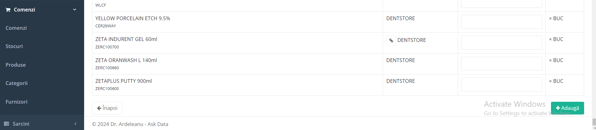
4.Aprobarea comenzii
După plasarea comenzii, Achizitorul de la sediul central Dr. Ardeleanu primește notificare pe email. Comanda va fi preluată și procesată în funcție de stocul deja existent în clinică, dar și de previziunea tratamentelor programate. Apăsând butonul „Revizuiește", se deschide lista de comandă plasată de către clinică. În dreptul fiecărui produs comandat, achizitorul notează cantitatea pe care o aprobă, apoi apasă butonul verde „Aprobă".
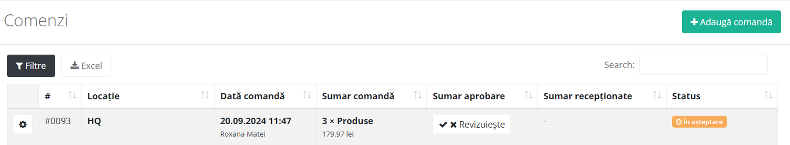
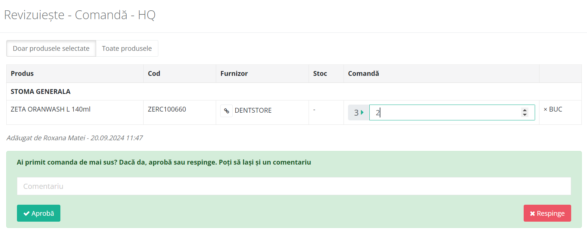
5.Recepția
Toate produsele care ajung în clinică trebuie recepționate pentru constatarea diferențelor. În procesul de recepție se verifică cantitatea recepționată, calitatea materialelor și termenul de valabilitate prin raportare la (i) facturi și (ii) certificatul de conformitate și garanție.
Procesul de recepție
- Verificarea facturii — ne asigurăm că există factura în colet, cu mențiune privind adresa de livrare (locația sau numele medicului pentru care s-a plasat comanda, în cazul medicilor ortodonti).
- Verificare fizică — conform articolelor înscrise pe factură, se verifică fizic dacă există produsele și cantitățile.
- Însemnare pe factură — cu creionul, se notează dacă produsele și cantitățile corespund. Se notează numele persoanei și data recepției.
- Predare la recepție — facturile sunt predate către recepție pentru scanare și transmitere către departamentul financiar.
- Anunțarea diferențelor — în caz de diferențe cantitative, neconformitate calitativă sau termen expirat, se anunță achizitorul pe grupul de „Comenzi" cât mai repede posibil.
- Depozitare — materialele intră în depozitul central al clinicii și sunt distribuite către fiecare cabinet doar atunci când se termină unul din materialele deja începute. Regulă: în fiecare cabinet trebuie să existe o singură seringă desfăcută de compozit A2, o singură cutie de mănuși S, un singur material de amprentă etc.
- Confirmare în ERP — după recepția fizică, în ERP se apasă butonul „Recepție" și în dreptul fiecărui produs se notează cantitatea recepționată. Se apasă „Confirm" pentru finalizare.
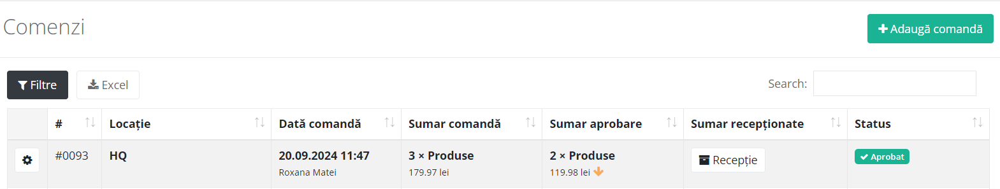
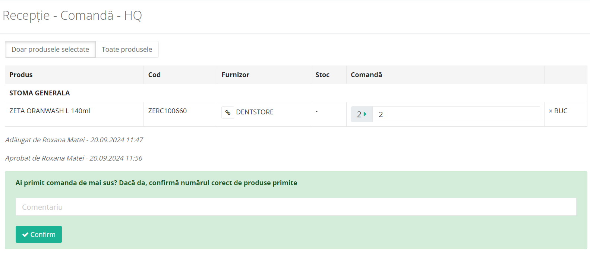
Pentru a vedea toate informațiile referitoare la fluxul comenzii, se accesează rotița din dreptul numărului comenzii. Se alege „Imagine" și se deschide o fereastră nouă cu tot istoricul comenzii — persoanele care au plasat, aprobat și recepționat produsele, datele, orele și mesajele care pot fi lăsate atât în fereastra de aprobare, cât și în cea de recepție.
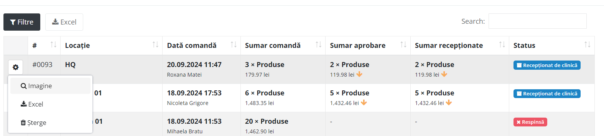
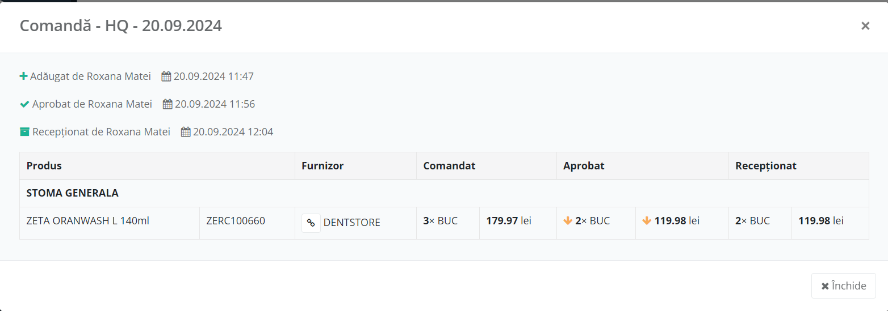
6.Inventarul
Gestiunea din fiecare clinică este compusă din:
- Materiale medicale consumabile (tot ce intră în gura pacientului)
- Farmacie (medicamente)
- Instrumentar
- Non-medicale (curățenie și birotică)
- Echipamente
Dezinfectanții medicali și produsele de întreținere a aparaturii medicale fac parte din gestiunea de stomatologie generală. Aceste materiale se găsesc în cabinet, în sterilizare și în depozitul central al clinicii.
Materialele medicale consumabile se numără lunar. Farmacia, instrumentarul și echipamentele medicale, datorită utilizării lor pe termen lung, se inventariază anual. Inventarul lunar se realizează la sfârșitul fiecărei luni, la o dată stabilită de comun acord.
Pașii pentru realizarea inventarului
- Formarea echipei — se formează o echipă de 2 persoane (asistent + asistent șef) pentru numărarea și notarea în nomenclatorul de materiale consumabile printat din ERP.
- Accesare meniu — din meniul principal se alege folderul „Comenzi", apoi subfolderul „Stocuri".
- Adăugare stoc — se apasă butonul verde „Adaugă stoc" din dreapta sus.
- Printarea nomenclatorului — din pagina nou deschisă, se apasă butonul roșu din dreapta sus „Printează-mă".
- Inventarierea — se inventariază depozitul central și cabinetele cu materiale de stomatologie generală, implantologie (implanturi, bonturi, membrane, os, PRGF) și sterilizare. În dreptul articolelor regăsite în listă se notează cantitatea găsită faptic în fiecare cabinet, sterilizare și depozit central.
- Unitatea de măsură (U.M.) — pentru implantologie, numărarea se face la bucată. Pentru restul materialelor, estimarea se face 0.25 / 0.5 / 0.75 dintr-un întreg (bucată/cutie/set).
- Introducere în ERP — după numărarea fizică, cantitățile se introduc în aplicația ERP. Se alege locația clinicii unde s-a efectuat inventarul. Se notează în dreptul fiecărui produs suma cantităților regăsite în clinică (ex. Compozit Gradia A2 — cabinet 1 + cabinet 2 + depozit central = 4.5 buc).
- Finalizare — se apasă butonul „Adaugă" pentru a finaliza inventarul.
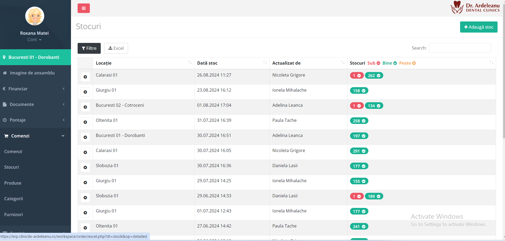
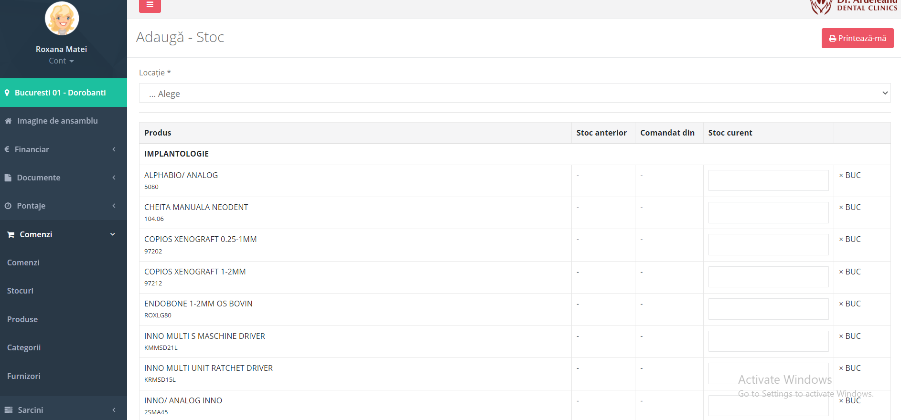
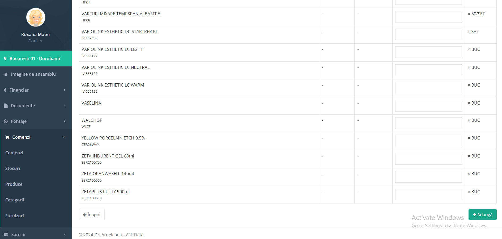
- Verificarea termenului de expirare al materialelor din clinică.
- Etichetarea obligatorie a tuturor materialelor consumabile deschise. Eticheta conține: data și ora deschiderii produsului, numele sau inițialele asistentului medical care a efectuat deschiderea.
- Se numără numai produsele achiziționate de către clinică (exclus materiale achiziționate de medici și lăsate în clinici).
- Dacă există produse care nu se regăsesc în lista de inventar, sunt produse care trebuie consumate și care nu vor mai fi comandate.
7.Responsabilitățile personalului
Asistentul Medical este responsabil de întreținerea și dotarea cabinetului în care activează cea mai mare parte a timpului, precum și de materialele necesare efectuării manoperelor pentru care este destinat cabinetul respectiv.
Asistentul Șef este responsabil de:
- Preluarea informațiilor referitoare la necesarul de materiale de la colegii săi (asistenți, personal curățenie, recepție).
- Plasarea comenzilor bilunare (începutul și mijlocul lunii) către departamentul achiziții/financiar.
- Recepția materialelor după fiecare comandă.
- Realizarea inventarului lunar.
Atunci când Asistentul Șef nu este disponibil, responsabilitățile sunt preluate de Coordonatorul Operațional. Asistentul Șef poate delega activitățile către echipa din subordine, păstrând responsabilitatea și doar cu acordul Managerului de Clinică.
8.Indicatori de Performanță (KPI) pentru Asistentul Medical Șef nou V3
În vederea asigurării unui control eficient al costurilor și al concordanței stocurilor, performanța Asistentului Medical Șef în gestionarea materialelor consumabile este evaluată pe baza următorilor indicatori de performanță:
Exprimat în procent (%) pentru clinica unde Asistentul Medical Șef își desfășoară activitatea. Analiza se face lunar, iar indicatorul se exprimă YTD (de la începutul anului și până la zi), prin raportare la așteptările bugetare comunicate pe anul în curs.
Reprezintă 80% din totalul criteriului de evaluare. Se acordă în condițiile atingerii obiectivului stabilit de conducerea companiei ca etapă a procesului anual de bugetare. Dacă procentul este mai mic (adică s-au realizat economii de costuri), bonusul crește. Procentul de referință (obiectivul de buget) este stabilit anual de conducerea companiei și comunicat în scris.
Reprezintă 20% din totalul criteriului de evaluare. Este un indicator calitativ, în completarea primului KPI. Se acordă în condițiile în care diferența dintre stocul scriptic și stocul fizic aferent categoriei implantologie nu depășește 3% la momentul inventarierii trimestriale.
Inventarierea se realizează trimestrial, pe baza unui proces-verbal de inventariere semnat de: Asistentul Medical Șef, Managerul Clinică și Reprezentantul departamentului de achiziții sediu (HQ). Diferențele sunt calculate procentual raportat la valoarea totală a stocului aferent implantologiei.
În situația în care diferența dintre stocul scriptic și stocul faptic depășește pragul admis de 3%, componenta aferentă indicatorului operațional (20%) nu se acordă pentru trimestrul următor celui în care s-a constatat depășirea.
Reluarea acordării acestei componente este condiționată de revenirea în parametrii acceptați (diferență ≤ 3%) la următoarea inventariere trimestrială.
9.Instruirea personalului. Difuzarea procedurii
- Testări periodice — toți asistenții medicali sunt testați lunar asupra cunoștințelor de gestiune materiale consumabile, prin modulul de testare/Educație Continuă în ERP. (Asistentul Șef nu dă testare.)
- Feedback anonim — personalul poate raporta probleme prin sistem intern în ERP sau pe grupurile WhatsApp.
- Instruire continuă — Asistentul Șef își instruiește zilnic/periodic/lunar/la nevoie personalul din subordine cu privire la gestiunea și utilizarea materialelor consumabile.
- Difuzare — procedura este disponibilă în format electronic în ERP la adresa
erp.clinicile-ardeleanu.ro/auth.phpși se revizuiește ori de câte ori este necesar în urma schimbărilor legislative sau tehnice.
Capitolul XIVProcedura de mentenanță a echipamentelor medicale ADC-ECH-01
Mentenanța echipamentelor medicale asigură funcționarea optimă, prelungirea duratei de viață și siguranța în utilizare. Asistentul medical este responsabil de menținerea în bune condiții a tuturor bunurilor și echipamentelor încredințate de companie ca instrumente de lucru în clinică. Acesta răspunde de mentenanța preventivă zilnică, iar mentenanța programată anuală se realizează prin service de specialitate.
| Echipament | Frecvență | Operațiune |
|---|---|---|
| Unit dentar | Dimineața | Rularea pieselor la începutul programului |
| Sfârșit program | Ungerea pieselor (contraunghi, turbină) | |
| Sfârșit program / după fiecare pacient pentru chirurgie | Curățarea sistemului de aspirație și a sitelor | |
| Anual | Mentenanță programată — service de specialitate, conform contract | |
| Compresor | Zilnic | Purjarea compresoarelor la sfârșitul programului |
| Anual | Mentenanță programată — service de specialitate | |
| Airflow | După fiecare pacient | Golirea pudrei, rularea în gol pentru a scoate toată pudra, suflare cu aer |
| Autoclav | Trimestrial | Inspecție tehnică de către persoane autorizate; după revizie — test Bowie&Dick |
Pentru echipamentele medicale chirurgicale — piese fiziodispenser, truse implantologie și instrumentarul aferent — mentenanța preventivă este descrisă în procedura de chirurgie ADC-CHR-01.
Capitolul XVProcedura medicală operațională de radiologie și PACS ADC-RAD-01
Rolul radiologiei în cadrul Clinicilor Dr. Ardeleanu este unul de o importanță majoră pentru stabilirea unui diagnostic de precizie și elaborarea unor planuri de tratament adecvate. Investigațiile radiologice sunt fundamentale în fluxul pacientului: radiografiile de tip RX (panoramică sau retroalveolară) sunt utilizate în peste 90% din cazuri, iar între 15–20% dintre pacienți efectuează investigații tridimensionale complexe de tip CBCT.
Ca regulă generală, indicația pentru orice investigație radiologică este dată de medicul stomatolog. Pentru a garanta siguranța și informarea transparentă, este absolut obligatoriu ca fiecare pacient să semneze consimțământul informat privind realizarea de proceduri radiologice (RX/CBCT) înainte de a intra în cabinetul de radiologie. În cazul minorilor, formularul se semnează de către părinte, tutore sau reprezentant legal. Recomandarea medicului este STRICT necesară pentru orice expunere radiologică la copiii cu vârsta sub 5 ani.
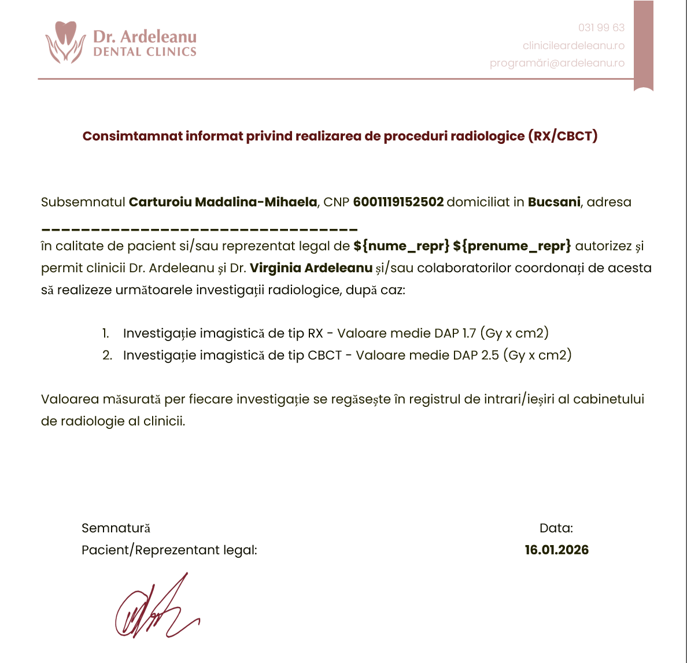
1.Scopul utilizării sistemului PACS
Sistemul PACS (Picture Archiving and Communication System) reprezintă o soluție complexă de gestionare a imaginilor medicale (CBCT și RX) — pentru stocare, accesare și comunicare a imaginilor digitale, precum și a rapoartelor medicale asociate. Este esențial în domeniul medical modern, oferind eficiență, accesibilitate și calitate.
- Vizualizarea medicală a imaginilor de către medicii stomatologi pentru interpretarea rezultatelor prin viewer-ul DICOM din PACS.
- Arhivarea corespunzătoare a imaginilor și păstrarea pe o perioadă de 5 ani, în serverul PACS.
- Transmiterea digitală a pachetului de imagini pacientului. În prezent prin email, semiautomat de către Asistentul Medical; în viitor, automat — printr-un link în SMS trimis de SPSS.
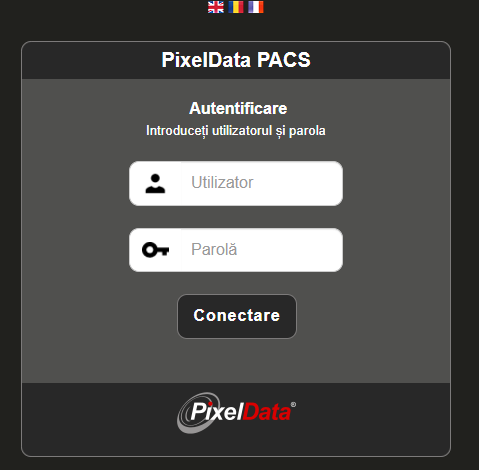
2.Accesarea aplicației PACS
Accesarea aplicației PACS se face la adresa https://pacs.clinicileardeleanu.ro:14023/, unde utilizatorii sunt întâmpinați de o fereastră de autentificare securizată. Fiecare clinică și medic trebuie să dețină cont PACS. Este obligatorie introducerea unui nume de utilizator și a unei parole valide pentru a accesa sistemul.
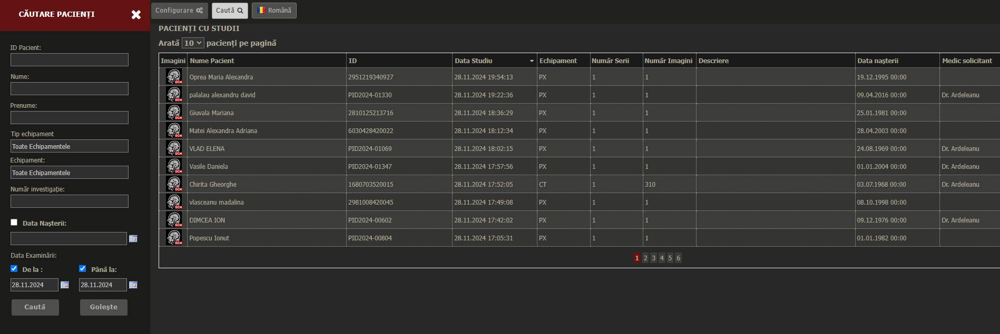
pacs.clinicileardeleanu.ro:14023. Fiecare clinică și medic deține credențiale personale.Interfața de lucru în PACS
Bara de meniu, situată în partea superioară a interfeței, oferă acces rapid la funcții esențiale:
- Configurări — personalizarea setărilor aplicației.
- Căutare — instrumente avansate de identificare pacienți, studii și imagini medicale.
- Detalii pacient — informații detaliate despre pacient, istoric medical și imagini asociate.
- Limba — schimbarea limbii de afișare a interfeței.
- Deconectare — închide sesiunea curentă și protejează informațiile medicale sensibile.
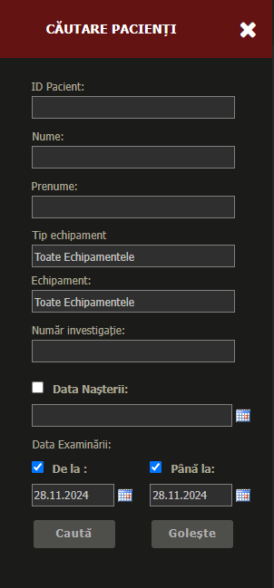
Filtre de căutare
Aplicația PACS oferă o varietate de filtre pentru identificarea rapidă a informațiilor relevante:
- ID Pacient (CNP) — căutare directă după Codul Numeric Personal.
- Nume și Prenume — căutare pe baza numelui complet.
- Tip echipamente — filtrare după tipul de echipament medical utilizat pentru achiziție.
- Echipamente — selectarea unui anumit echipament din listă.
- Nr. investigație — căutare pe baza numărului unic de identificare.
- Data nașterii & Data examinării — căutare pe baza intervalelor de date.
3.Utilitatea PACS
Aplicația PACS oferă o serie de funcționalități esențiale pentru utilizarea în mediul clinic:
- Vizualizare rezultate — medicii vizualizează și interpretează imaginile medicale ale pacienților în detaliu.
- Trimitere prin e-mail — imagini și rapoarte medicale către alți specialiști sau către pacienți.
- Descărcare — salvare locală pentru utilizare ulterioară.
- Furnizare pe CD sau stick USB — în situații excepționale, când accesul electronic nu este posibil.
Vizualizarea unui CT (CBCT)
Selectăm pacientul din listă. În partea stângă a ecranului, apăsăm pe iconița reprezentată de „Radiografia craniană" pentru a accesa imaginile CT.
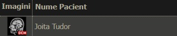
Vizualizarea radiografiilor RX
Selectăm pacientul din listă. În partea dreaptă a ecranului, apăsăm pe iconița reprezentată de „Descărcare ZIP" pentru a accesa imaginile RX. Apare interfața de selecție; bifăm radiografia RX dorită pentru deschidere. Radiografia se deschide pe ecran pentru analiza medicală.
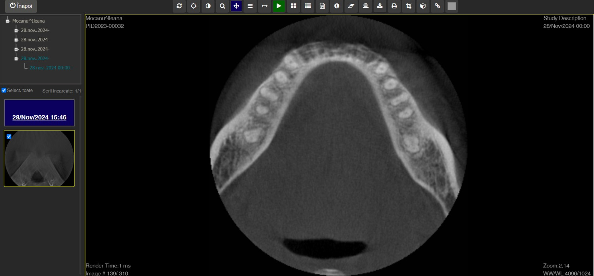
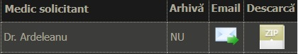
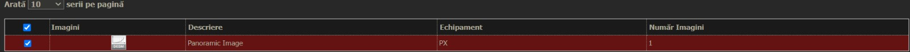
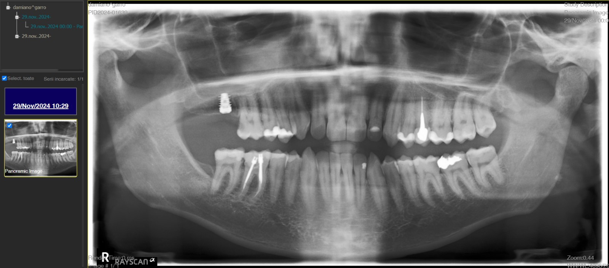
4.Responsabilitățile Registratorului Medical
Procedura pentru pregătirea pacientului în vederea realizării unei radiografii RX sau CT implică următorii pași din partea Registratorului Medical:
- Se asigură că pacientul a bifat cu DA acceptul pentru efectuarea investigației imagistice [RX/CT] în cadrul Dosarului Medical Complet.
- Anunță Asistentul Medical care va face investigația și pune în contact pacientul cu acesta.
- Comunică Asistentului Medical toate informațiile relevante despre pacient (ex. persoană însărcinată, dizabilități speciale, alte informații comunicate).
- Informează pacienții că radiografiile RX/CT sunt disponibile exclusiv în format electronic, ceea ce facilitează accesibilitatea și eficiența. Pacienții primesc pe email imaginile, iar în viitor prin SMS cu link.
- Se asigură că pacientul are adresa de e-mail și CNP-ul introduse în sistemul SPSS.
- Verifică și se asigură că serviciul imagistic a fost introdus în SPSS. Atenție: serviciile de radiologie-imagistică se regăsesc în nomenclatorul SPSS în lista de SERVICII și NU în lista de TRATAMENTE.
Pacienți din exteriorul clinicii
Pentru pacienții care folosesc doar serviciul de imagistică, Registratorul Medical are următoarele obligații:
- Semnarea consimțământului informat privind realizarea de proceduri radiologice.
- Înregistrarea serviciului în SPSS.
- Încasarea plății serviciului.
În cazul în care pacientul nu face pe loc investigația și revine la o dată ulterioară, NU se realizează o programare prealabilă în SPSS (similar unei urgențe, pacientul nu are nevoie de programare prealabilă pentru RX/CBCT). Pacientul poate veni oricând în intervalul orar 8–20, iar Registratorul Medical este responsabil pentru introducerea serviciului în SPSS ulterior realizării acestuia și pentru încasarea plății.
5.Responsabilitățile Asistentului Medical — Realizarea RX / CBCT
- Preluarea pacientului din recepție de către asistentul medical.
- Comunicare cu recepția pentru obținerea informațiilor relevante (sarcină, dizabilități, alte mențiuni).
- Conducerea pacientului în sala de radiologie pentru realizarea investigației.
- Introducerea datelor pacientului (Nume, Prenume, CNP, sex) în programul de realizare a radiografiei/CT, înainte de poziționare. CNP-ul este esențial pentru identificarea ulterioară a imaginilor în PACS.
- Verificarea accesoriilor personale — întrebăm pacientul dacă poartă proteză mobilă, bijuterii sau ochelari și solicităm îndepărtarea lor pentru radiografie.
- Confirmarea stării de sarcină pentru pacientele de sex feminin. Dacă sarcina a depășit primul trimestru, radiografia nu mai este posibilă. Excepții doar la solicitarea strictă a medicului pentru cazuri de urgență și doar cu acordul în scris al pacientei.
- Aplicarea vestei de protecție.
- Poziționarea pacientului la aparat și ajustarea aparatului deasupra umerilor pacientului.
- Pornirea scanării — Asistentul Medical părăsește camera și pornește procesul de la telecomanda exterioară.
- Înlăturarea vestei după finalizare și conducerea pacientului în cabinetul stomatologic sau la recepție.
- Transmiterea rezultatului pe adresa de email către pacient, din consola/calculatorul din camera de radiologie.
- Transfer automat în PACS — Imaginile RX sau CBCT se transferă automat și sunt descărcate/analizate de medicii specialiști.
- Dozimetrul — Asistentul Medical poartă la piept (agățat cu clips) dozimetrul pe perioada desfășurării activității.
Reguli specifice pentru poziționarea la aparatul CBCT
- Vesta de protecție trebuie să acopere zonele necesare (gât, piept, abdomen), fără a interfera cu zona scanată.
- Capul pacientului — aliniat pe cele trei planuri: axial, coronal, sagital.
- Linia mediană a capului — centrată în raport cu fasciculul de raze și senzorul CBCT.
- Pacientul stă în picioare.
- Suporturile aparatului (mentonieră, suporturi laterale) asigură imobilitatea capului.
- Benzile pentru frunte și bărbie previn mișcările în timpul scanării.
- Ajustare parametri în funcție de tipul examinării (maxilar, mandibulă, întreaga cavitate orală).
- Înainte de începerea scanării — verificare finală a poziției și alinierii.
Pentru ca RX-ul și CBCT-ul să se încarce automat în PACS, sistemul trebuie să identifice pacientul după CNP — atât în aplicația CBCT-ului, cât și în PACS. Identificarea se face prin matching exact al CNP-ului între cele două sisteme; orice discrepanță (cifră greșită, spațiu suplimentar, CNP lipsă) blochează asocierea automată și obligă la o asociere manuală ulterioară.
De aceea, este obligația asistentei medicale să introducă corect și complet CNP-ul pacientului în aplicația CBCT-ului, înainte de începerea expunerii. CNP-ul se preia din actul de identitate verificat la recepție și se confruntă cu fișa pacientului din SPSS.
6.Dozimetria — responsabilitățile Asistentului Medical
Conform legii, Dr. Ardeleanu are un contract pentru supravegherea dozimetrică a personalului expus la radiații. Contractul este realizat cu un organism dozimetric acreditat de CNCAN, în cazul nostru SC DOZIMED SRL.
Asistentul Medical primește lunar un dozimetru specific, nominal — conține nume, prenume și CNP. Dozimetrul se poartă la piept (agățat cu clips) pe toată durata activității în clinică.
Ciclul de purtare și schimbare a dozimetrului
- Dozimetrele sosesc în clinică și sunt purtate 30 de zile.
- Pe parcursul lunii, firma de dozimetrie (Dozimed) trimite pentru luna următoare un set nou.
- La începutul lunii, dozimetrele se înlocuiesc; cele vechi se trimit la Dozimed pentru a fi citite.
- Ciclul se repetă lunar pe perioada contractuală.
6a. Monitorizarea radiațiilor asupra personalului
Instituția care monitorizează radiațiile asupra personalului este CNCAN (Comisia Națională pentru Controlul Activităților Nucleare). Obiectivul este verificarea pe o perioadă de 6 luni ca radiațiile la care este supus personalul clinicii să nu depășească limita admisă. După perioada de încercare de 6 luni, monitorizarea dozimetrică poate înceta, cu aprobarea CNCAN.
Raportarea dozelor către CNCAN se face prin organismul dozimetric acreditat (DOZIMED SRL), care transmite lunar către CNCAN datele colectate din dozimetrele purtate. Dacă pe 6 luni consecutive nu se constată nereguli, în baza unei solicitări scrise, CNCAN poate acorda trecerea la categoria B și încetarea monitorizării.
6b. Monitorizarea radiațiilor asupra pacienților
Tot conform legii, clinica are obligația de a raporta către DSP (Direcția de Sănătate Publică, Laborator Igiena Radiațiilor) dozele de radiații la care au fost expuși pacienții. Raportarea se face trimestrial de către Asistentul Șef, pe emailul specific fiecărui DSP local. Informațiile se descarcă din softul de radiologie al aparatului, din consola/calculatorul de radiologie, și se completează într-un raport Excel în formatul standardizat.
| Trimestru | Perioadă | Termen de raportare către DSP |
|---|---|---|
| Trimestrul I | Ianuarie – Martie | până la 15 Aprilie |
| Trimestrul II | Aprilie – Iunie | până la 15 Iulie |
| Trimestrul III | Iulie – Septembrie | până la 15 Octombrie |
| Trimestrul IV | Octombrie – Decembrie | până la 15 Ianuarie |
7.Reprezentarea clinicii în inspecțiile CNCAN și DSP
Asistentul Medical Șef este responsabil cu reprezentarea de specialitate a clinicii în cazul controlului de la DSP/Igiena Radiațiilor sau CNCAN. În cazul acestor verificări, Asistentul Medical Șef trebuie să aibă la dispoziție în clinică dosarul de inspecție cu următoarele documente:
- Autorizația de Utilizare (CNCAN)
- Autorizația sanitară de funcționare (DSP)
- Buletinul de măsurători de arie (DSP)
- Contractul de achiziție a echipamentului CBCT
- Factura de plată a echipamentului CBCT
- Contractul de spațiu și schema locației
- Contractul de dozimetrie cu DOZIMED
- Decizia de numire a Responsabilului cu protecția radiologică (Dr. Virginia Ardeleanu)
- Tabelul cu personalul responsabil cu protecția radiologică
- Permisele de exercitare nivel 1 și nivel 2 (copii la dosar)
- Fișele de medicina muncii (mențiunea „apt de lucru în mediu cu radiații")
- Cursurile de radioprotecție (Dr. Virginia Ardeleanu, copii atașate)
- Tabelul cu echipamentele de radioprotecție (vesta) + autorizație de furnizare + certificat de conformitate
În lipsa Asistentului Medical Șef, responsabilitățile sunt preluate de Coordonatorul Operațional al Clinicii.
8.Instruirea personalului. Difuzarea procedurii
- Testări periodice — toți angajații sunt testați lunar asupra cunoștințelor prin modulul de testare/Educație Continuă în ERP.
- Feedback anonim — personalul poate raporta probleme prin sistem intern în ERP sau pe grupurile WhatsApp.
- Difuzare — procedura este disponibilă în format electronic în ERP la adresa
erp.clinicile-ardeleanu.ro/auth.phpși se revizuiește ori de câte ori este necesar în urma schimbărilor legislative sau tehnice.
9.Registrul Digital de Radiologie
Registrul Digital de Radiologie, disponibil în cabinetul de radiologie, cuprinde:
- Numele și prenumele pacientului care a realizat investigația.
- Codul numeric personal (CNP).
- Stare de graviditate [DA/NU].
- În caz afirmativ, vârsta sarcinii.
- Numele asistentei care a realizat investigația — în secțiunea de Notițe SPSS.

În majoritatea clinicilor rețelei, acest registru este ținut digital — într-un fișier Excel partajat și înregistrările auxiliare din SPSS. Totuși, unele Direcții de Sănătate Publică (DSP) solicită registrul pe hârtie la inspecțiile periodice, motiv pentru care în clinicile vizate se păstrează și o copie tipărită, semnată și capsată zilnic.
În viitor, Dr. Ardeleanu va pune la dispoziție o aplicație modernă dedicată pentru acest registru — cu validare automată a câmpurilor, semnătură electronică, export PDF pentru DSP și sincronizare directă cu PACS — depășind formatul Excel actual. Viitorul acestui registru este complet digital.
Capitolul XVI — Capitol nou V3Procedura de scanare intraorală digitală și încărcare în SmileCloud ADC-DSD-02
Scanarea intraorală digitală reprezintă o metodă modernă și precisă de captare tridimensională a structurilor dentare și a țesuturilor orale. Permite obținerea unui model digital 3D al arcadelor dentare, utilizat pentru diagnostic, planificare terapeutică și integrare în fluxurile digitale de lucru (Digital Smile Design, ortodonție, protetică, implantologie).
Sistemul Medit asigură achiziția rapidă și fidelă a datelor intraorale, generarea modelului digital și exportul acestuia în format STL, compatibil cu platforma SmileCloud. Respectarea riguroasă a procedurii garantează acuratețea clinică, trasabilitatea informațiilor și conformitatea cu standardele interne de igienă, siguranță și securitate digitală.
1.Scopul procedurii
Procedura standardizează procesul de scanare intraorală digitală pentru obținerea unor modele 3D corecte și reproductibile. Se urmărește:
- Obținerea unei acurateți clinice ridicate a scanărilor
- Reducerea erorilor de captare și a artefactelor digitale
- Asigurarea salvării și arhivării corecte a fișierelor STL
- Integrarea completă și corectă a cazurilor în platforma SmileCloud
- Menținerea unui flux digital sigur, predictibil și eficient
2.Domeniul de aplicare
Procedura se aplică asistenților medicali instruiți în utilizarea scannerului intraoral Medit, medicilor stomatologi care utilizează modelele digitale pentru planificare și tratament, precum și personalului responsabil cu încărcarea și gestionarea documentației digitale în SmileCloud.
3.Accesarea și pregătirea sistemului Medit
Înaintea fiecărei utilizări, echipamentul trebuie verificat și pregătit corespunzător. Capătul de scanare și corpul scannerului se curăță și se dezinfectează exclusiv cu alcool, conform protocolului intern de igienă. Se verifică integritatea cablurilor, stabilitatea conexiunilor și funcționarea corectă a sistemului. Conexiunea la internet trebuie confirmată, deoarece este necesară pentru funcționarea completă a platformei.
În cazul în care sistemul solicită calibrarea, se accesează modulul Calibration Wizard și se urmează pașii indicați. Scanarea nu va fi inițiată în absența unei calibrări confirmate.
După pornirea computerului și a scannerului, se accesează aplicația Medit Link și se introduc credențialele de autentificare. Statusul dispozitivului trebuie să fie afișat ca „Connected". În lipsa acestei confirmări, procedura nu poate continua.
4.Crearea cazului și înregistrarea pacientului
Pentru inițierea scanării, se selectează opțiunea „New Case" în aplicația Medit Link. Se introduc datele de identificare ale pacientului și se alege opțiunea „Register and Scan". Tipul de scanare se stabilește în funcție de indicația clinică și programarea existentă. Pentru evaluările inițiale, se recomandă scanarea completă standard a ambelor arcade și a ocluziei.
5.Pregătirea pacientului pentru scanare
Pacientul trebuie poziționat corect pentru a facilita accesul și vizibilitatea — așezat în poziție semi-verticală, cu spatele sprijinit și capul ușor în extensie. Înainte de începerea scanării, se verifică absența sângerărilor active și se controlează excesul de salivă.
Pentru o expunere optimă a câmpului operator, se utilizează OptraGate, alegând dimensiunea adecvată. În cazul reflexului de vomă, pacientul este instruit să respire controlat pe nas. Dacă există hipersalivație, pacientul este rugat să înghită saliva înainte sau între secvențele de scanare.
6.Protocol operațional de scanare intraorală
6.1 Scanarea maxilarului
Scanarea arcadei superioare se realizează într-o ordine standard: suprafața ocluzală, urmată de suprafața palatinală și apoi de suprafața vestibulară. Scannerul trebuie menținut în mișcare continuă, evitând întreruperile bruște sau îndepărtarea repetată din câmpul vizual.
După finalizare, se verifică modelul digital pentru identificarea eventualelor zone lipsă, discontinuități sau artefacte. Dacă sunt identificate erori, segmentul afectat se șterge și se rescanează. În situații extinse, scanarea poate fi reluată integral.
6.2 Scanarea mandibulei
Arcada inferioară se scanează respectând aceleași principii. Ordinea recomandată: suprafața ocluzală, suprafața linguală și apoi suprafața vestibulară. Verificare similară pentru integritate.
6.3 Înregistrarea ocluziei
Pacientul este instruit să închidă în poziția de ocluzie maximă. Se scanează succesiv zonele laterale stângă și dreaptă. Sistemul realizează alinierea automată a arcadelor, care trebuie verificată vizual pentru confirmarea corectitudinii relației maxilo-mandibulare.
7.Controlul calității, salvarea și exportul
După finalizarea scanării, se verifică integritatea completă a modelului digital. Cazul se salvează utilizând opțiunea „Save Case", iar datele sunt exportate în format STL. Se confirmă integritatea fișierelor și închiderea corectă a cazului în aplicație. La final, capătul scannerului este dezinfectat conform protocolului de igienă.
8.Încărcarea cazului în SmileCloud
Se accesează platforma SmileCloud folosind credențialele de autentificare. După conectare, se creează un caz nou și se introduc datele pacientului.
În secțiunea dedicată se încarcă documentația digitală relevantă:
- Fișiere STL
- CBCT
- OPG sau radiografii
- Fotografii clinice
Fișierele pot fi încărcate prin selectare din folder, utilizarea unui program dedicat sau prin funcția Drag & Drop. Se verifică finalizarea completă a încărcării înainte de închiderea sesiunii.
9.Responsabilități
Asistentul medical este responsabil pentru pregătirea echipamentului, respectarea protocolului de igienă, realizarea scanării conform ordinii stabilite, verificarea calității, salvarea și exportul fișierelor, și încărcarea în SmileCloud.
Medicul stomatolog verifică corectitudinea ocluziei digitale, validează clinic modelul 3D și utilizează datele pentru planificarea tratamentului.
10.Instruirea personalului. Difuzarea procedurii
Personalul care utilizează scannerul Medit trebuie să parcurgă instruire practică, să fie familiarizat cu interfața Medit Link, să cunoască procedura de calibrare și să respecte strict protocolul de igienă și fluxul operațional. Procedura este distribuită în format electronic personalului autorizat și se actualizează periodic, în funcție de modificările software, echipament sau flux digital.
Capitolul XVII — Capitol nou V3Realizarea fotografiilor intraorale și extraorale ADC-DSD-02
- 1.Scop
- 2.Domeniu de aplicare
- 3.Echipamente și instrumentar
- 4.Pregătirea pacientului
- 5.Poziționarea depărtătoarelor
- 6.Poziționarea operatorului
- 7.Fotografii faciale
- 8.Fotografii intraorale
- 9.Criterii de calitate. Erori
- 10.Dezinfecție și siguranță
- 11.Export în SmileCloud
- 12.Verificare și responsabilități
1.Scop
Standardizarea modului de realizare a fotografiilor faciale și intraorale în vederea:
- Documentării inițiale a cazului
- Planificării tratamentului
- Comunicării interdisciplinare
- Monitorizării evoluției
- Arhivării medico-legale
2.Domeniu de aplicare
Procedura se aplică în cadrul clinicii pentru realizarea fotografiilor intraorale și extraorale aferente documentației inițiale a pacientului. Este obligatorie pentru medici stomatologi, asistenți medicali și asistentul medical șef. Fotografiile se realizează exclusiv în incinta clinicii, utilizând dispozitivul mobil al clinicii și accesoriile dedicate.
3.Echipamente și instrumentar necesar
3.1 Dispozitiv foto
- Telefon mobil cu cameră, obiectiv curat (obligatoriu șters înainte de utilizare)
- Mod fotografie standard (fără filtre), format JPEG
- HDR dezactivat, Flash dezactivat (dacă se utilizează lumină externă)
3.2 Surse de iluminare
- Lumină ambientală uniformă (alb rece 5000–5500K)
- Lampă scialitică orientată frontal (pentru intraoral)
- Evitarea umbrelor dure și a luminii laterale excesive
3.3 Accesorii intraorale
- Oglindă ocluzală — fotografii ocluzale maxilar/mandibulă
- Depărtătoare bucale — fotografii frontale și laterale; pacientul le ține singur
- Contrastor negru (opțional) — evidențierea dinților anteriori, eliminarea fundalului lingual
- Comprese sterile / rulouri bumbac — uscarea câmpului, control salivă
4.Pregătirea pacientului
- Se explică pacientului scopul fotografiilor.
- Se obține consimțământul informat.
- Se îndepărtează ruj, machiaj excesiv, proteze mobile (dacă este necesar).
- Se verifică igiena orală (clătire prealabilă).
- Se poziționează pacientul — spate drept, cap în poziție naturală, planul Frankfurt paralel cu podeaua.
5.Poziționarea depărtătoarelor
Pacientul ține singur depărtătoarele. Asistentul oferă depărtătoarele dezinfectate, demonstrează poziționarea (brațele introduse între buze și dinți, buzele retrase complet lateral) și ghidează pacientul: ține ferm, trage lateral și ușor anterior, evită tensionarea excesivă. Buzele trebuie să fie complet retrase pentru a expune joncțiunea muco-gingivală, coletul dinților și zonele distale vizibile.
6.Poziționarea operatorului
- Operatorul stă frontal față de pacient.
- Telefonul — la nivelul dinților, paralel cu planul ocluzal, fără înclinare.
- Distanță recomandată: 20–30 cm pentru intraoral, 1–1.5 m pentru portret.
7.Realizarea fotografiilor faciale
Setări telefon
- Mod standard foto, fără zoom digital
- Focalizare prin atingere pe zona feței
- Fundal negru
Fotografii necesare
- Portret frontal — expresie neutră
- Portret frontal — zâmbet normal
- Portret frontal — zâmbet larg
- Profil lateral stâng — expresie neutră
- Profil lateral drept — expresie neutră
Reguli tehnice: capul drept · ochii deschiși · umerii relaxați · fără umbre pe față · cadru de la claviculă până deasupra capului.
8.Realizarea fotografiilor intraorale
Reguli generale
- Arcade în intercuspidare maximă
- Dinții uscați înainte de fotografie
- Saliva eliminată
- Lentila telefonului paralelă cu suprafața fotografiată
- Focalizare manuală prin atingere pe incisivi
| Vedere | Reguli specifice |
|---|---|
| Frontal intraoral | Linie mediană centrată · fără înclinare |
| Lateral dreapta | Ocluzie completă · vizibile premolari și molari · telefon paralel cu planul ocluzal |
| Lateral stânga | Identic cu lateral dreapta · evitarea umbrei obrazului |
| Ocluzal maxilar (cu oglindă) | Oglindă încălzită (anti-aburire) · introducere delicată · telefon perpendicular pe oglindă · evitarea reflexiei |
| Ocluzal mandibular (cu oglindă) | Capul ușor aplecat în spate · limba retrasă posterior · oglindă paralelă cu planul ocluzal inferior |
9.Criterii de calitate. Erori frecvente
O fotografie este acceptată dacă: este clară (fără blur), bine iluminată, fără umbre excesive, fără reflexii majore, arcadele centrate, planul ocluzal orizontal.
| Eroare | Cauză | Corecție |
|---|---|---|
| Imagine blurată | Mișcare | Stabilizare telefon |
| Umbre laterale | Lumină incorectă | Reorientare lampă |
| Distorsiune | Zoom digital | Fără zoom |
| Reflexie în oglindă | Unghi greșit | Ajustare perpendicularitate |
10.Dezinfecție și siguranță
- Depărtătoarele se sterilizează la rece, conform protocolului intern.
- Oglinzile — sterilizare la rece, conform procedurii standard.
- Telefonul este protejat cu husă dezinfectabilă.
- Se evită contaminarea încrucișată.
11.Export și încărcare în SmileCloud
- Accesarea platformei SmileCloud din browserul telefonului mobil. Autentificare cu credențialele oficiale ale clinicii. Interzisă utilizarea conturilor personale.
- Pacient nou: Add Case → introducere Nume și Prenume conform fișei medicale → verificare → salvare.
- Pacient existent: funcția de căutare → identificare după Nume și Prenume → accesarea dosarului digital.
- În dosarul pacientului → Galerie → Upload → selectare fotografii din memoria telefonului.
- Verificare înainte de confirmare: claritate, corespondență corectă cu pacientul, încărcare completă a tuturor imaginilor.
- Confirmare upload și verificare vizuală a prezenței imaginilor în galeria pacientului.
12.Verificare, securitate și responsabilități
După încărcare, se verifică asocierea corectă a fotografiilor cu dosarul pacientului. Se închide sesiunea prin deconectare (log out). Telefonul mobil utilizat se păstrează conform politicii interne de protecție a datelor.
Capitolul XVIIIProcedura de acordare prim ajutor și trusa de urgență ADC-AJT-01
1.Scop și domeniu
Acordarea primului ajutor medical calificat pentru pacienții și personalul clinicii. Procedura se aplică în baza Ordinului nr. 1484/2017.
2.Acordarea primului ajutor
2.1 Evaluarea situației
- Asigurați-vă că scena este sigură pentru pacient și personal.
- Evaluați rapid starea pacientului: conștiență, respirație, puls.
2.2 Acordarea primului ajutor de bază
| Situație | Acțiune |
|---|---|
| Inconștiență, dar cu respirație | Așezați pacientul în poziția laterală de siguranță. |
| Lipsa respirației | Inițiați RCP — 30 compresii toracice urmate de 2 respirații de salvare. |
| Sângerare | Aplicați presiune directă pe zona sângerândă cu un bandaj steril. |
| Șoc | Așezați pacientul pe spate, ridicați picioarele, acoperiți pentru a menține căldura. |
2.3 Utilizarea Defibrilatorului Automat (AED)
Dacă este disponibil, urmați instrucțiunile de utilizare ale AED în cazul unei lipse de puls. Dispozitivul ghidează vocal și vizual operatorul prin pașii standard: 1. pornire prin butonul ON/OFF, 2. aplicarea padurilor pe pieptul pacientului conform pictogramelor și 3. apăsarea butonului SHOCK doar atunci când aparatul confirmă necesitatea. Pe durata analizei și a șocului, nimeni nu trebuie să atingă pacientul.
2.4 Contactarea serviciilor de urgență
Apelați 112. Furnizați detalii precise: locație, starea pacientului, măsurile de prim ajutor administrate.
2.5 Monitorizare, sprijin și documentare
- Monitorizați continuu starea pacientului până la sosirea ajutoarelor.
- Reevaluați frecvent respirația, pulsul și nivelul de conștiență.
- Completați un raport detaliat al incidentului, incluzând toate măsurile de prim ajutor administrate.
3.Trusa medicală de urgență
Trusa sanitară este o cutie din material plastic cu colțuri și muchii rotunjite, ce protejează conținutul față de praf și umezeală, inscripționată vizibil de la o distanță de minim 5 m, dimensionată și compartimentată corespunzător.
Materiale sanitare
- Sonde de aspirație tip Yankauer
- Sonde de aspirație flexibile endotraheale, inclusiv pediatrice
- Seringi de 5 ml și 10 ml
- Truse pentru perfuzie
- Feșe și pansamente sterile și nesterile
- Truse sondaj urinar / pungi colectoare
- Container materiale ascuțite
- Mănuși nesterile / consult / unică folosință
- Canule intravenoase periferice, diferite mărimi (adulți/copii)
Medicamente și soluții
- Soluții cristaloide (ser fiziologic, Ringer, glucoză 5%, glucoză 10%)
- Analgezice minore nemorfinice
- Aspirină
- Beta 2 mimetice inhalatori
- Adrenalină
- Atropină
- Glucoză 33%
- Diazepam
- HCHS
- Nitroglicerină spray și tablete
- Xilină 1%
- Antiemetic injectabil și oral
- Furosemid fiole
- Vitamina B1, B6
- Miofilin fiole
- Antihipertensive injectabile și orale
- Antispastice injectabile și orale
- Antibiotice injectabile
- Soluții dezinfectante (alcool, iod, rivanol)
- Antihistaminice H1, H2
4.Responsabilități și instruire
Aplicarea tehnicilor de prim ajutor revine Asistentului Șef sau Asistentului medical aflat în proximitatea cazului. În lipsa Asistentului Șef, responsabilitățile sunt preluate de Asistenții Medicali. Coordonatorul Operațional / Managerul de Clinică răspunde de instruirea periodică, prin curs practic și testări lunare în modulul de Educație Continuă ERP.
Personalul poate raporta problemele din proces (feedback anonim) printr-un sistem intern, în ERP sau pe grupurile de WhatsApp. Procedura se difuzează în format electronic și este disponibilă în ERP la adresa erp.clinicile-ardeleanu.ro/auth.php, fiind revizuită ori de câte ori este necesar, în urma schimbărilor legislative sau tehnice.
Capitolul XIXProcedura ordine, igienă și securitate la locul de muncă ADC-OIM-02
1.Scop și domeniu
Asigurarea unui mediu de lucru sigur și sănătos prin menținerea ordinii, igienei și securității la locul de muncă. Se aplică tuturor angajaților, vizitatorilor și contractorilor care intră pe teritoriul companiei.
2.Ordine și curățenie
2.1 Organizarea spațiului de lucru
- Mențineți spațiul de lucru curat și organizat.
- Depozitați echipamentele și materialele în locurile desemnate.
- Eliminați deșeurile în containerele corespunzătoare (detalii la Cap. XII).
2.2 Accesibilitate și circulație
- Păstrați căile de acces și ieșirile de urgență libere.
- Asigurați accesul facil la echipamentele de prim ajutor și stingere a incendiilor.
2.3 Curățenie
- Realizați curățenia zilnică a spațiilor de lucru.
- Utilizați produse de curățenie adecvate și ecologice.
- Efectuați dezinfectarea periodică a suprafețelor comune.
- Mopurile plate și lavetele lavabile (pe coduri de culori) trebuie să reziste spălării și termo-dezinfecției.
- Curățarea se realizează cu detergenți, produse de întreținere și produse de curățat specifice.
3.Clasificarea zonelor & codificarea culorilor pentru mopuri
Clasificarea zonelor
- Zonele de recepție, coridoare și toalete — curățarea acestor zone se va face folosind mopuri și produse de curățenie distincte față de cele utilizate în cabinetele stomatologice și zona de sterilizare.
- Cabinetele stomatologice — curățarea se va face cu mopuri și produse de curățenie special destinate acestei zone pentru a preveni contaminarea.
- Zona de sterilizare — va fi curățată cu echipamente și produse de curățenie separate, destinate exclusiv acestei zone.
Codificarea culorilor pentru mopuri
| Zonă | Culoare mop |
|---|---|
| Recepție, coridoare, toalete | Mopuri albastre |
| Cabinetele stomatologice | Mopuri verzi |
| Zona de sterilizare | Mopuri galbene |
Procedura de curățenie
- Personalul de curățenie va utiliza mopurile corespunzătoare pentru fiecare zonă conform codificării culorilor.
- După utilizare, mopurile vor fi igienizate și depozitate separat pentru a evita orice posibilitate de contaminare încrucișată.
- Produsele de curățenie vor fi utilizate conform instrucțiunilor producătorului și normelor interne de igienă.
- Depozitarea produselor și a ustensilelor folosite la efectuarea igienizării se face în spații special destinate depozitării produselor și ustensilelor aflate în stoc, folosite în procesul de efectuare a curățării.
- Întreținerea ustensilelor folosite pentru efectuarea curățării se face zilnic, după fiecare operațiune de curățare și la sfârșitul zilei de lucru; ustensilele utilizate se spală, se curăță, se dezinfectează și se usucă. Curățarea și dezinfecția ustensilelor complexe se efectuează în funcție de recomandările producătorului.
- Personalul care execută operațiunile de curățare și dezinfecție a materialului de curățare trebuie să poarte mănuși de menaj sau mănuși de latex nesterile.
4.Igienă personală
4.1 Igiena zilnică
- Igienă corporală: angajații trebuie să facă duș zilnic și să utilizeze deodorant pentru a preveni mirosurile corporale neplăcute.
- Îngrijirea părului: părul trebuie să fie curat și aranjat corespunzător. Pentru cei cu părul lung, acesta trebuie prins dacă există riscul de contaminare sau dacă este necesar pentru siguranța muncii.
- Igienă orală: periajul dinților de cel puțin două ori pe zi și utilizarea apei de gură sunt esențiale pentru prevenirea respirației urât mirositoare.
4.2 Îmbrăcămintea
- Îmbrăcăminte curată: angajații trebuie să poarte haine curate și adecvate locului de muncă. Uniformele, acolo unde sunt impuse, trebuie să fie întreținute corespunzător (detalii la Cap. X).
- Îmbrăcăminte de rezervă: este recomandat ca angajații să aibă la dispoziție o schimbare de haine în cazul unor accidente sau situații neprevăzute.
- Echipament de protecție: dacă este necesar, echipamentul de protecție (EPP) trebuie să fie curat și bine întreținut.
4.3 Mâinile și unghiile
- Spălarea mâinilor: angajații trebuie să se spele pe mâini frecvent, mai ales după utilizarea grupurilor sanitare, înainte de a mânca și după orice activitate care poate murdări mâinile.
- Îngrijirea unghiilor: unghiile trebuie să fie tăiate scurt și păstrate curate. Evitați unghiile false sau lacul de unghii în exces în medii unde acestea pot contamina produse sau echipamente.
5.Securitate. Evitarea riscurilor
5.1 Riscuri electrice și termice
- Interzisă curățarea prizelor, întrerupătoarelor, corpurilor de iluminat cu cârpă/mână umedă.
- Orice defecțiune constatată la prize, întrerupătoare și cabluri electrice (cabluri dezizolate, deteriorate) se va aduce la cunoștința conducătorului locului de muncă sau electricianului.
- Interzisă intervenția persoanelor neautorizate ca electricieni la instalațiile electrice.
- Interzisă intervenția persoanelor neautorizate la instalațiile termice de încălzire (centrală, boiler, calorifere) pentru a se evita riscul de arsuri termice.
- Interzisă curățarea echipamentelor electrice (computer, televizoare, frigidere, dozatoare de apă/cafea, cuptoare electrice, mașini de spălat) pe timpul funcționării acestora.
- Interzis să se folosească prize defecte, cabluri rupte, cu izolația deteriorată sau fără ștecher.
- Nu se vor pune în același timp mai multe aparate electronice în aceeași priză, utilizând dublu sau triplu ștecher.
- La terminarea programului, înainte de părăsirea locului de muncă, se vor scoate ștecherele din priză, se va stinge lumina și se va verifica dacă robinetii de apă sunt bine închiși.
5.2 Prevenirea alunecării și a accidentelor
- Curățenia la locul de muncă va fi păstrată în permanență; pardoseala va fi spălată și menținută uscată pentru a preveni alunecarea.
- Trebuie semnalate orice defecțiuni în pardoseli.
- Vor fi îndepărtate de pe trepte toate obiectele care ar putea provoca alunecarea.
- Pentru a se evita pericolul de alunecare este interzisă utilizarea podelelor și a scărilor ude.
5.3 Reguli pentru lucru la înălțime — scări
Pentru deservirea zonelor aflate la înălțime, precum și la curățarea geamurilor, este interzisă utilizarea scaunelor sau a altor mijloace improvizate. În astfel de situații se utilizează scara și se vor avea în vedere următoarele aspecte:
- Lungimea scării trebuie să permită lucrul de pe o treaptă aflată la o distanță minim 1 m față de capătul superior al scării.
- Se interzice lucrul de pe primele două trepte superioare ale scărilor simple sau duble.
- Se interzice utilizarea scărilor prelungite prin legare provizorie.
- Se interzice utilizarea scărilor care au trepte lipsă sau sunt reparate provizoriu.
- Lucrătorii care folosesc scările trebuie să poarte încălțăminte corespunzătoare pentru evitarea alunecării.
- Este interzisă executarea de lucrări de pe scările extensibile — acestea trebuie folosite numai pentru urcare și coborâre.
- Este obligatorie verificarea integrității scării înaintea fiecărei utilizări. Sistemul de îmbinare trebuie să fie sigur și rigid.
- Este interzis ca pe scara extensibilă să se urce mai mult de un lucrător.
5.4 Curățarea geamurilor și a ușilor
- Este interzisă efectuarea operațiunii de curățare a geamurilor prin aplecare în exteriorul geamului. Se vor folosi instrumente de curățat geamuri prevăzute cu coadă.
- Ușile cu geamuri trebuie manevrate atent.
5.5 Manipularea aparatelor și utilajelor
- Este interzisă deplasarea prin ridicare, purtare, împingere sau tragere a diverselor aparate, instalații, utilaje aflate în dotare. În cazul în care este absolut necesar, se vor respecta instrucțiunile de securitate și sănătate în muncă pentru transportul și manipularea manuală a maselor.
- Se va evita pe cât posibil producerea curenților de aer (geamuri și uși deschise, aer condiționat) în timpul lucrului.
- Aspiratorul de praf: nu lăsați nesupravegheat, nu utilizați pe suprafețe ude, folosiți conform manualului, reparați doar la service autorizat.
- Se interzice efectuarea de lucrări în zonele în care utilajele funcționează și/sau rețelele electrice nu sunt scoase de sub tensiune. Este interzisă atingerea conductorilor, prizelor, dozelor chiar dacă sunt scoase de sub tensiune. Este interzisă atingerea oricărei mașini, motor sau mecanism în funcțiune.
5.6 Substanțe chimice corozive, iritante, inflamabile
- Înainte de utilizarea produselor chimice corozive și/sau iritante (folosite pentru curățarea instalațiilor sanitare, podelelor, mobilei), se vor citi instrucțiunile de utilizare, manipulare și depozitare.
- Este obligatorie utilizarea echipamentului individual de protecție specific activității desfășurate în timpul utilizării substanțelor chimice pentru igienizare și curățare.
- Substanțele folosite la curățarea și dezinfectarea obiectelor sanitare se vor utiliza conform reglementărilor organelor sanitare și instrucțiunilor emise de furnizori.
- Este interzisă curățarea și dezinfectarea obiectelor sanitare fără utilizarea echipamentului de protecție și lucru din dotare (mănuși din cauciuc, halate etc.).
- Substanțele inflamabile sau combustibile se păstrează în bidoane închise sau cisterne, indicându-se prin etichete conținutul acestora, asigurând respectarea prevederilor PSI.
- Materialele inflamabile de întreținere și curățenie (neofalină, benzină, ceară de parchet) vor fi păstrate în boxe separate cu respectarea prevederilor PSI.
5.7 Substanțe insecticide
- Utilizarea substanțelor insecticide se va face de către personal de la firme specializate sau de personal propriu specializat în acest scop.
- Este interzisă folosirea substanțelor insecticide necunoscute.
- Substanțele insecticide se vor păstra în spațiu special amenajat, ventilat natural, în recipiente sau cutii cu etichete care să semnalizeze pericolul pe care îl prezintă.
5.8 Căile de evacuare și prevenirea incendiilor
6.Procedura de deschidere/închidere clinică
Personalul autorizat — Registratorul Medical sau Coordonatorul/Managerul de clinică. Fiecare clinică are contract de monitorizare cu o firmă de securitate locală; alarma sună la telefonul coordonatorului/managerului.
Deschidere
- Personalul autorizat utilizează cheia de acces pentru a intra în clinică.
- Dezarmează sistemul de alarmă imediat după intrare.
Închidere
- Asigurați-vă că tot personalul a părăsit clinica înainte de închidere.
- Verificați starea sistemului de alarmă — să fie armat.
- Formați codul de alarmă înainte de a închide ușa.
7.Monitorizare și raportare
Activitatea de curățenie se înregistrează zilnic, pe ore, după finalizare, într-un registru de curățenie și dezinfecție afișat la bucătărie, toalete și vestiar.
8.Responsabilitățile personalului
| Responsabilitate | Rol |
|---|---|
| Urmărirea ordinii și curățeniei | Asistentul Șef / Coordonatorul Operațional |
| Realizarea efectivă a curățeniei | Personal de curățenie și/sau asistenții medicali |
| Igiena personalului | Coordonator Operațional / Manager Clinică |
| Securitate și evitarea riscurilor | Coordonator Operațional / Manager Clinică |
9.Instruirea personalului
Coordonatorul Operațional/Managerul de Clinică este responsabil pentru instruirea periodică de specialitate a personalului clinicii, atât prin activități practice, cât și prin testările periodice.
- Testări lunare: Asistenții Medicali sunt testați lunar asupra cunoștințelor referitoare la procedurile de ordine, curățenie, igienă și securitate prin modulul de testare / Educație Continuă în ERP.
- Feedback anonim: personalul poate raporta problemele din proces printr-un sistem intern, în ERP sau pe grupurile de WhatsApp.
10.Difuzarea Procedurii
Procedura se difuzează în format electronic și este disponibilă în ERP la adresa erp.clinicile-ardeleanu.ro/auth.php. Procedura se revizuiește ori de câte ori este necesar în urma schimbărilor legislative sau tehnice din organizația Dr. Ardeleanu.
Capitolul XXMonitorizarea indicatorilor cheie de performanță (KPI)
Monitorizarea performanței asistenților medicali se realizează prin evaluarea indicatorilor cheie de performanță (KPI), care reflectă calitatea îngrijirii oferite pacienților și respectarea protocoalelor interne.
KPI-uri principale
| Indicator | Măsurat prin |
|---|---|
| Gradul de satisfacție al pacienților | Sondaje periodice Pacient + lipsa review-urilor negative |
| Rata de conformitate cu protocoalele de asistență medicală (QA medical) | Feedback medic sau control inopinat — Departament Medical |
| Timpul de pregătire a cabinetului între pacienți | Feedback Asistent Șef |
| Numărul de incidente raportate legate de echipamente și materiale | Feedback Asistent Șef sau control inopinat — Achiziții HQ |
| Rata de conformitate cu procedurile operaționale (QA operațional) | Feedback Coordonator Operațional Clinică |
| Rezultatele la testele grilă de perfecționare continuă | Platforma erp.clinicile-ardeleanu.ro |
Monitorizarea are loc inopinat (zilnic) sau lunar (formal prin fișa de performanță). Evaluarea regulată permite îmbunătățirea continuă a serviciilor și menținerea unui standard ridicat de excelență. Procesul este realizat de Coordonatorii de Clinică și Asistentul Șef, cu sprijin de îndrumare, training și control din partea departamentului central de sediu (HQ). Aceștia oferă feedback continuu despre activitatea Asistentului Medical și inițiază acțiuni pentru îmbunătățirea constantă a indicatorilor cheie de performanță, împreună cu superiorul direct.
Capitolul XXIEvaluarea performanței Asistentului Medical
Evaluarea performanței asistentei medicale se realizează lunar prin Fișa de Evaluare pentru Activitatea de Asistență Medicală — un instrument digital disponibil în platforma erp.clinicile-ardeleanu.ro.
Structura fișei de evaluare lunară
| KPI Performanță | Evaluator | Pondere | Nota max | Echivalențe |
|---|---|---|---|---|
| Fișa de evaluare lunară (QA medical) | Departament Medical | 30% | 30 | 1-2: 10 pct · 2-3: 15 pct · 3-4: 20 pct · 4-5: 30 pct |
| Fișa de evaluare lunară (QA operațional) | Departament Operațional | 50% | 50 | 1-2: 10 pct · 2-3: 25 pct · 3-4: 40 pct · 4-5: 50 pct |
| Evaluare Continuă | Departament Operațional | 20% | 20 | 1-80%: 0 pct · 80-90%: 10 pct · 90-100%: 15 pct · 100%: 20 pct |
| Total evaluare lunară | Medical + Operațional | 100% | 100 | 20 / 50 / 75 / 100 pct |
Monitorizarea indicatorilor se face lunar. Perioada de evaluare se realizează lunar prin Fișa de Evaluare sau ori de câte ori se consideră necesar de către superiorul ierarhic.
Capitolul XXIIFișa de post — Asistent Medical Generalist
Constituie anexă la Contractul Individual de Muncă (CIM), conform Art. 17 din Codul Muncii.
1.Misiunea Clinicilor Dr. Ardeleanu
Rețeaua de Clinici Dr. Ardeleanu și-a conturat misiunea în jurul unui angajament etic, menit să ofere servicii de stomatologie excelente la prețuri accesibile pentru întreaga familie. Dr. Ardeleanu este înțeles ca un doctor al comunităților în care suntem prezenți.
2.Date de identificare a postului
| Denumirea postului | Asistent Medical Generalist |
|---|---|
| Nivelul postului | Execuție |
| Departament | Operațional |
| Cod COR | — |
| Tipul contractului | Nedeterminată |
| Subordonare administrativă | Asistent Medical Șef / Coordonator Clinică / Director Vânzări-Operațional |
| Subordonare profesională | Medic stomatolog / Manager Servicii Medicale / Director Medical |
3.Nivel de certificare și autorizare
- Diplomă de asistent medical eliberată de instituții acreditate din România
- Adeverință de liberă practică OAMGMAMR, vizată anual
- Certificat de membru OAMGMAMR
- Număr de credite EMC conform legislației
- Asigurare Malpraxis în termen
4.Atribuții generale
- Respectarea Regulamentului Intern (ROI).
- Respectarea procedurilor și protocoalelor interne.
- Respectarea statutului asistentului medical și a codului de etică și deontologie.
- Respectarea reglementărilor IAAM (infecții asociate asistenței medicale).
- Respectarea normelor GDPR.
- Respectarea legislației SSM și PSI (Legea 319/2006).
- Participarea la dezvoltarea profesională continuă prin testarea cunoștințelor (platforma
erp.clinicile-ardeleanu.ro).
5.Atribuții specifice. Misiune
Asistentul Medical Generalist realizează activitatea de asistență medicală din clinică pentru a oferi pacientului îngrijire medicală de excelență și pentru a-l sprijini fizic și emoțional. Este veriga indispensabilă în relația dintre pacient și medic.
5.1 Relația cu pacientul
Relația de poziționare și comunicare față de pacient se bazează pe înțelegere, confidențialitate, respect și empatie. Prin empatie înțelegem căldură, ascultare activă și orientare către soluții. Pacientul este acceptat indiferent de vârstă, gen, etnie, situație financiară. Confidențialitatea este esențială — interzis să deschidem dialoguri în sala de așteptare despre patologiile pacientului. Cuvintele „Te rog", „Mulțumesc" și „Iartă-mă" nu lipsesc din vocabularul nostru.
5.2 Responsabilități specifice medicale
- Asigură asistența medicală la scaun, indiferent de specializare.
- Pregătește cabinetul înainte și după fiecare tratament.
- Răspunde prompt solicitărilor medicului specialist stomatolog.
- Respectă protocoalele clinice:
ADC-STG-01,ADC-END-01,ADC-ORT-01,ADC-PED-01,ADC-PRO-01,ADC-CHR-01,ADC-DIE-01. - Respectă procedurile operaționale:
ADC-UNF-02,ADC-AJT-01,ADC-RAD-01,ADC-STE-01,ADC-OIM-02,ADC-DSM-01,ADC-MAC-01.
5.3 Responsabilități pentru procesul de radiologie
- Realizează RX sau CBCT la solicitarea medicului specialist.
- Completează Registrul Digital de Radiologie (nume, prenume, CNP, sarcină DA/NU, vârsta sarcinii).
- Încarcă în SPSS radiografiile RX.
- Trimite pe email pacientului și medicului chirurg imaginile RX/CBCT.
- Utilizează aplicația PACS, care trimite automat notificări SMS cu link către imagini.
5.4 Responsabilități pentru procesul de sterilizare
- Realizează sterilizarea instrumentarului prin proceduri specifice.
- Completează Registrul de Sterilizare și Fișa de Trasabilitate pentru fiecare pacient.
- Testul Vacuum — zilnic, dimineața, cu camera autoclavului rece.
- Testul Bowie&Dick — săptămânal sau zilnic dacă se sterilizează material moale.
- Martorul printat de autoclav se capsează în Registrul de Sterilizare.
5.5 Responsabilități pentru gestiunea materialelor consumabile
- Sprijină Asistentul Medical Șef în gestiunea stocului.
- Asigură cabinetul cu materialele necesare zilei și fiecărui tratament.
- Sprijină centralizarea comenzilor și înregistrarea în ERP.
- Sprijină recepția comenzilor — cantitate, calitate, valabilitate.
- Distribuie materialele recepționate pe cabinete.
- Utilizează cu responsabilitate materialele, asigurând eficiența costurilor.
- Realizează inventarul lunar și încarcă rezultatele în ERP.
5.6 Responsabilități pentru curățenie, igienă și sustenabilitate
- Răspunde de întreținerea și respectarea curățeniei și a normelor de igienă în clinică.
- Respectă regimul de economii la energie și materiale, în mod direct și/sau prin personalul de curățenie, conform procedurii
ADC-OIM-01. - Respectă îndeplinirea condițiilor de igienă individuală, în conformitate cu normele interne și legislația în vigoare (
ADC-OIM-01). - Se supune controlului periodic al stării de sănătate pentru prevenirea bolilor transmisibile și înlăturarea pericolului declanșării unor epidemii (viroze respiratorii, infecții cutanate etc.).
- Respectă atribuțiile legale privind depozitarea și gestionarea deșeurilor infecțioase, conform procedurii
ADC-DSM-01.
5.7 Responsabilități pentru mentenanța echipamentelor
Este responsabil de menținerea în bune condiții a tuturor bunurilor/echipamentelor încredințate de companie ca instrumente de lucru în clinică, precum și de mentenanța preventivă pentru:
- Unit dentar: rularea pieselor dimineața la începutul programului; ungerea pieselor (contraunghi, turbină) la sfârșitul programului; curățarea sistemului de aspirație și a sitelor la sfârșitul programului și după fiecare pacient pentru chirurgie; mentenanță programată anuală prin service de specialitate.
- Compresor: purjarea zilnică la sfârșitul programului; mentenanță programată anuală prin service de specialitate.
- Airflow: golirea pudrei și rularea în gol la scaun pentru a scoate toată pudra rămasă, urmată de suflare cu aer — după fiecare pacient.
- Mentenanța preventivă a echipamentelor chirurgicale (piese fiziodispenser, truse implantologie și instrumentarul aferent) este descrisă în procedura de chirurgie ADC-CHR-01; detalii suplimentare în Capitolul XIV.
5.8 Programul de lucru
- Îndeplinește sarcinile de deschidere/închidere a clinicii, respectând regulile de securitate.
- Programul este în strictă concordanță cu programul medicilor.
- Asistentul se pontează zilnic în ERP, la sosire și la plecare.
- Validarea programului — Asistent Șef împreună cu Coordonatorul de Clinică / Directorul Vânzări-Operațional.
6.Evaluarea performanței
Se realizează prin fișa de performanță lunară (vezi Capitolul XXI). Obținerea unui calificativ mediu trimestrial (scoring) de 80% la testele grilă de perfecționare continuă este esențial pentru continuarea relației de muncă.
7.Dispoziții finale
- Fișa de Post este anexă a CIM conform Art. 17 din Codul Muncii.
- Responsabilitățile se completează cu Regulamentul de Ordine Interioară și CIM.
- Salariatul poate primi și alte sarcini din partea conducerii, în funcție de competențe.
- Neîndeplinirea responsabilităților poate atrage răspundere disciplinară: mustrare, avertisment, diminuare salariu sau desfacere CIM. Salariatul răspunde pentru faptele sale inclusiv civil sau penal.
- Responsabilitățile specifice se actualizează de companie ori de câte ori este nevoie.
ASISTENT MEDICAL ȘEF / COORDONATOR CLINICĂ / DIRECTOR VÂNZĂRI OPERAȚIONAL
………………………………………………
ASISTENT MEDICAL GENERALIST
Am luat la cunoștință și am primit un exemplar la data:
………………………………………………
Documente de referință și legislație aplicabilă
Manualul Activităților de Asistență Medicală se elaborează cu respectarea legislației și standardelor în vigoare. Lista de mai jos cuprinde principalele documente de referință utilizate transversal în cele 22 de capitole.
- SR EN ISO 9000:2015 — Sisteme de Management al Calității. Principii esențiale și vocabular.
- SR EN ISO 9001:2015 — Sisteme de Management al Calității. Cerințe.
- Ordinul Ministrului Sănătății nr. 1761/2021 — Sterilizare și trasabilitate instrumentar.
- Regulamentul (UE) nr. 528/2012 — Punerea la dispoziție pe piață și utilizarea produselor biocide.
- Ordinul nr. 910/1657/99/2016 — Norme privind dezinfecția și sterilizarea.
- OMSP nr. 219/2002 — Norme tehnice privind gestionarea deșeurilor rezultate din activitățile medicale.
- HG nr. 155/1999 — Evidența gestiunii deșeurilor și Catalogul European al Deșeurilor.
- OMSP nr. 1226/2012 — Colectarea corectă a deșeurilor rezultate din activitatea medicală.
- Ordinul nr. 1484/2017 — Trusa medicală de urgență și acordarea primului ajutor.
- Legea nr. 31/1990 — Privind organizarea și conducerea societăților comerciale.
- OMFP nr. 2861/2009 — Aprobarea Normelor privind organizarea și efectuarea inventarierii.
- Legea contabilității nr. 82/1991 — Cu actualizări și completări ulterioare.
- Legea nr. 319/2006 — Securitatea și sănătatea în muncă (SSM și PSI).
- Codul Muncii — Legea nr. 53/2003, Art. 17 — Fișa de post ca anexă la CIM.
- Regulamentul (UE) 2016/679 — GDPR — Protecția datelor cu caracter personal.
- Codul de etică și deontologie OAMGMAMR — Statutul asistentului medical.
Anexe
A.1 Fișa de evaluare lunară — Departament Medical
Document digital disponibil în ERP (erp.clinicile-ardeleanu.ro). Completată lunar de Departamentul Medical, evaluează componenta QA medical a performanței asistentului. Pondere în evaluarea totală: 30%.
A.2 Fișa de evaluare lunară — Departament Operațional
Document digital disponibil în ERP. Completată lunar de Departamentul Operațional, evaluează componenta QA operațional. Pondere în evaluarea totală: 50%.
A.3 Fișa de trasabilitate sterilizare
Document utilizat în lipsa metodei automatizate de documentare SPSS. Conține: data și ora sterilizării, identificarea autoclavei, conținutul și numărul obiectelor sterilizate, parametrii de sterilizare, indicatorii fizico-chimici și biologici, numele și semnătura persoanei responsabile.
A.4 Registrul de Sterilizare
Document oficial, cerut de legislație, completat manual în camera de sterilizare. Conține: data și numărul aparatului, conținutul șarjei, numărul șarjei, parametrii, martorii termici (Tip 5 cu romburi și Tip bandă), rezultatele testelor Bowie&Dick, semnătura persoanei responsabile.
A.5 Diagrama integrală a fluxului pacientului
Plansa-sinteză pe două pagini a fluxului complet al pacientului în cadrul clinicii — de la primul contact până la tratamentul final (etapele P0, P1 Recepție, P1 Cabinet și P2). Versiunea consolidată, printabilă, a diagramelor pe etape din Capitolul II.
Toate procedurile sunt disponibile în format electronic în ERP: erp.clinicile-ardeleanu.ro. Procedurile se revizuiesc ori de câte ori este necesar în urma schimbărilor legislative sau tehnice din organizația Dr. Ardeleanu.